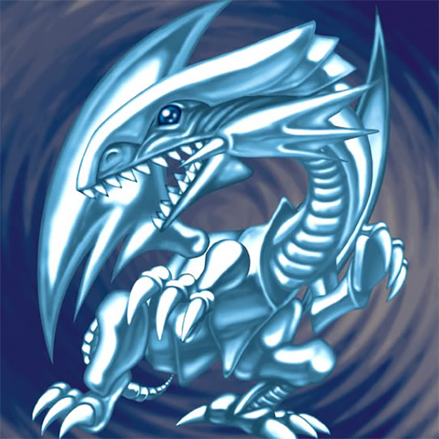
青眼白龙
ygo_n_89631139 · N → SR · 5.367
原效果
召唤成功时：破坏对方场上全部怪兽。
当前效果
召唤成功时：破坏对方场上全部怪兽。
动漫模型 Blackroot/Anime-Aesthetic-Predictor-Medium，通用模型 LAION-AI/aesthetic-predictor:ViT-B-32/openai。分类独立评分：角色卡=动漫50%+通用30%+技术20%；魔法卡=通用80%+技术20%；陷阱卡=通用85%+技术15%。魔法与陷阱不采用人物审美模型，也不按暗部/闪光面积扣曝光分。固定门槛：R ≥4，SR ≥5，SSR ≥6，UR ≥7；无数量配额。角色技术可读性使用尺寸、边缘细节、曝光截断；魔法与陷阱只使用尺寸与边缘细节，不包含构图、水印和人体结构识别。

ygo_n_89631139 · N → SR · 5.367
召唤成功时：破坏对方场上全部怪兽。
召唤成功时：破坏对方场上全部怪兽。
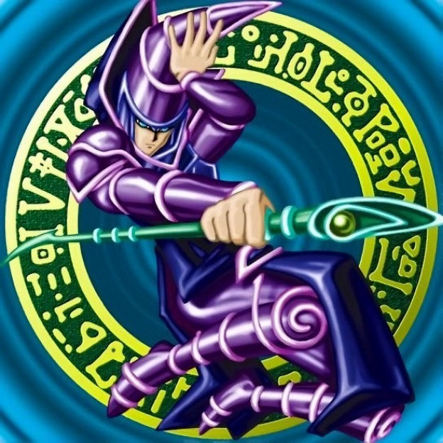
ygo_n_46986414 · N → SR · 5.167
召唤成功时：破坏对方场上全部魔法与陷阱卡。
召唤成功时：破坏对方场上全部魔法与陷阱卡。
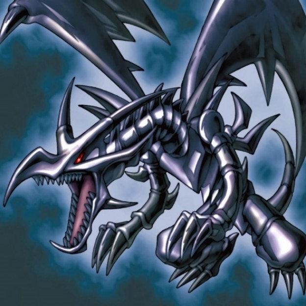
ygo_n_74677422 · N → SR · 5.093
召唤成功时：给予对方1200点伤害。
召唤成功时：给予对方1200点伤害。
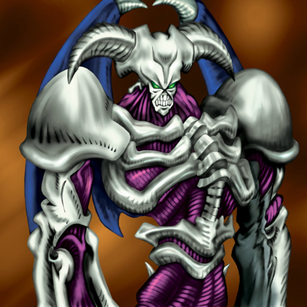
ygo_n_70781052 · N → R · 4.761
召唤成功时：对方全部怪兽攻击力下降700。
召唤成功时：对方全部怪兽攻击力下降700。
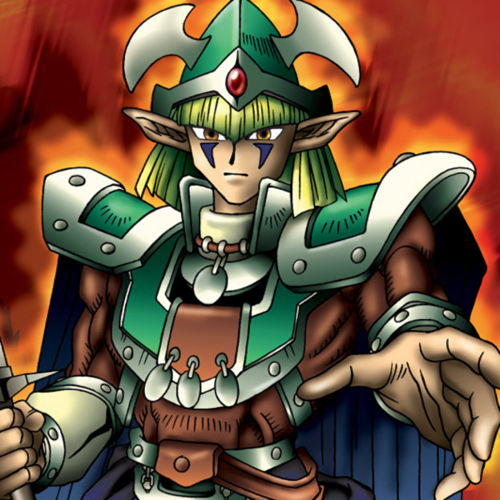
ygo_n_91152256 · N → SR · 5.556
召唤成功时：己方场上每有1只怪兽，这张卡攻击力上升250。
召唤成功时：己方场上每有1只怪兽，这张卡攻击力上升250。
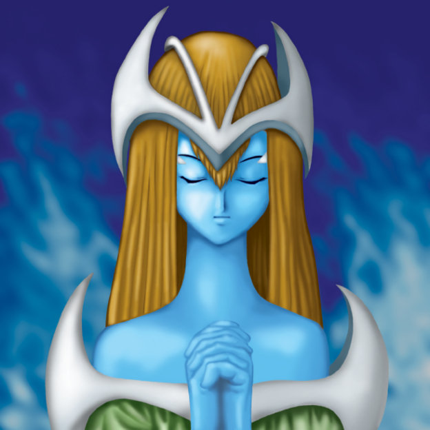
ygo_n_15025844 · N → R · 4.557
召唤成功时：回复900LP。
召唤成功时：回复900LP。
ygo_n_5053103 · N → SR · 5.273
召唤成功时：这张卡攻击力上升600。
召唤成功时：这张卡攻击力上升600。
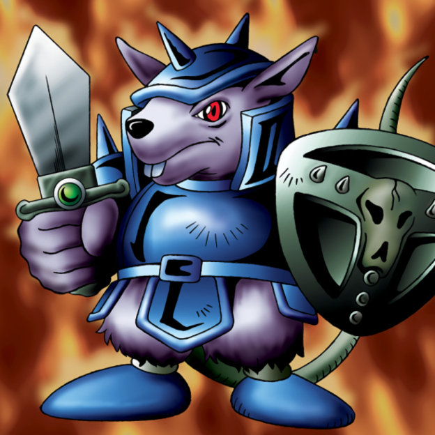
ygo_n_32452818 · N → SR · 5.350
召唤成功时：这张卡守备力上升700。
召唤成功时：这张卡守备力上升700。
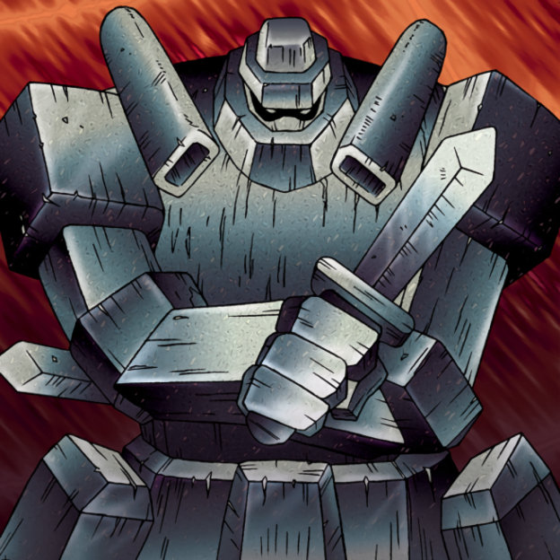
ygo_n_13039848 · N → SSR · 6.476
召唤成功时：直到下个回合开始，这张卡不会成为对方效果的对象。
召唤成功时：直到下个回合开始，这张卡不会成为对方效果的对象。
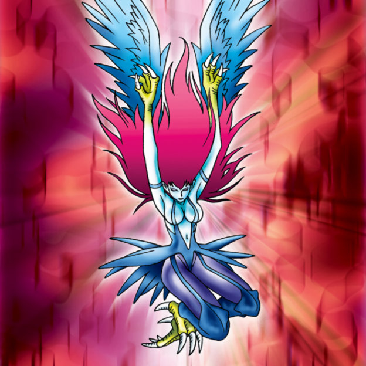
ygo_n_76812113 · N → SR · 5.939
召唤成功时：特殊召唤1只攻击力与守备力均为700的衍生物。
召唤成功时：特殊召唤1只攻击力与守备力均为700的衍生物。
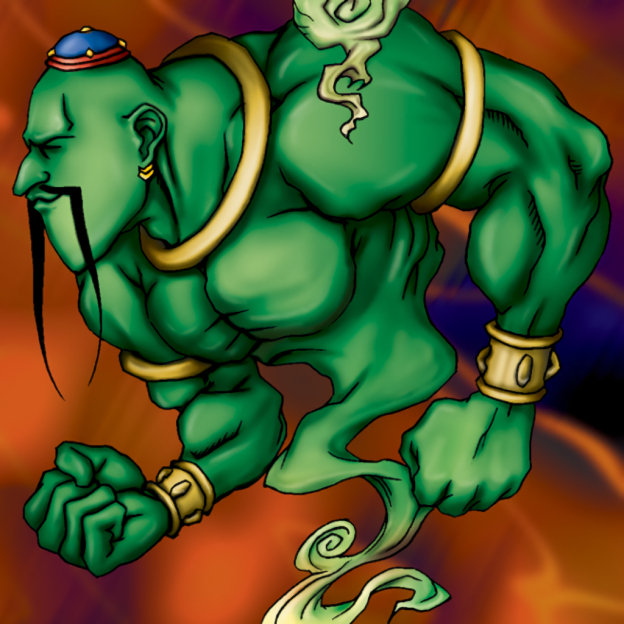
ygo_n_97590747 · N → SR · 5.058
被破坏时：对方随机丢弃1张手牌。
被破坏时：对方随机丢弃1张手牌。
ygo_n_23771716 · N → R · 4.787
召唤成功时：对方攻击力最高的怪兽守备力下降600，守备力变为0则破坏。
召唤成功时：对方攻击力最高的怪兽守备力下降600，守备力变为0则破坏。
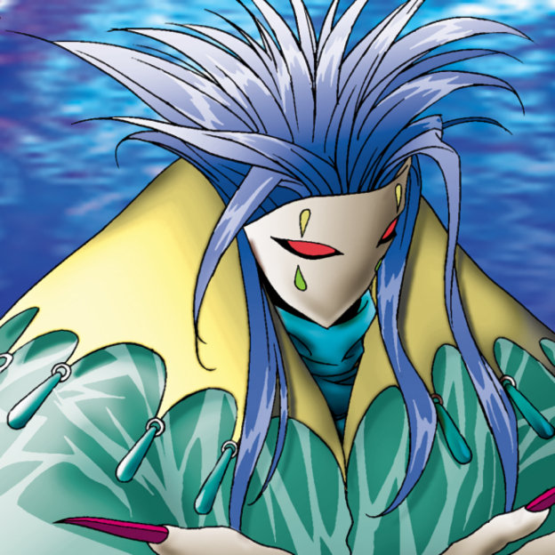
ygo_n_85639257 · N → SR · 5.681
召唤成功时：将对方攻击力最高的怪兽暂时除外，回合结束时返回。
召唤成功时：将对方攻击力最高的怪兽暂时除外，回合结束时返回。
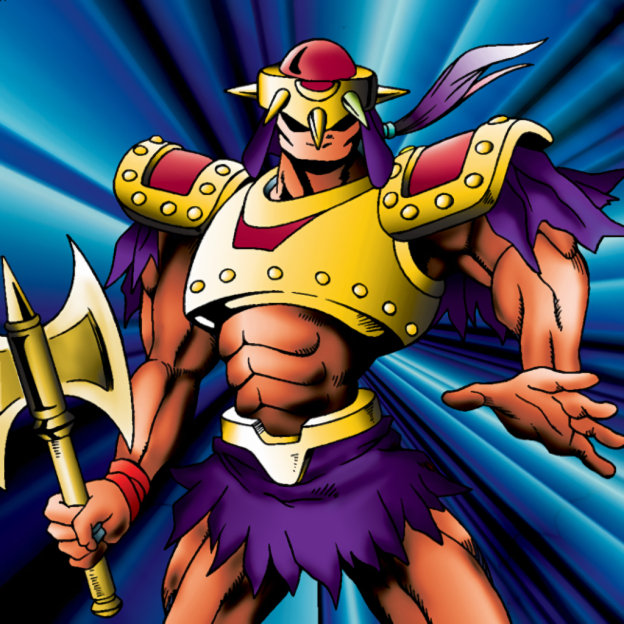
ygo_n_48305365 · N → SR · 5.493
召唤成功时：对方攻击力最高的怪兽守备力下降500，自己回复实际减少的数值。
召唤成功时：对方攻击力最高的怪兽守备力下降500，自己回复实际减少的数值。
ygo_n_69140098 · N → SR · 5.318
召唤成功时：从卡组将1只怪兽加入手牌。
召唤成功时：从卡组将1只怪兽加入手牌。
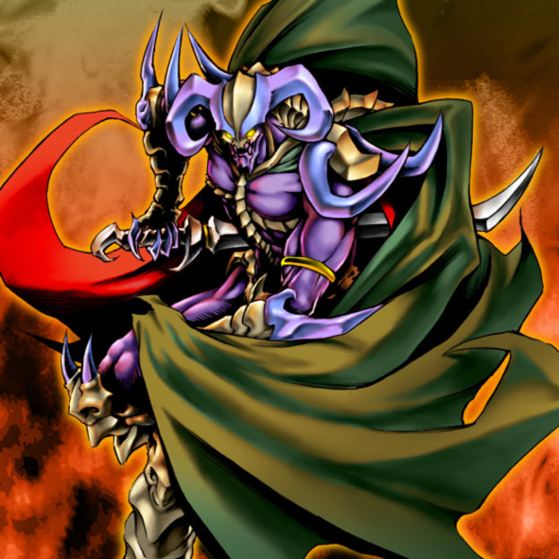
ygo_n_49881766 · N → SR · 5.573
被破坏时：双方各受到400点伤害。
被破坏时：双方各受到400点伤害。
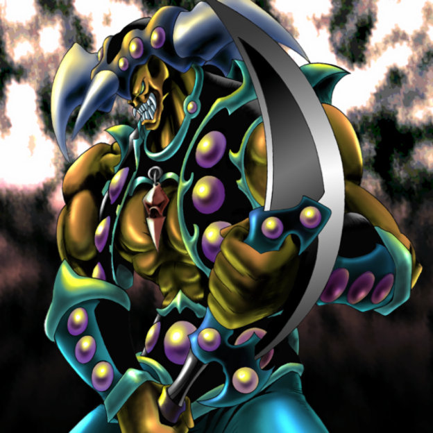
ygo_n_14898066 · N → SR · 5.626
召唤成功时：从对方墓地除外最多2张卡。
召唤成功时：从对方墓地除外最多2张卡。
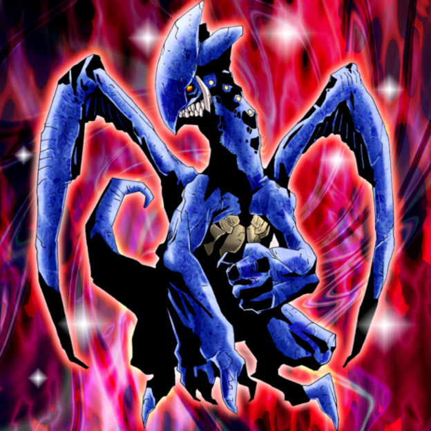
ygo_n_11091375 · N → R · 4.917
召唤成功时：将对方攻击力最高的怪兽返回手牌。
召唤成功时：将对方攻击力最高的怪兽返回手牌。
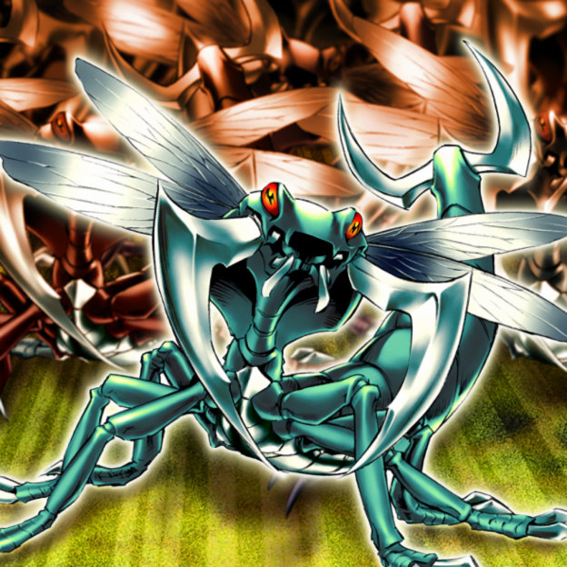
ygo_n_16587243 · N → SR · 5.312
召唤成功时：对方攻击力最高的怪兽攻击力下降600。
召唤成功时：对方攻击力最高的怪兽攻击力下降600。
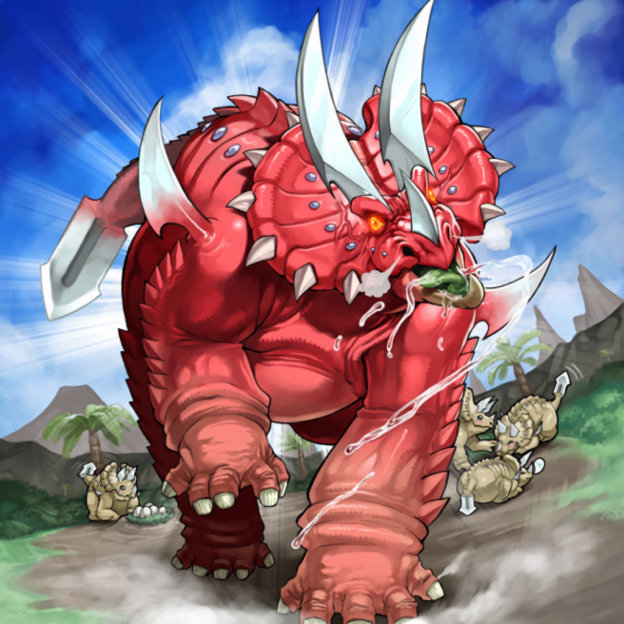
ygo_n_37265642 · N → SSR · 6.335
召唤成功时：破坏对方攻击力最低的怪兽。
召唤成功时：破坏对方攻击力最低的怪兽。
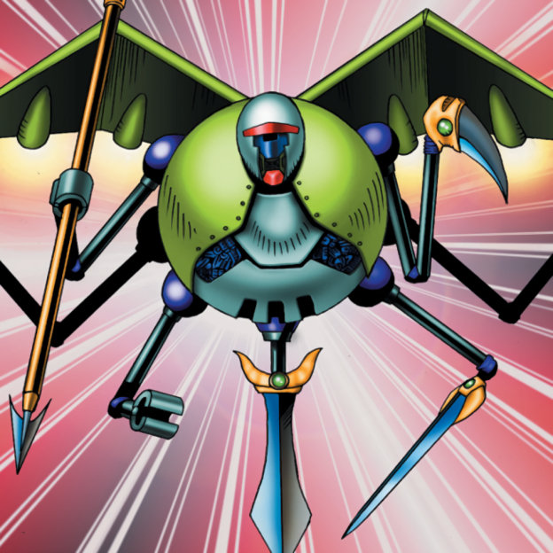
ygo_n_7359741 · N → SSR · 6.029
召唤成功时：给予对方600点直接伤害。
召唤成功时：给予对方600点直接伤害。
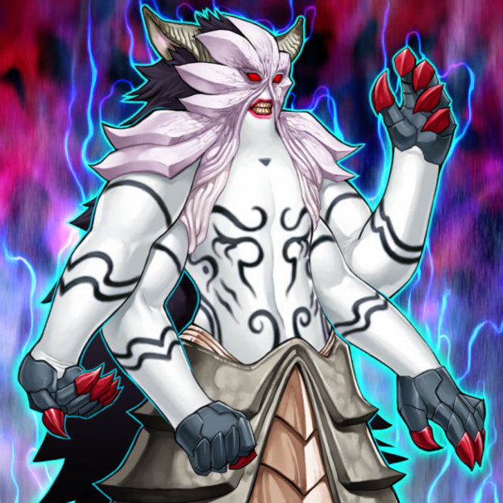
ygo_n_69247929 · N → SR · 5.939
召唤成功时：己方攻击力最高的怪兽攻击力与守备力上升400。
召唤成功时：己方攻击力最高的怪兽攻击力与守备力上升400。
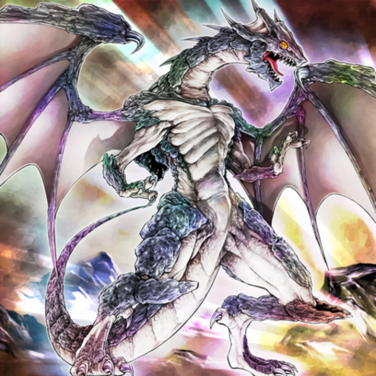
ygo_n_43096270 · N → SR · 5.850
召唤成功时：己方场上全部怪兽攻击力上升300。
召唤成功时：己方场上全部怪兽攻击力上升300。
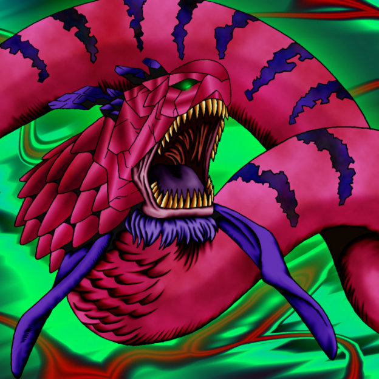
ygo_n_58831685 · N → SR · 5.720
召唤成功时：对方攻击力最高的怪兽本回合不能攻击。
召唤成功时：对方攻击力最高的怪兽本回合不能攻击。
ygo_n_49003308 · N → SR · 5.141
召唤成功时：对方攻击力最低的怪兽攻击力下降400。
召唤成功时：对方攻击力最低的怪兽攻击力下降400。
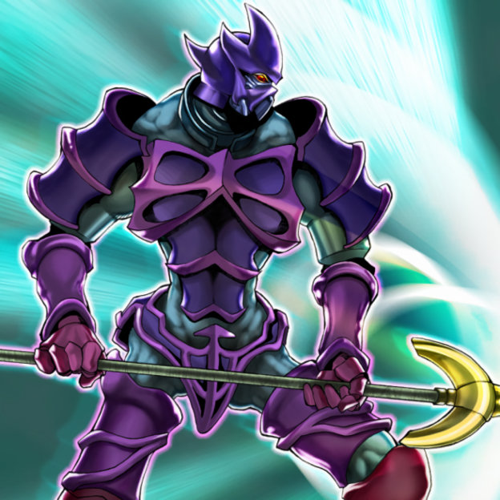
ygo_n_42071342 · N → SR · 5.021
召唤成功时：破坏对方1张魔法或陷阱卡。
召唤成功时：破坏对方1张魔法或陷阱卡。
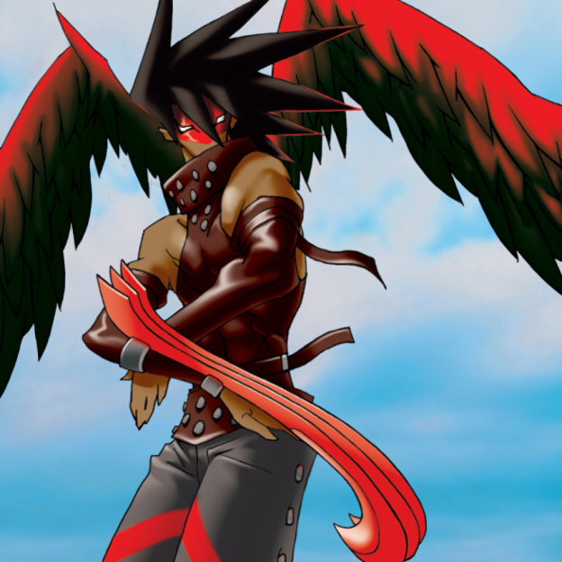
ygo_n_30532390 · N → SR · 5.604
召唤成功时：从卡组将1只光属性怪兽加入手牌。
召唤成功时：从卡组将1只光属性怪兽加入手牌。
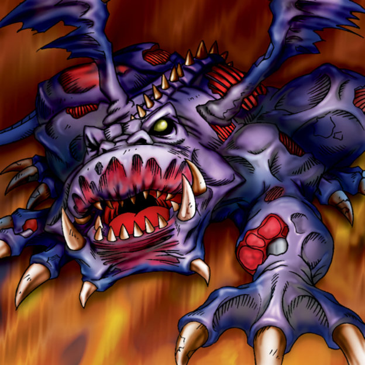
ygo_n_66672569 · N → SR · 5.344
被破坏时：己方1只4星以下怪兽攻击力与守备力上升400。
被破坏时：己方1只4星以下怪兽攻击力与守备力上升400。
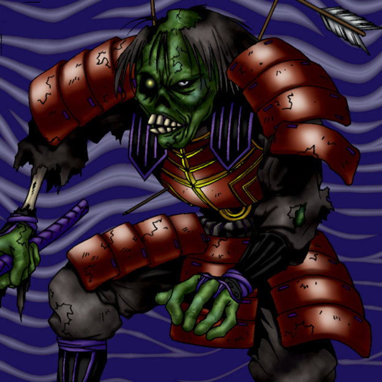
ygo_n_20277860 · N → R · 4.971
被破坏时：回复600LP。
被破坏时：回复600LP。
ygo_n_92667214 · N → SR · 5.269
召唤成功时：对方随机丢弃1张手牌。
召唤成功时：对方随机丢弃1张手牌。
ygo_n_41392891 · N → R · 4.889
召唤成功时：己方有盖放的后场时守备力上升400，否则攻击力上升400。
召唤成功时：己方有盖放的后场时守备力上升400，否则攻击力上升400。
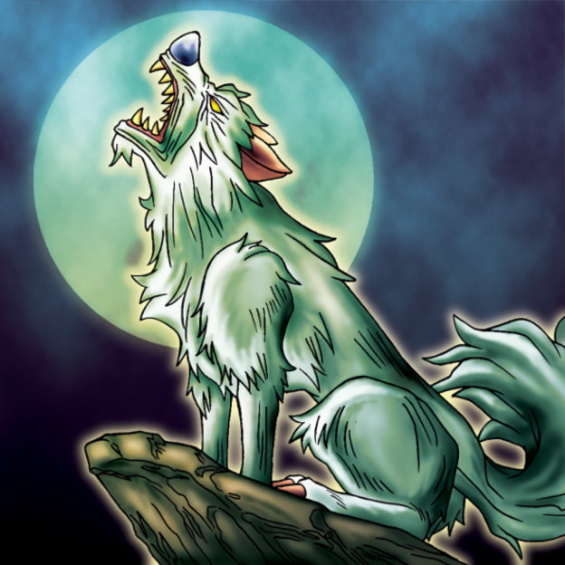
ygo_n_90357090 · N → SR · 5.952
召唤成功时：这张卡攻击力上升400。
召唤成功时：这张卡攻击力上升400。
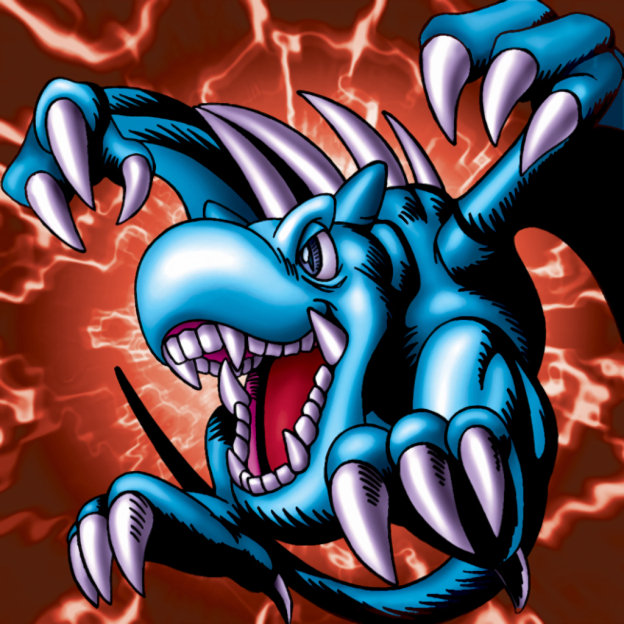
ygo_n_87796900 · N → SR · 5.140
召唤成功时：本回合只要己方场上还有其他怪兽，对方就不能攻击这张卡。
召唤成功时：本回合只要己方场上还有其他怪兽，对方就不能攻击这张卡。
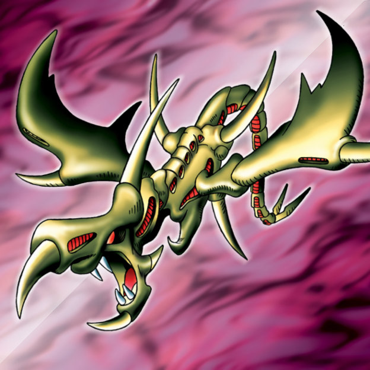
ygo_n_28279543 · N → R · 4.860
被破坏时：给予对方600点伤害。
被破坏时：给予对方600点伤害。
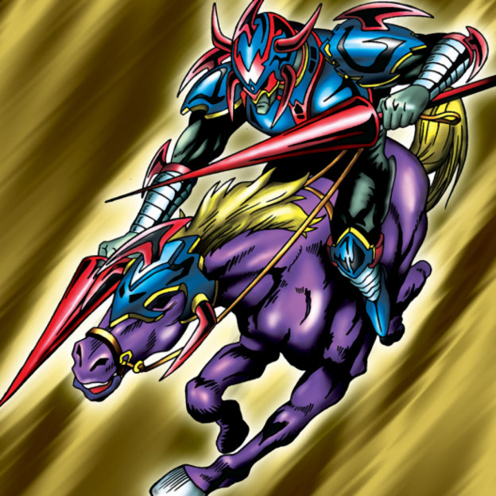
ygo_n_6368038 · N → SR · 5.393
召唤成功时：破坏对方攻击力最高的怪兽。
召唤成功时：破坏对方攻击力最高的怪兽。
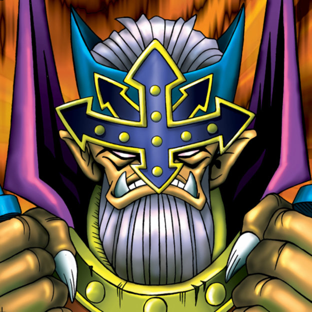
ygo_n_30113682 · N → SR · 5.168
召唤成功时：本回合追加1次通常召唤。
召唤成功时：本回合追加1次通常召唤。
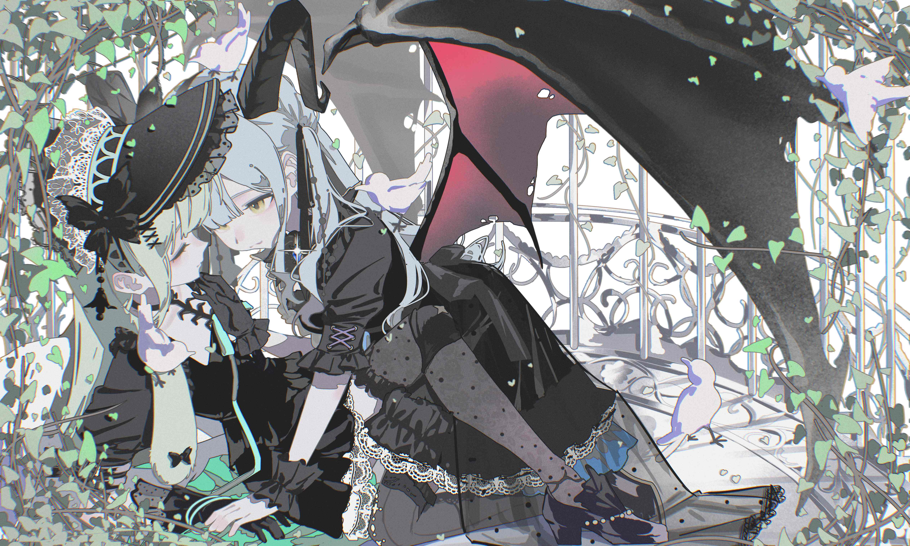
picture_ssr7_001 · SSR → SR · 5.383
【圣域裁决·终幕】通常召唤成功时，同名此效果每回合1次：自己一只表侧怪兽获得1次破坏替代：将其改为守备表示，直到下个回合结束有效。 【余响·构思】主要阶段，同名此效果每回合1次：展示卡组顶2张卡，将其中1张魔法加入手牌，其余按原顺序放回卡组底。
【圣域裁决·终幕】通常召唤成功时，同名此效果每回合1次：自己一只表侧怪兽获得1次破坏替代：将其改为守备表示，直到下个回合结束有效。
picture_ssr7_002 · SSR → SSR · 6.629
【弥音·交替】主要阶段，同名此效果每回合1次：将自己一只表侧怪兽返回手牌，再将手牌第一只4星以下怪兽特殊召唤为守备表示。 【余响·蓄势】主要阶段，同名此效果每回合1次：自身获得1个蓄力指示物（最多3个），攻击力上升150；移除指示物时失去对应的提升。
【弥音·交替】主要阶段，同名此效果每回合1次：将自己一只表侧怪兽返回手牌，再将手牌第一只4星以下怪兽特殊召唤为守备表示。 【余响·蓄势】主要阶段，同名此效果每回合1次：自身获得1个蓄力指示物（最多3个），攻击力上升150；移除指示物时失去对应的提升。
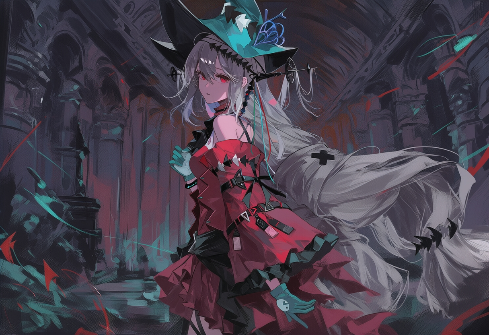
picture_ssr7_003 · SSR → SSR · 6.466
【深海潮歌·深海夜宴】主要阶段，同名此效果每回合1次：将对方一只可取对象表侧怪兽送入异界区；1个结束阶段后回到场上（守备表示、攻击力下降300、效果封印1回合）。 【余响·守护】主要阶段，同名此效果每回合1次：自身直到下个回合结束不能成为效果对象，其守备力上升300。
【深海潮歌·深海夜宴】主要阶段，同名此效果每回合1次：将对方一只可取对象表侧怪兽送入异界区；1个结束阶段后回到场上（守备表示、攻击力下降300、效果封印1回合）。 【余响·守护】主要阶段，同名此效果每回合1次：自身直到下个回合结束不能成为效果对象，其守备力上升300。
picture_ssr7_004 · SSR → SSR · 6.720
【圣域裁决·晨祷】通常召唤成功时，同名此效果每回合1次：将自己墓地最后1张卡除外；恢复1100LP。 【余响·寻找】主要阶段，同名此效果每回合1次：展示卡组顶2张卡，将其中1张怪兽加入手牌，其余按原顺序放回卡组底。
【圣域裁决·晨祷】通常召唤成功时，同名此效果每回合1次：将自己墓地最后1张卡除外；恢复1100LP。 【余响·寻找】主要阶段，同名此效果每回合1次：展示卡组顶2张卡，将其中1张怪兽加入手牌，其余按原顺序放回卡组底。
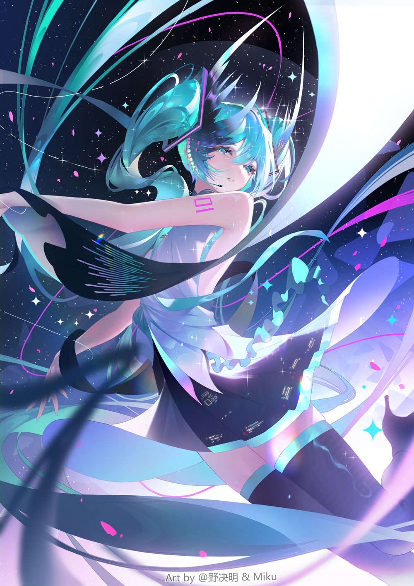
picture_ssr7_005 · SSR → SSR · 6.316
【未来音浪·星海镜音】自己的结束阶段，同名此效果每回合1次：自身获得1个蓄力指示物（最多3个），攻击力上升200；移除指示物时失去对应的提升。 【余响·构思】主要阶段，同名此效果每回合1次：展示卡组顶2张卡，将其中1张魔法加入手牌，其余按原顺序放回卡组底。
【未来音浪·星海镜音】自己的结束阶段，同名此效果每回合1次：自身获得1个蓄力指示物（最多3个），攻击力上升300；移除指示物时失去对应的提升。 【余响·构思】主要阶段，同名此效果每回合1次：展示卡组顶2张卡，将其中1张魔法加入手牌，其余按原顺序放回卡组底。
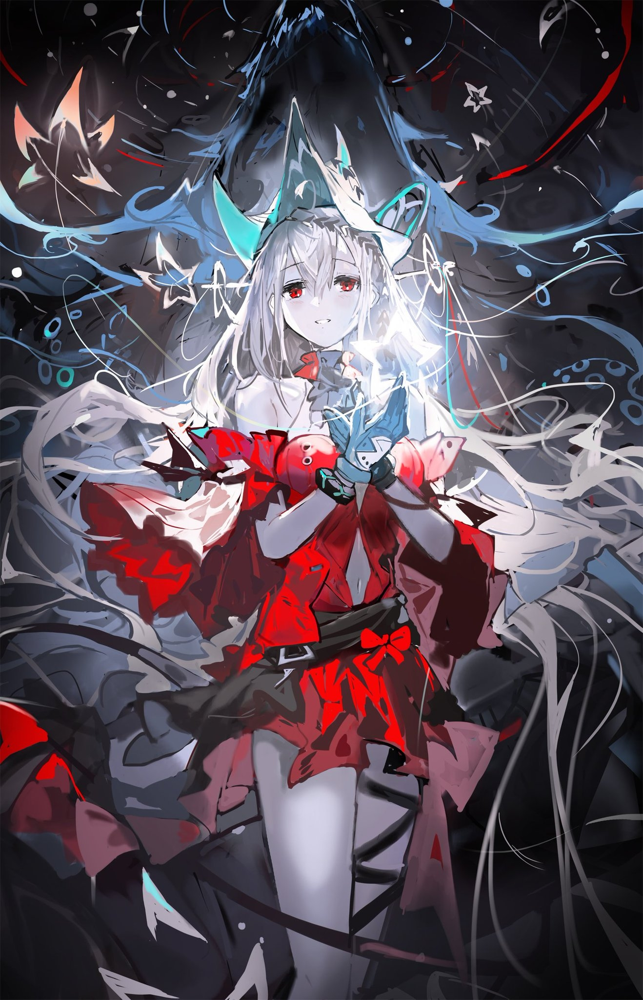
picture_ssr7_006 · SSR → SSR · 6.512
【深海潮歌·霜海凛冬】通常召唤成功时，同名此效果每回合1次：支付600LP；将对方一只可取对象表侧怪兽变为守备表示，直到下个回合结束不能攻击或手动改变表示形式。 【余响·蓄势】主要阶段，同名此效果每回合1次：自身获得1个蓄力指示物（最多3个），攻击力上升150；移除指示物时失去对应的提升。
【深海潮歌·霜海凛冬】通常召唤成功时，同名此效果每回合1次：支付600LP；将对方一只可取对象表侧怪兽变为守备表示，直到下个回合结束不能攻击或手动改变表示形式。 【余响·蓄势】主要阶段，同名此效果每回合1次：自身获得1个蓄力指示物（最多3个），攻击力上升150；移除指示物时失去对应的提升。
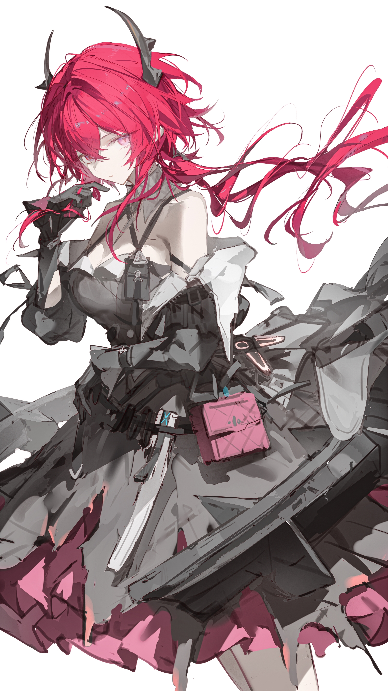
picture_ssr7_007 · SSR → SSR · 6.072
【莱万汀·熔核烈歌】主要阶段，同名此效果每回合1次：给对方一只可取对象表侧怪兽放置3层灼烧；其控制者每个结束阶段受到400×层数伤害，随后层数-1（上限3层）。 【余响·守护】主要阶段，同名此效果每回合1次：自身直到下个回合结束不能成为效果对象，其守备力上升300。
【莱万汀·熔核烈歌】主要阶段，同名此效果每回合1次：给对方一只可取对象表侧怪兽放置3层灼烧；其控制者每个结束阶段受到400×层数伤害，随后层数-1（上限3层）。 【余响·守护】主要阶段，同名此效果每回合1次：自身直到下个回合结束不能成为效果对象，其守备力上升300。
picture_ssr7_008 · SSR → SR · 5.926
【轰轰火花·可莉】主要阶段，同名此效果每回合1次：给对方一只可取对象表侧怪兽放置爆破标记；本回合结束时破坏该怪兽，提前离场则标记失效。 【余响·寻找】主要阶段，同名此效果每回合1次：展示卡组顶2张卡，将其中1张怪兽加入手牌，其余按原顺序放回卡组底。
【轰轰火花·可莉】主要阶段，同名此效果每回合1次：给对方一只可取对象表侧怪兽放置爆破标记；本回合结束时破坏该怪兽，提前离场则标记失效。
picture_ssr7_009 · SSR → SSR · 6.453
【傀儡领域·幽兰】通常召唤成功时，同名此效果每回合1次：特殊召唤1只0攻1100守、1星的守备衍生物，不能作为上级召唤的祭品。 【余响·构思】主要阶段，同名此效果每回合1次：展示卡组顶2张卡，将其中1张魔法加入手牌，其余按原顺序放回卡组底。
【傀儡领域·幽兰】通常召唤成功时，同名此效果每回合1次：特殊召唤1只0攻1100守、1星的守备衍生物，不能作为上级召唤的祭品。 【余响·构思】主要阶段，同名此效果每回合1次：展示卡组顶2张卡，将其中1张魔法加入手牌，其余按原顺序放回卡组底。
picture_ssr7_010 · SSR → UR · 7.079
【超电磁炮】自己的主要阶段，同名此效果每回合1次：移除自身2个蓄力指示物及其对应攻击力提升，支付700LP；将对方一只可取对象表侧怪兽除外。 【电荷积蓄】自己的主要阶段，同名此效果每回合1次：自身获得1个蓄力指示物（最多3个），攻击力上升200；移除指示物时失去对应的提升。
【超电磁炮】自己的主要阶段，同名此效果每回合1次：移除自身2个蓄力指示物及其对应攻击力提升，支付700LP；将对方一只可取对象表侧怪兽除外。 【电荷积蓄】自己的主要阶段，同名此效果每回合1次：自身获得1个蓄力指示物（最多3个），攻击力上升200；移除指示物时失去对应的提升。
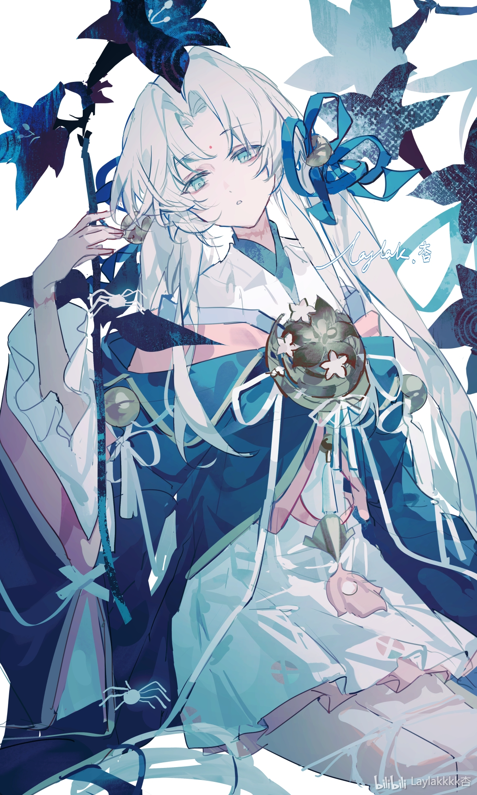
picture_ssr7_011 · SSR → SSR · 6.048
【冰晶领域·苍鳞】通常召唤成功时，同名此效果每回合1次：支付600LP；将对方一只可取对象表侧怪兽变为守备表示，直到下个回合结束不能攻击或手动改变表示形式，其攻击力下降100。 【余响·蓄势】主要阶段，同名此效果每回合1次：自身获得1个蓄力指示物（最多3个），攻击力上升150；移除指示物时失去对应的提升。
【冰晶领域·苍鳞】通常召唤成功时，同名此效果每回合1次：支付600LP；将对方一只可取对象表侧怪兽变为守备表示，直到下个回合结束不能攻击或手动改变表示形式，其攻击力下降100。 【余响·蓄势】主要阶段，同名此效果每回合1次：自身获得1个蓄力指示物（最多3个），攻击力上升150；移除指示物时失去对应的提升。
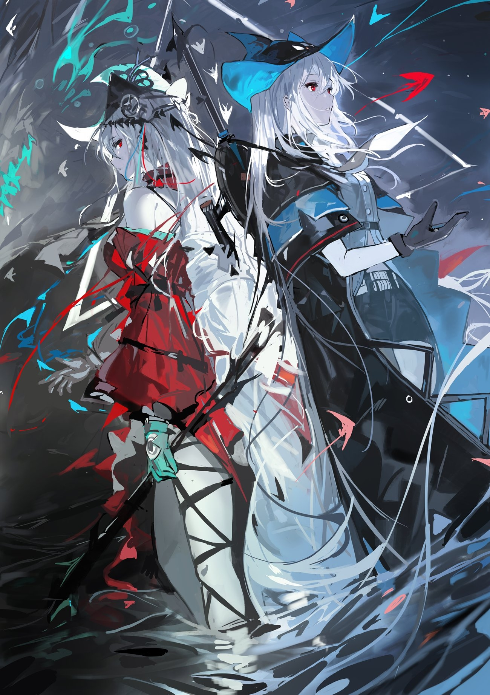
picture_ssr7_012 · SSR → SSR · 6.301
【深海潮歌·黑潮双刃】主要阶段，同名此效果每回合1次：自身获得1个蓄力指示物（最多3个），攻击力上升300；移除指示物时失去对应的提升。 【余响·守护】主要阶段，同名此效果每回合1次：自身直到下个回合结束不能成为效果对象，其守备力上升300。
【深海潮歌·黑潮双刃】主要阶段，同名此效果每回合1次：自身获得1个蓄力指示物（最多3个），攻击力上升350；移除指示物时失去对应的提升。 【余响·守护】主要阶段，同名此效果每回合1次：自身直到下个回合结束不能成为效果对象，其守备力上升300。
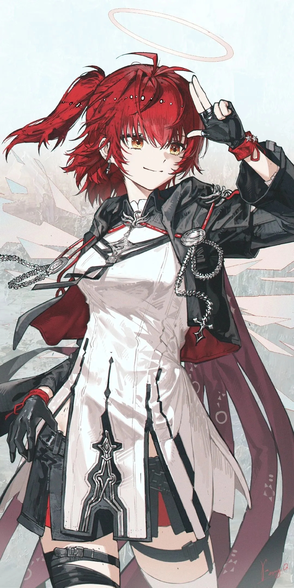
picture_ssr7_013 · SSR → SSR · 6.675
【过载模式·红莲铳火】主要阶段，同名此效果每回合1次：给对方一只可取对象表侧怪兽放置2层出血；出血怪兽每次参与战斗后，其控制者受到500×层数伤害，随后层数-1。 【余响·寻找】主要阶段，同名此效果每回合1次：展示卡组顶2张卡，将其中1张怪兽加入手牌，其余按原顺序放回卡组底。
【过载模式·红莲铳火】主要阶段，同名此效果每回合1次：给对方一只可取对象表侧怪兽放置2层出血；出血怪兽每次参与战斗后，其控制者受到500×层数伤害，随后层数-1。 【余响·寻找】主要阶段，同名此效果每回合1次：展示卡组顶2张卡，将其中1张怪兽加入手牌，其余按原顺序放回卡组底。
picture_ssr7_014 · SSR → SSR · 6.501
【奇美拉·星屑天幕】主要阶段，同名此效果每回合1次：给对方一只可取对象表侧怪兽施加诅咒：其效果无效、不能作为上级召唤的祭品；被破坏时其控制者受到500×层数伤害。 【余响·构思】主要阶段，同名此效果每回合1次：展示卡组顶2张卡，将其中1张魔法加入手牌，其余按原顺序放回卡组底。
【奇美拉·星屑天幕】主要阶段，同名此效果每回合1次：给对方一只可取对象表侧怪兽施加诅咒：其效果无效、不能作为上级召唤的祭品；被破坏时其控制者受到500×层数伤害。 【余响·构思】主要阶段，同名此效果每回合1次：展示卡组顶2张卡，将其中1张魔法加入手牌，其余按原顺序放回卡组底。
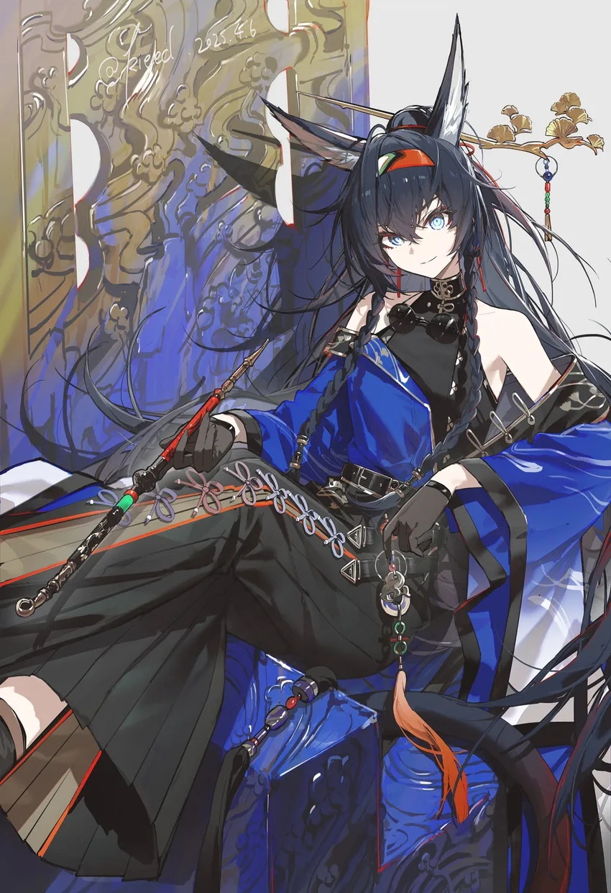
picture_ssr7_015 · SSR → SSR · 6.412
【沸腾爆裂·炎锯镇岳】主要阶段，同名此效果每回合1次：给对方一只可取对象表侧怪兽放置1层出血；出血怪兽每次参与战斗后，其控制者受到700×层数伤害，随后层数-1。 【余响·蓄势】主要阶段，同名此效果每回合1次：自身获得1个蓄力指示物（最多3个），攻击力上升150；移除指示物时失去对应的提升。
【沸腾爆裂·炎锯镇岳】主要阶段，同名此效果每回合1次：给对方一只可取对象表侧怪兽放置1层出血；出血怪兽每次参与战斗后，其控制者受到700×层数伤害，随后层数-1。 【余响·蓄势】主要阶段，同名此效果每回合1次：自身获得1个蓄力指示物（最多3个），攻击力上升150；移除指示物时失去对应的提升。
picture_ssr7_016 · SSR → SSR · 6.296
【D12·赤痕爆破】主要阶段，同名此效果每回合1次：给对方一只可取对象表侧怪兽放置1层灼烧，然后立即引爆其身上全部灼烧层数：每层使其控制者受到750点伤害；若其带有剧毒，同时引爆剧毒：每层给对方全体表侧怪兽的守备力下降300，守备力变为0的破坏。 【余响·守护】主要阶段，同名此效果每回合1次：自身直到下个回合结束不能成为效果对象，其守备力上升300。
【D12·赤痕爆破】主要阶段，同名此效果每回合1次：给对方一只可取对象表侧怪兽放置1层灼烧，然后立即引爆其身上全部灼烧层数：每层使其控制者受到750点伤害；若其带有剧毒，同时引爆剧毒：每层给对方全体表侧怪兽的守备力下降300，守备力变为0的破坏。 【余响·守护】主要阶段，同名此效果每回合1次：自身直到下个回合结束不能成为效果对象，其守备力上升300。
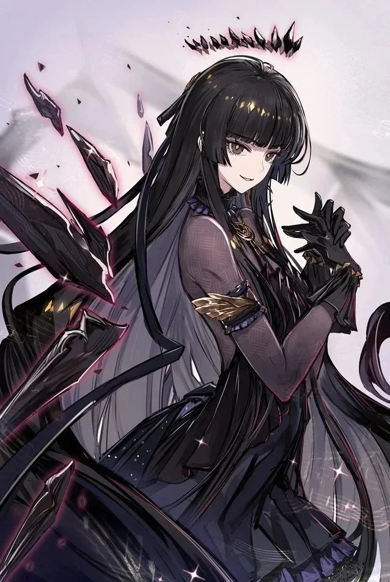
picture_ssr7_017 · SSR → SSR · 6.745
【月影终式·夜祷】主要阶段，同名此效果每回合1次：将自己墓地最后1只4星以下怪兽特殊召唤为守备表示，其效果直到回合结束无效。 【余响·寻找】主要阶段，同名此效果每回合1次：展示卡组顶2张卡，将其中1张怪兽加入手牌，其余按原顺序放回卡组底。
【月影终式·夜祷】主要阶段，同名此效果每回合1次：将自己墓地最后1只4星以下怪兽特殊召唤为守备表示，其效果直到回合结束无效。 【余响·寻找】主要阶段，同名此效果每回合1次：展示卡组顶2张卡，将其中1张怪兽加入手牌，其余按原顺序放回卡组底。
picture_ssr7_018 · SSR → SSR · 6.482
【傀儡领域·苍牙】主要阶段，同名此效果每回合1次：将手牌中第一只4星以下怪兽特殊召唤为守备表示，其效果直到回合结束无效。 【余响·构思】主要阶段，同名此效果每回合1次：展示卡组顶2张卡，将其中1张魔法加入手牌，其余按原顺序放回卡组底。
【傀儡领域·苍牙】主要阶段，同名此效果每回合1次：将手牌中第一只4星以下怪兽特殊召唤为守备表示，其效果直到回合结束无效。 【余响·构思】主要阶段，同名此效果每回合1次：展示卡组顶2张卡，将其中1张魔法加入手牌，其余按原顺序放回卡组底。
picture_ssr7_019 · SSR → SSR · 6.503
【圣域裁决·金律】主要阶段，同名此效果每回合1次：展示卡组顶3张卡，并按怪兽、魔法、陷阱的顺序重新排列在卡组顶。 【余响·蓄势】主要阶段，同名此效果每回合1次：自身获得1个蓄力指示物（最多3个），攻击力上升150；移除指示物时失去对应的提升。
【圣域裁决·金律】主要阶段，同名此效果每回合1次：展示卡组顶3张卡，并按怪兽、魔法、陷阱的顺序重新排列在卡组顶。 【余响·蓄势】主要阶段，同名此效果每回合1次：自身获得1个蓄力指示物（最多3个），攻击力上升150；移除指示物时失去对应的提升。
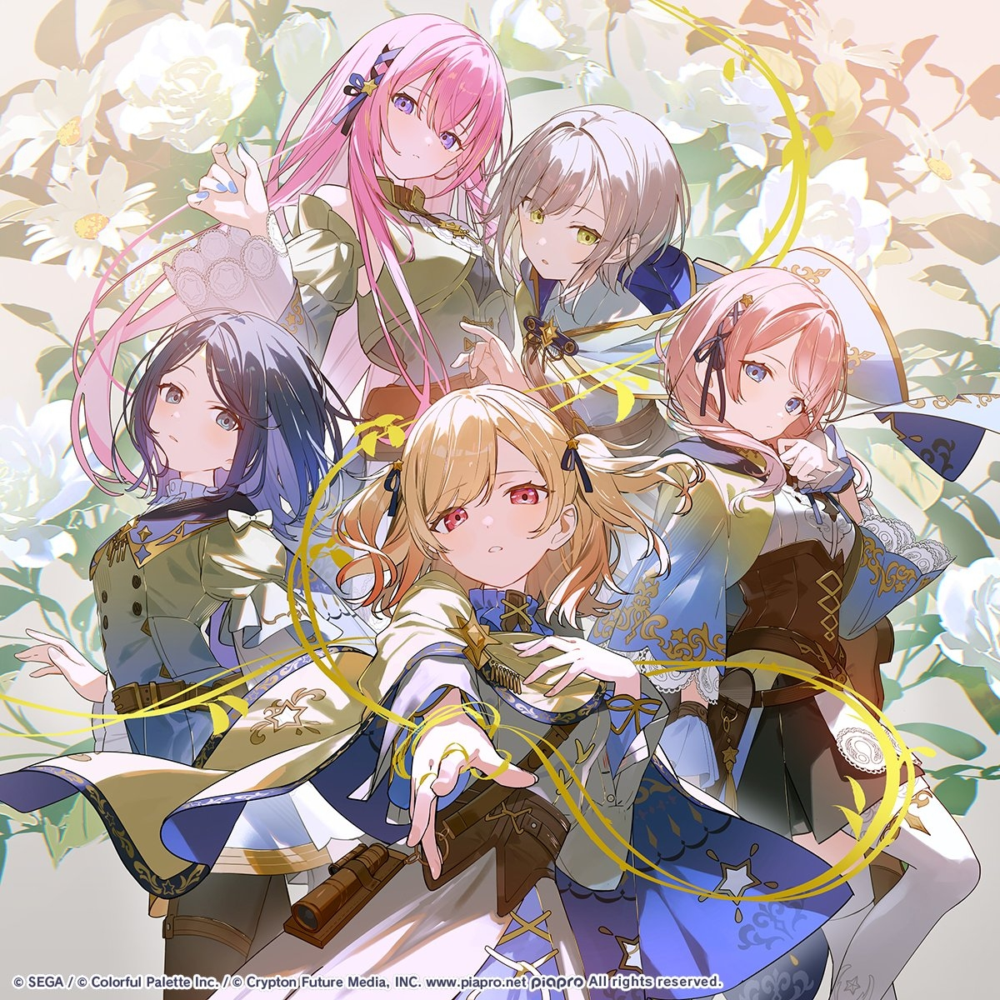
picture_ssr7_020 · SSR → SSR · 6.403
【虹誓·合奏】自己的结束阶段，同名此效果每回合1次：自己场上有至少2种属性的表侧怪兽时，抽1张卡。 【余响·蓄势】主要阶段，同名此效果每回合1次：自身获得1个蓄力指示物（最多3个），攻击力上升150；移除指示物时失去对应的提升。
【虹誓·合奏】自己的结束阶段，同名此效果每回合1次：自己场上有至少3种属性的表侧怪兽时，抽1张卡。 【余响·蓄势】主要阶段，同名此效果每回合1次：自身获得1个蓄力指示物（最多3个），攻击力上升150；移除指示物时失去对应的提升。
picture_ssr7_021 · SSR → SSR · 6.346
【龙魂咆哮·破晓】主要阶段，同名此效果每回合1次：自身本回合获得贯穿守备的战斗伤害。 【余响·构思】主要阶段，同名此效果每回合1次：展示卡组顶2张卡，将其中1张魔法加入手牌，其余按原顺序放回卡组底。
【龙魂咆哮·破晓】主要阶段，同名此效果每回合1次：自身本回合获得贯穿守备的战斗伤害。 【余响·构思】主要阶段，同名此效果每回合1次：展示卡组顶2张卡，将其中1张魔法加入手牌，其余按原顺序放回卡组底。
picture_ssr7_022 · SSR → SSR · 6.122
【千刃·连击】主要阶段，同名此效果每回合1次：支付600LP；自身本回合可以攻击2次。 【余响·寻找】主要阶段，同名此效果每回合1次：展示卡组顶2张卡，将其中1张怪兽加入手牌，其余按原顺序放回卡组底。
【千刃·连击】主要阶段，同名此效果每回合1次：支付600LP；自身本回合可以攻击2次。 【余响·寻找】主要阶段，同名此效果每回合1次：展示卡组顶2张卡，将其中1张怪兽加入手牌，其余按原顺序放回卡组底。
picture_ssr7_023 · SSR → SSR · 6.525
【阶梯·幻梦】主要阶段，同名此效果每回合1次：将对方一只可取对象表侧怪兽变为里侧守备表示。 【余响·守护】主要阶段，同名此效果每回合1次：自身直到下个回合结束不能成为效果对象，其守备力上升300。
【阶梯·幻梦】主要阶段，同名此效果每回合1次：将对方一只可取对象表侧怪兽变为里侧守备表示。 【余响·守护】主要阶段，同名此效果每回合1次：自身直到下个回合结束不能成为效果对象，其守备力上升300。
picture_ssr7_024 · SSR → SSR · 6.351
【月影终式·夜曲】自己的结束阶段，同名此效果每回合1次：自己场上有至少2种属性的表侧怪兽时，抽1张卡，并恢复350LP。 【余响·蓄势】主要阶段，同名此效果每回合1次：自身获得1个蓄力指示物（最多3个），攻击力上升150；移除指示物时失去对应的提升。
【月影终式·夜曲】自己的结束阶段，同名此效果每回合1次：自己场上有至少2种属性的表侧怪兽时，抽1张卡，并恢复350LP。 【余响·蓄势】主要阶段，同名此效果每回合1次：自身获得1个蓄力指示物（最多3个），攻击力上升150；移除指示物时失去对应的提升。
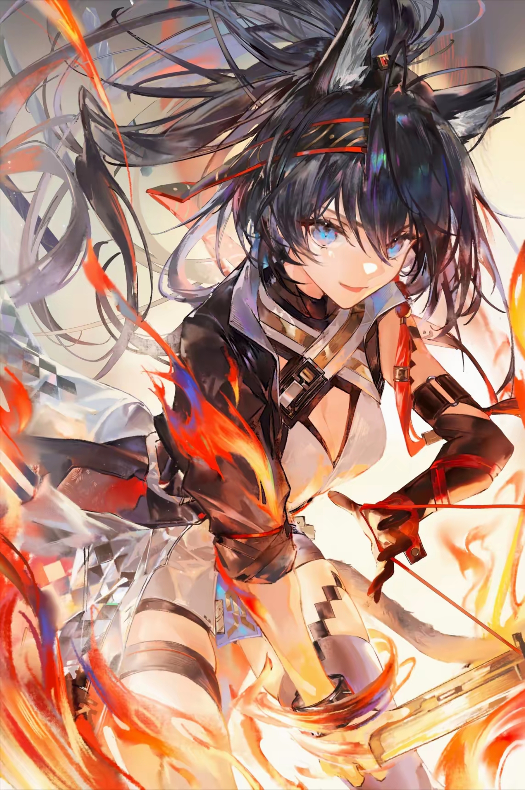
picture_ssr7_025 · SSR → SSR · 6.163
【沸腾爆裂·链锯强袭·炎翼焚天】主要阶段，同名此效果每回合1次：支付600LP；将对方一只可取对象表侧怪兽除外。 【余响·构思】主要阶段，同名此效果每回合1次：展示卡组顶2张卡，将其中1张魔法加入手牌，其余按原顺序放回卡组底。
【沸腾爆裂·链锯强袭·炎翼焚天】主要阶段，同名此效果每回合1次：支付700LP；将对方一只可取对象表侧怪兽除外。 【余响·构思】主要阶段，同名此效果每回合1次：展示卡组顶2张卡，将其中1张魔法加入手牌，其余按原顺序放回卡组底。
picture_ssr7_026 · SSR → SSR · 6.416
【粉色和弦·点燃全场】通常召唤成功时，同名此效果每回合1次：支付600LP；给对方一只可取对象表侧怪兽放置1层灼烧；其控制者每个结束阶段受到700×层数伤害，随后层数-1（上限3层）。 【余响·寻找】主要阶段，同名此效果每回合1次：展示卡组顶2张卡，将其中1张怪兽加入手牌，其余按原顺序放回卡组底。
【粉色和弦·点燃全场】通常召唤成功时，同名此效果每回合1次：支付600LP；给对方一只可取对象表侧怪兽放置1层灼烧；其控制者每个结束阶段受到700×层数伤害，随后层数-1（上限3层）。 【余响·寻找】主要阶段，同名此效果每回合1次：展示卡组顶2张卡，将其中1张怪兽加入手牌，其余按原顺序放回卡组底。
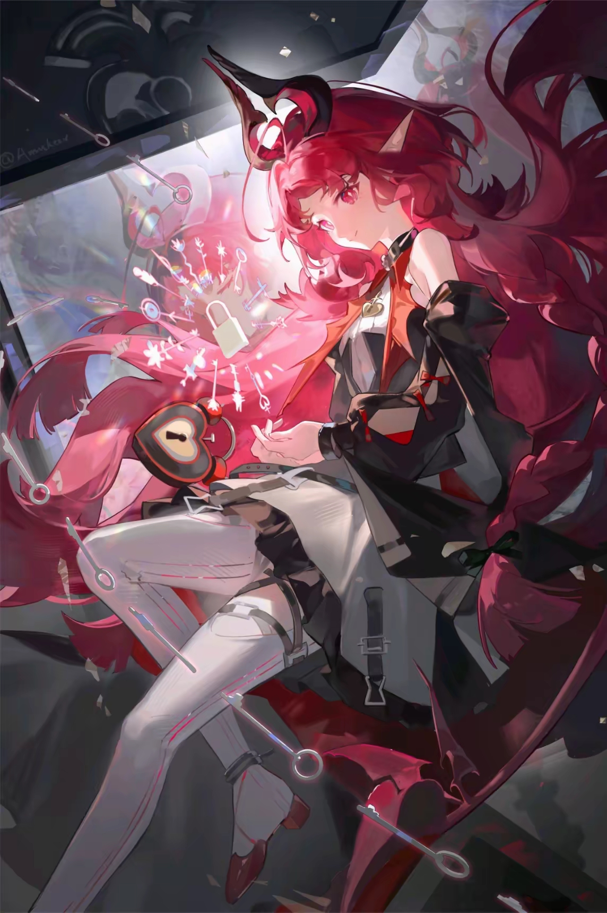
picture_ssr7_027 · SSR → SSR · 6.804
【傀儡领域·血契】通常召唤成功时，同名此效果每回合1次：支付600LP；给对方一只可取对象表侧怪兽施加诅咒：其效果无效、不能作为上级召唤的祭品；被破坏时其控制者受到650×层数伤害。 【余响·守护】主要阶段，同名此效果每回合1次：自身直到下个回合结束不能成为效果对象，其守备力上升300。
【傀儡领域·血契】通常召唤成功时，同名此效果每回合1次：支付600LP；给对方一只可取对象表侧怪兽施加诅咒：其效果无效、不能作为上级召唤的祭品；被破坏时其控制者受到650×层数伤害。 【余响·守护】主要阶段，同名此效果每回合1次：自身直到下个回合结束不能成为效果对象，其守备力上升300。

picture_ssr7_028 · SSR → SSR · 6.076
【圣域裁决·荆冠】主要阶段，同名此效果每回合1次：给对方一只可取对象表侧怪兽放置毒印；本回合结束时，其控制者受到650伤害，并移除毒印。 【余响·蓄势】主要阶段，同名此效果每回合1次：自身获得1个蓄力指示物（最多3个），攻击力上升150；移除指示物时失去对应的提升。
【圣域裁决·荆冠】主要阶段，同名此效果每回合1次：给对方一只可取对象表侧怪兽放置毒印；本回合结束时，其控制者受到650伤害，并移除毒印。 【余响·蓄势】主要阶段，同名此效果每回合1次：自身获得1个蓄力指示物（最多3个），攻击力上升150；移除指示物时失去对应的提升。
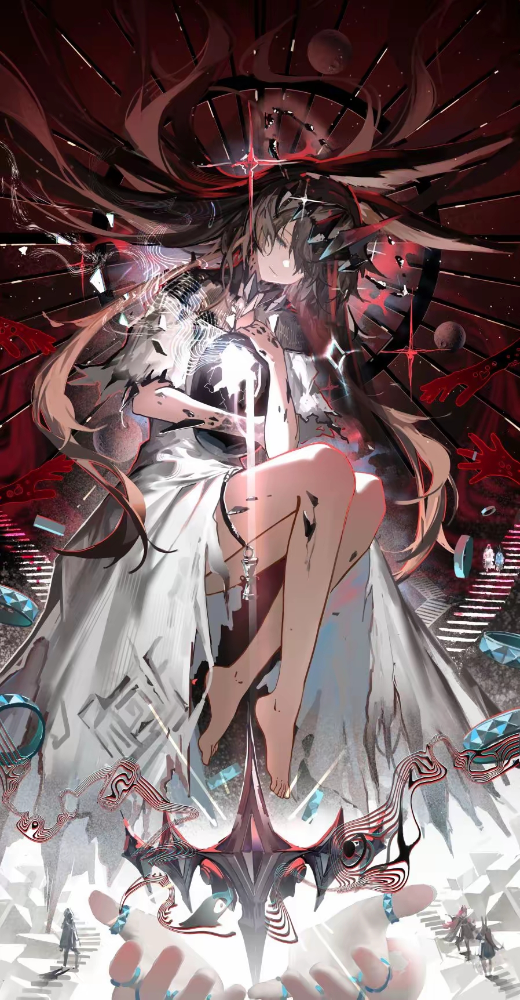
picture_ssr7_029 · SSR → SSR · 6.076
【圣域裁决·终花】主要阶段，同名此效果每回合1次：给对方一只可取对象表侧怪兽放置毒印；本回合结束时，其控制者受到550伤害，并移除毒印。 【余响·构思】主要阶段，同名此效果每回合1次：展示卡组顶2张卡，将其中1张魔法加入手牌，其余按原顺序放回卡组底。
【圣域裁决·终花】主要阶段，同名此效果每回合1次：给对方一只可取对象表侧怪兽放置毒印；本回合结束时，其控制者受到550伤害，并移除毒印。 【余响·构思】主要阶段，同名此效果每回合1次：展示卡组顶2张卡，将其中1张魔法加入手牌，其余按原顺序放回卡组底。
picture_ssr7_030 · SSR → SSR · 6.106
【未来音浪·晴空舞台】自己的结束阶段，同名此效果每回合1次：自己场上有至少2种属性的表侧怪兽时，抽1张卡，并恢复650LP。 【余响·守护】主要阶段，同名此效果每回合1次：自身直到下个回合结束不能成为效果对象，其守备力上升300。
【未来音浪·晴空舞台】自己的结束阶段，同名此效果每回合1次：自己场上有至少2种属性的表侧怪兽时，抽1张卡，并恢复650LP。 【余响·守护】主要阶段，同名此效果每回合1次：自身直到下个回合结束不能成为效果对象，其守备力上升300。
picture_ssr7_031 · SSR → UR · 7.323
【迷途之声·表里低音】通常召唤成功时，同名此效果每回合1次：宣言“怪兽”，随机展示对方1张手牌；猜中则抽1张卡，猜错则对方回复400LP。 【余响·寻找】主要阶段，同名此效果每回合1次：展示卡组顶2张卡，将其中1张怪兽加入手牌，其余按原顺序放回卡组底。
【迷途之声·表里低音】通常召唤成功时，同名此效果每回合1次：宣言“怪兽”，随机展示对方1张手牌；猜中则抽1张卡，猜错则对方回复400LP。 【余响·寻找】主要阶段，同名此效果每回合1次：展示卡组顶2张卡，将其中1张怪兽加入手牌，其余按原顺序放回卡组底。
picture_ssr7_032 · SSR → SSR · 6.433
【沉默琴弦·沉默枷锁】通常召唤成功时，同名此效果每回合1次：支付600LP；给对方一只可取对象表侧怪兽施加诅咒：其效果无效、不能作为上级召唤的祭品；被破坏时其控制者受到600×层数伤害。 【余响·构思】主要阶段，同名此效果每回合1次：展示卡组顶2张卡，将其中1张魔法加入手牌，其余按原顺序放回卡组底。
【沉默琴弦·沉默枷锁】通常召唤成功时，同名此效果每回合1次：支付600LP；给对方一只可取对象表侧怪兽施加诅咒：其效果无效、不能作为上级召唤的祭品；被破坏时其控制者受到600×层数伤害。 【余响·构思】主要阶段，同名此效果每回合1次：展示卡组顶2张卡，将其中1张魔法加入手牌，其余按原顺序放回卡组底。
picture_ssr7_033 · SSR → SR · 5.934
【沉默琴弦·Mortis镜像】通常召唤成功时，同名此效果每回合1次：将自己一只表侧怪兽返回手牌，再将手牌第一只4星以下怪兽特殊召唤为守备表示，然后抽1张卡。 【余响·蓄势】主要阶段，同名此效果每回合1次：自身获得1个蓄力指示物（最多3个），攻击力上升150；移除指示物时失去对应的提升。
【沉默琴弦·Mortis镜像】通常召唤成功时，同名此效果每回合1次：将自己一只表侧怪兽返回手牌，再将手牌第一只4星以下怪兽特殊召唤为守备表示，然后抽1张卡。
picture_ssr7_034 · SSR → SSR · 6.251
【火之神神乐·水之呼吸】主要阶段，同名此效果每回合1次：自身本回合获得贯穿守备的战斗伤害，其攻击力上升100。 【余响·守护】主要阶段，同名此效果每回合1次：自身直到下个回合结束不能成为效果对象，其守备力上升300。
【火之神神乐·水之呼吸】主要阶段，同名此效果每回合1次：自身本回合获得贯穿守备的战斗伤害，其攻击力上升100。 【余响·守护】主要阶段，同名此效果每回合1次：自身直到下个回合结束不能成为效果对象，其守备力上升300。
picture_ssr7_035 · SSR → SSR · 6.548
【牵绊丝线】主要阶段，同名此效果每回合1次：自己场上有至少2种属性的表侧怪兽时，抽2张卡。 【余响·寻找】主要阶段，同名此效果每回合1次：展示卡组顶2张卡，将其中1张怪兽加入手牌，其余按原顺序放回卡组底。
【牵绊丝线】主要阶段，同名此效果每回合1次：自己场上有至少2种属性的表侧怪兽时，抽2张卡。 【余响·寻找】主要阶段，同名此效果每回合1次：展示卡组顶2张卡，将其中1张怪兽加入手牌，其余按原顺序放回卡组底。
picture_ssr7_036 · SSR → SSR · 6.336
【自由即兴·即兴曲】通常召唤成功时，同名此效果每回合1次：抛硬币：正面则抽2张卡；反面则回复800LP。 【余响·构思】主要阶段，同名此效果每回合1次：展示卡组顶2张卡，将其中1张魔法加入手牌，其余按原顺序放回卡组底。
【自由即兴·即兴曲】通常召唤成功时，同名此效果每回合1次：抛硬币：正面则抽2张卡；反面则回复800LP。 【余响·构思】主要阶段，同名此效果每回合1次：展示卡组顶2张卡，将其中1张魔法加入手牌，其余按原顺序放回卡组底。
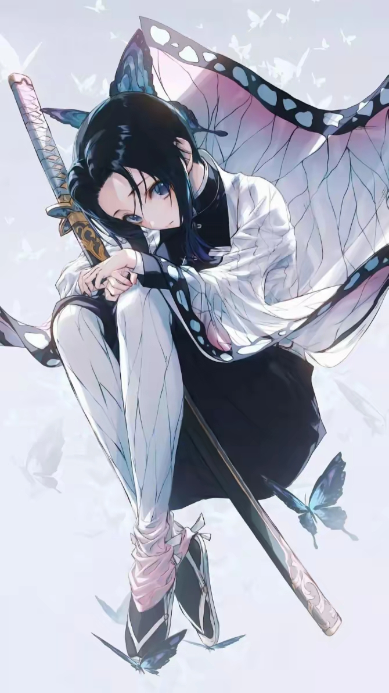
picture_ssr7_037 · SSR → SSR · 6.141
【虫之呼吸·毒刃·蝶舞清影】通常召唤成功时，同名此效果每回合1次：支付600LP；给对方一只可取对象表侧怪兽放置毒印；本回合结束时，其控制者受到800伤害，并移除毒印。 【余响·蓄势】主要阶段，同名此效果每回合1次：自身获得1个蓄力指示物（最多3个），攻击力上升150；移除指示物时失去对应的提升。
【虫之呼吸·毒刃·蝶舞清影】通常召唤成功时，同名此效果每回合1次：支付600LP；给对方一只可取对象表侧怪兽放置毒印；本回合结束时，其控制者受到800伤害，并移除毒印。 【余响·蓄势】主要阶段，同名此效果每回合1次：自身获得1个蓄力指示物（最多3个），攻击力上升150；移除指示物时失去对应的提升。
picture_ssr7_038 · SSR → SSR · 6.473
【沉默琴弦·Mortis礼装】通常召唤成功时，同名此效果每回合1次：支付800LP；将对方一只可取对象表侧怪兽除外。 【余响·守护】主要阶段，同名此效果每回合1次：自身直到下个回合结束不能成为效果对象，其守备力上升300。
【沉默琴弦·Mortis礼装】通常召唤成功时，同名此效果每回合1次：支付600LP；将对方一只可取对象表侧怪兽除外。 【余响·守护】主要阶段，同名此效果每回合1次：自身直到下个回合结束不能成为效果对象，其守备力上升300。
picture_ssr7_039 · SSR → SSR · 6.680
【疾走节拍·合奏】主要阶段，同名此效果每回合1次：自己场上有至少2种属性的表侧怪兽时，抽2张卡，并恢复350LP。 【余响·寻找】主要阶段，同名此效果每回合1次：展示卡组顶2张卡，将其中1张怪兽加入手牌，其余按原顺序放回卡组底。
【疾走节拍·合奏】主要阶段，同名此效果每回合1次：自己场上有至少2种属性的表侧怪兽时，抽2张卡，并恢复350LP。 【余响·寻找】主要阶段，同名此效果每回合1次：展示卡组顶2张卡，将其中1张怪兽加入手牌，其余按原顺序放回卡组底。
picture_ssr7_040 · SSR → SR · 5.931
【温柔低音】通常召唤成功时，同名此效果每回合1次：将自己墓地最后1只4星以下怪兽加入手牌。 【余响·寻找】主要阶段，同名此效果每回合1次：展示卡组顶2张卡，将其中1张怪兽加入手牌，其余按原顺序放回卡组底。
【温柔低音】通常召唤成功时，同名此效果每回合1次：将自己墓地最后1只4星以下怪兽加入手牌。
picture_ssr7_041 · SSR → UR · 7.055
【不器用的真心·庇护】通常召唤成功时，同名此效果每回合1次：自己一只表侧怪兽获得1次破坏替代：将其改为守备表示，直到下个回合结束有效，其攻击力上升100。 【余响·守护】主要阶段，同名此效果每回合1次：自身直到下个回合结束不能成为效果对象，其守备力上升300。
【不器用的真心·庇护】通常召唤成功时，同名此效果每回合1次：自己一只表侧怪兽获得1次破坏替代：将其改为守备表示，直到下个回合结束有效，其攻击力上升300。 【余响·守护】主要阶段，同名此效果每回合1次：自身直到下个回合结束不能成为效果对象，其守备力上升300。
picture_ssr7_042 · SSR → SSR · 6.204
【迷茫独白·决意】通常召唤成功时，同名此效果每回合1次：抽1张卡；若自己LP不高于4000或墓地有至少5张卡，自身攻击力再永久上升400。 【余响·蓄势】主要阶段，同名此效果每回合1次：自身获得1个蓄力指示物（最多3个），攻击力上升150；移除指示物时失去对应的提升。
【迷茫独白·决意】通常召唤成功时，同名此效果每回合1次：抽1张卡；若自己LP不高于4000或墓地有至少5张卡，自身攻击力再永久上升400。 【余响·蓄势】主要阶段，同名此效果每回合1次：自身获得1个蓄力指示物（最多3个），攻击力上升150；移除指示物时失去对应的提升。
picture_ssr7_043 · SSR → SSR · 6.351
【人偶键盘·雪夜独奏】通常召唤成功时，同名此效果每回合1次：支付600LP；将对方一只可取对象表侧怪兽麻痹：直到下个回合结束不能攻击或改变表示形式。 【余响·构思】主要阶段，同名此效果每回合1次：展示卡组顶2张卡，将其中1张魔法加入手牌，其余按原顺序放回卡组底。
【人偶键盘·雪夜独奏】通常召唤成功时，同名此效果每回合1次：支付600LP；将对方一只可取对象表侧怪兽麻痹：直到下个回合结束不能攻击或改变表示形式。 【余响·构思】主要阶段，同名此效果每回合1次：展示卡组顶2张卡，将其中1张魔法加入手牌，其余按原顺序放回卡组底。
picture_ssr7_044 · SSR → SR · 5.340
【无刺之歌·呐喊】通常召唤成功时，同名此效果每回合1次：抽1张卡；若自己LP不高于3500或墓地有至少6张卡，自身攻击力再永久上升600。 【余响·寻找】主要阶段，同名此效果每回合1次：展示卡组顶2张卡，将其中1张怪兽加入手牌，其余按原顺序放回卡组底。
【无刺之歌·呐喊】通常召唤成功时，同名此效果每回合1次：抽1张卡；若自己LP不高于3500或墓地有至少6张卡，自身攻击力再永久上升600。
picture_ssr7_045 · SSR → SSR · 6.035
【沉默琴弦·月下礼装】通常召唤成功时，同名此效果每回合1次：自身直到下个回合结束不能成为效果对象。 【余响·守护】主要阶段，同名此效果每回合1次：自身直到下个回合结束不能成为效果对象，其守备力上升300。
【沉默琴弦·月下礼装】通常召唤成功时，同名此效果每回合1次：自身直到下个回合结束不能成为效果对象。 【余响·守护】主要阶段，同名此效果每回合1次：自身直到下个回合结束不能成为效果对象，其守备力上升300。
picture_ssr7_046 · SSR → SR · 5.615
【低音过载·雨中独奏】通常召唤成功时，同名此效果每回合1次：将卡组顶1张卡送入墓地。 【余响·蓄势】主要阶段，同名此效果每回合1次：自身获得1个蓄力指示物（最多3个），攻击力上升150；移除指示物时失去对应的提升。
【低音过载·雨中独奏】通常召唤成功时，同名此效果每回合1次：将卡组顶1张卡送入墓地。
picture_ssr7_047 · SSR → SSR · 6.022
【奇美拉·意志共鸣·赤轮剑影】主要阶段，同名此效果每回合1次：自身本回合获得贯穿守备的战斗伤害，其攻击力上升200。 【余响·构思】主要阶段，同名此效果每回合1次：展示卡组顶2张卡，将其中1张魔法加入手牌，其余按原顺序放回卡组底。
【奇美拉·意志共鸣·赤轮剑影】主要阶段，同名此效果每回合1次：自身本回合获得贯穿守备的战斗伤害，其攻击力上升200。 【余响·构思】主要阶段，同名此效果每回合1次：展示卡组顶2张卡，将其中1张魔法加入手牌，其余按原顺序放回卡组底。
picture_ssr7_048 · SSR → SSR · 6.978
【人偶键盘·烛火键盘】主要阶段，同名此效果每回合1次：将手牌中第一只4星以下怪兽特殊召唤为守备表示，其效果直到回合结束无效，并恢复350LP。 【余响·寻找】主要阶段，同名此效果每回合1次：展示卡组顶2张卡，将其中1张怪兽加入手牌，其余按原顺序放回卡组底。
【人偶键盘·烛火键盘】主要阶段，同名此效果每回合1次：将手牌中第一只4星以下怪兽特殊召唤为守备表示，其效果直到回合结束无效，并恢复350LP。 【余响·寻找】主要阶段，同名此效果每回合1次：展示卡组顶2张卡，将其中1张怪兽加入手牌，其余按原顺序放回卡组底。
picture_ssr7_049 · SSR → SSR · 6.900
【暗潮低音】主要阶段，同名此效果每回合1次：给对方一只可取对象表侧怪兽放置1层出血；出血怪兽每次参与战斗后，其控制者受到650×层数伤害，随后层数-1。 【余响·守护】主要阶段，同名此效果每回合1次：自身直到下个回合结束不能成为效果对象，其守备力上升300。
【暗潮低音】主要阶段，同名此效果每回合1次：给对方一只可取对象表侧怪兽放置1层出血；出血怪兽每次参与战斗后，其控制者受到650×层数伤害，随后层数-1。 【余响·守护】主要阶段，同名此效果每回合1次：自身直到下个回合结束不能成为效果对象，其守备力上升300。
picture_ssr7_050 · SSR → SSR · 6.294
【微笑假面·裂痕】通常召唤成功时，同名此效果每回合1次：抽2张卡；若自己LP不高于3000或墓地有至少7张卡，自身攻击力再永久上升500。 【余响·构思】主要阶段，同名此效果每回合1次：展示卡组顶2张卡，将其中1张魔法加入手牌，其余按原顺序放回卡组底。
【微笑假面·裂痕】通常召唤成功时，同名此效果每回合1次：抽2张卡；若自己LP不高于3000或墓地有至少7张卡，自身攻击力再永久上升500。 【余响·构思】主要阶段，同名此效果每回合1次：展示卡组顶2张卡，将其中1张魔法加入手牌，其余按原顺序放回卡组底。
picture_ssr7_051 · SSR → SR · 5.744
【暗潮低音·疾风鼓点】主要阶段，同名此效果每回合1次：支付500LP；自身本回合可以攻击2次。 【余响·蓄势】主要阶段，同名此效果每回合1次：自身获得1个蓄力指示物（最多3个），攻击力上升150；移除指示物时失去对应的提升。
【暗潮低音·疾风鼓点】主要阶段，同名此效果每回合1次：支付500LP；自身本回合可以攻击2次。
picture_ssr7_052 · SSR → SSR · 6.993
【日常光影·春雪】通常召唤成功时，同名此效果每回合1次：自己一只表侧怪兽获得1次破坏替代：将其改为守备表示，直到下个回合结束有效，其攻击力上升200。 【余响·守护】主要阶段，同名此效果每回合1次：自身直到下个回合结束不能成为效果对象，其守备力上升300。
【日常光影·春雪】通常召唤成功时，同名此效果每回合1次：自己一只表侧怪兽获得1次破坏替代：将其改为守备表示，直到下个回合结束有效，其攻击力上升400。 【余响·守护】主要阶段，同名此效果每回合1次：自身直到下个回合结束不能成为效果对象，其守备力上升300。
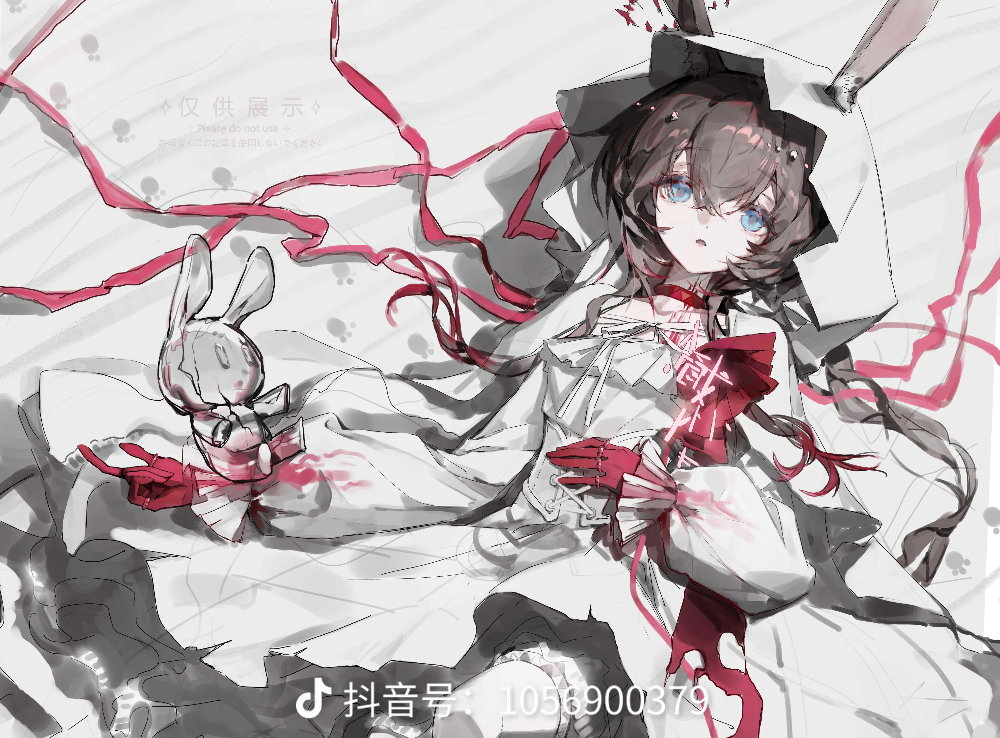
picture_ssr7_053 · SSR → SSR · 6.442
【奇美拉·意志共鸣·红线残响】主要阶段，同名此效果每回合1次：将自己除外区最后1张卡加入手牌。 【余响·寻找】主要阶段，同名此效果每回合1次：展示卡组顶2张卡，将其中1张怪兽加入手牌，其余按原顺序放回卡组底。
【奇美拉·意志共鸣·红线残响】主要阶段，同名此效果每回合1次：将自己除外区最后1张卡加入手牌。 【余响·寻找】主要阶段，同名此效果每回合1次：展示卡组顶2张卡，将其中1张怪兽加入手牌，其余按原顺序放回卡组底。
picture_ssr7_054 · SSR → SSR · 6.838
【未来音浪·水镜】通常召唤成功时，同名此效果每回合1次：支付600LP；将对方一只可取对象表侧怪兽变为里侧守备表示，其守备力下降100。 【余响·构思】主要阶段，同名此效果每回合1次：展示卡组顶2张卡，将其中1张魔法加入手牌，其余按原顺序放回卡组底。
【未来音浪·水镜】通常召唤成功时，同名此效果每回合1次：支付600LP；将对方一只可取对象表侧怪兽变为里侧守备表示，其守备力下降100。 【余响·构思】主要阶段，同名此效果每回合1次：展示卡组顶2张卡，将其中1张魔法加入手牌，其余按原顺序放回卡组底。
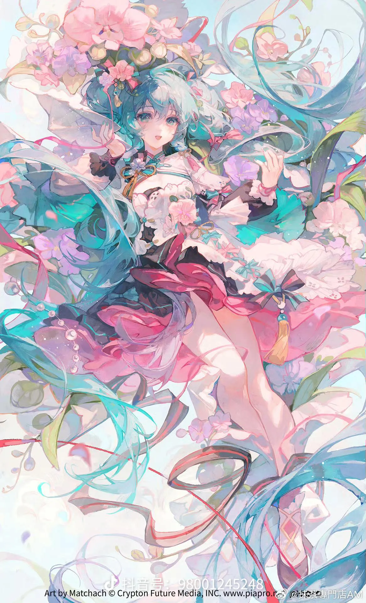
picture_ssr7_055 · SSR → SSR · 6.667
【未来音浪·花海共鸣】自己的结束阶段，同名此效果每回合1次：自己场上有至少2种属性的表侧怪兽时，抽2张卡，并恢复650LP。 【余响·蓄势】主要阶段，同名此效果每回合1次：自身获得1个蓄力指示物（最多3个），攻击力上升150；移除指示物时失去对应的提升。
【未来音浪·花海共鸣】自己的结束阶段，同名此效果每回合1次：自己场上有至少2种属性的表侧怪兽时，抽2张卡，并恢复650LP。 【余响·蓄势】主要阶段，同名此效果每回合1次：自身获得1个蓄力指示物（最多3个），攻击力上升150；移除指示物时失去对应的提升。
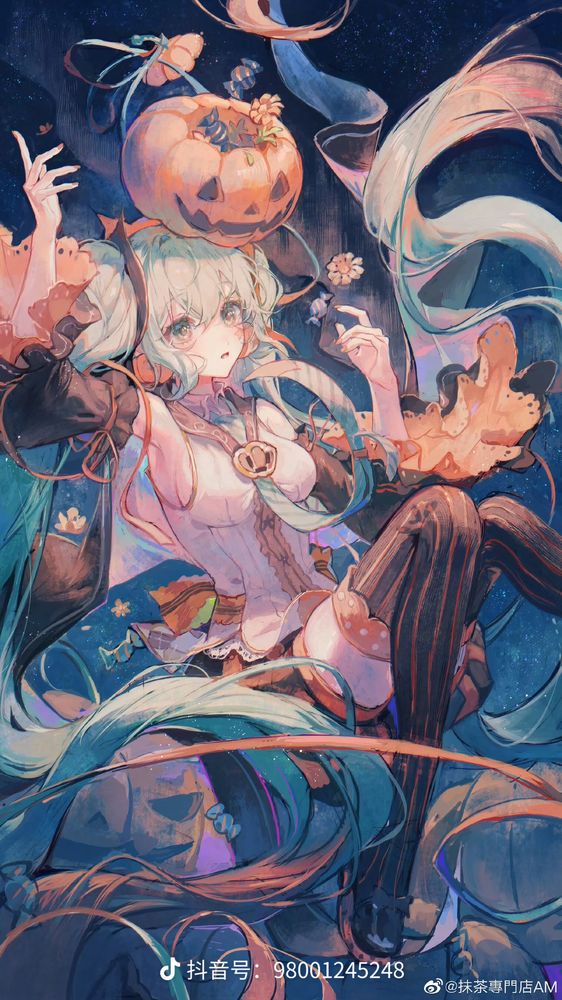
picture_ssr7_056 · SSR → SSR · 6.582
【未来音浪·南瓜夜曲】通常召唤成功时，同名此效果每回合1次：展示卡组顶4张卡，并按怪兽、魔法、陷阱的顺序重新排列在卡组顶。 【余响·守护】主要阶段，同名此效果每回合1次：自身直到下个回合结束不能成为效果对象，其守备力上升300。
【未来音浪·南瓜夜曲】通常召唤成功时，同名此效果每回合1次：展示卡组顶4张卡，并按怪兽、魔法、陷阱的顺序重新排列在卡组顶。 【余响·守护】主要阶段，同名此效果每回合1次：自身直到下个回合结束不能成为效果对象，其守备力上升300。
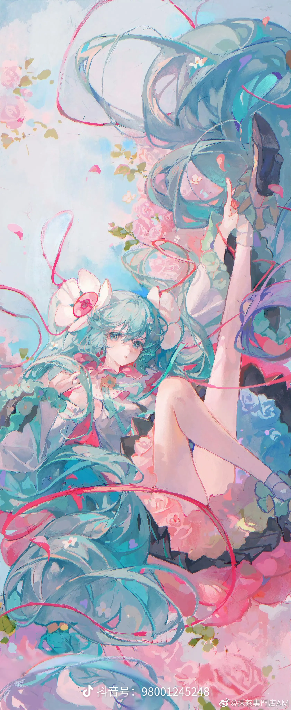
picture_ssr7_057 · SSR → SR · 5.778
【未来音浪·春日花冠】通常召唤成功时，同名此效果每回合1次：将自己墓地最后1只4星以下怪兽加入手牌，然后抽1张卡。 【余响·寻找】主要阶段，同名此效果每回合1次：展示卡组顶2张卡，将其中1张怪兽加入手牌，其余按原顺序放回卡组底。
【未来音浪·春日花冠】通常召唤成功时，同名此效果每回合1次：将自己墓地最后1只4星以下怪兽加入手牌，然后抽1张卡。
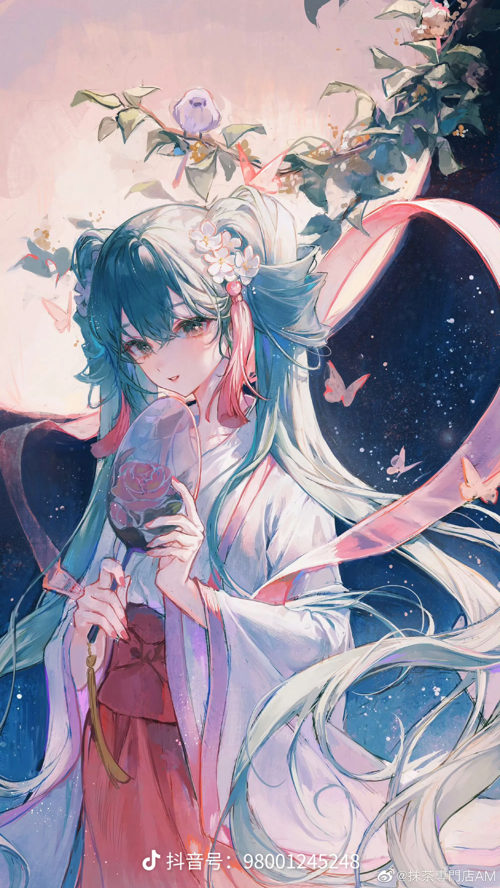
picture_ssr7_058 · SSR → SSR · 6.942
【未来音浪·星月花嫁】通常召唤成功时，同名此效果每回合1次：展示卡组顶2张卡，将其中1张怪兽加入手牌，其余按原顺序放回卡组底。 【余响·构思】主要阶段，同名此效果每回合1次：展示卡组顶2张卡，将其中1张魔法加入手牌，其余按原顺序放回卡组底。
【未来音浪·星月花嫁】通常召唤成功时，同名此效果每回合1次：展示卡组顶2张卡，将其中1张怪兽加入手牌，其余按原顺序放回卡组底。 【余响·构思】主要阶段，同名此效果每回合1次：展示卡组顶2张卡，将其中1张魔法加入手牌，其余按原顺序放回卡组底。
picture_ssr7_059 · SSR → SR · 5.784
【奇美拉·意志共鸣·苍银天穹】通常召唤成功时，同名此效果每回合1次：自身直到下个回合结束不能成为效果对象，其守备力上升100。 【余响·蓄势】主要阶段，同名此效果每回合1次：自身获得1个蓄力指示物（最多3个），攻击力上升150；移除指示物时失去对应的提升。
【奇美拉·意志共鸣·苍银天穹】通常召唤成功时，同名此效果每回合1次：自身直到下个回合结束不能成为效果对象，其守备力上升100。
picture_ex_011 · SSR → SR · 5.735
【白金之星·世界】主要阶段，同名此效果每回合1次：支付1000LP，展开领域「白金之星·世界」：直到对方回合结束，对方全部怪兽不能攻击。 【余响·蓄势】主要阶段，同名此效果每回合1次：自身获得1个蓄力指示物（最多3个），攻击力上升150；移除指示物时失去对应的提升。
【白金之星·世界】主要阶段，同名此效果每回合1次：支付1000LP，展开领域「白金之星·世界」：直到对方回合结束，对方全部怪兽不能攻击。
picture_ex_012 · SSR → SR · 5.722
【第一炸弹】主要阶段，同名此效果每回合1次：给对方一只可取对象表侧怪兽放置1层灼烧，然后立即引爆其身上全部灼烧层数：每层使其控制者受到800点伤害；若其带有剧毒，同时引爆剧毒：每层给对方全体表侧怪兽的守备力下降300，守备力变为0的破坏。 【余响·构思】主要阶段，同名此效果每回合1次：展示卡组顶2张卡，将其中1张魔法加入手牌，其余按原顺序放回卡组底。
【第一炸弹】主要阶段，同名此效果每回合1次：给对方一只可取对象表侧怪兽放置1层灼烧，然后立即引爆其身上全部灼烧层数：每层使其控制者受到800点伤害；若其带有剧毒，同时引爆剧毒：每层给对方全体表侧怪兽的守备力下降300，守备力变为0的破坏。
picture_ex_013 · SSR → SR · 5.834
【世界·时停突袭·THE WORLD】主要阶段，同名此效果每回合1次：对方全部表侧怪兽麻痹：直到下个回合结束不能攻击或改变表示形式。 【余响·寻找】主要阶段，同名此效果每回合1次：展示卡组顶2张卡，将其中1张怪兽加入手牌，其余按原顺序放回卡组底。
【世界·时停突袭·THE WORLD】主要阶段，同名此效果每回合1次：将对方一只可取对象表侧怪兽麻痹：直到下个回合结束不能攻击或改变表示形式。
picture_ex_014 · SSR → SR · 5.917
【性感手枪·弹道折射】主要阶段，同名此效果每回合1次：给对方一只可取对象表侧怪兽放置3层出血；出血怪兽每次参与战斗后，其控制者受到300×层数伤害，随后层数-1。 【余响·守护】主要阶段，同名此效果每回合1次：自身直到下个回合结束不能成为效果对象，其守备力上升300。
【性感手枪·弹道折射】主要阶段，同名此效果每回合1次：给对方一只可取对象表侧怪兽放置3层出血；出血怪兽每次参与战斗后，其控制者受到300×层数伤害，随后层数-1。
picture_ex_015 · SSR → SSR · 6.986
【钢铁蔷薇】通常召唤成功时，同名此效果每回合1次：自身直到下个回合结束不能成为效果对象，其守备力上升200。 【余响·蓄势】主要阶段，同名此效果每回合1次：自身获得1个蓄力指示物（最多3个），攻击力上升150；移除指示物时失去对应的提升。
【钢铁蔷薇】通常召唤成功时，同名此效果每回合1次：自身直到下个回合结束不能成为效果对象，其守备力上升200。 【余响·蓄势】主要阶段，同名此效果每回合1次：自身获得1个蓄力指示物（最多3个），攻击力上升150；移除指示物时失去对应的提升。
picture_ex_016 · SSR → SSR · 6.728
【奶油启动器】主要阶段，同名此效果每回合1次：将自己墓地最后1张卡除外；恢复1350LP。 【余响·构思】主要阶段，同名此效果每回合1次：展示卡组顶2张卡，将其中1张魔法加入手牌，其余按原顺序放回卡组底。
【奶油启动器】主要阶段，同名此效果每回合1次：将自己墓地最后1张卡除外；恢复1350LP。 【余响·构思】主要阶段，同名此效果每回合1次：展示卡组顶2张卡，将其中1张魔法加入手牌，其余按原顺序放回卡组底。
picture_ex_017 · SSR → SSR · 6.145
【恐龙化】通常召唤成功时，同名此效果每回合1次：特殊召唤1只550攻900守、1星的守备衍生物，不能作为上级召唤的祭品。 【余响·寻找】主要阶段，同名此效果每回合1次：展示卡组顶2张卡，将其中1张怪兽加入手牌，其余按原顺序放回卡组底。
【恐龙化】通常召唤成功时，同名此效果每回合1次：特殊召唤1只550攻900守、1星的守备衍生物，不能作为上级召唤的祭品。 【余响·寻找】主要阶段，同名此效果每回合1次：展示卡组顶2张卡，将其中1张怪兽加入手牌，其余按原顺序放回卡组底。
picture_ex_018 · SSR → SSR · 6.111
【D4C·爱之列车】主要阶段，同名此效果每回合1次：将对方一只可取对象表侧怪兽送入异界区；2个结束阶段后回到场上（守备表示、攻击力下降500、效果封印1回合）。 【余响·守护】主要阶段，同名此效果每回合1次：自身直到下个回合结束不能成为效果对象，其守备力上升300。
【D4C·爱之列车】主要阶段，同名此效果每回合1次：将对方一只可取对象表侧怪兽送入异界区；2个结束阶段后回到场上（守备表示、攻击力下降500、效果封印1回合）。 【余响·守护】主要阶段，同名此效果每回合1次：自身直到下个回合结束不能成为效果对象，其守备力上升300。
picture_ex_019 · SR → SSR · 6.115
【火之神神乐】主要阶段，同名此效果每回合1次：自身本回合获得贯穿守备的战斗伤害，其攻击力上升300。
【火之神神乐】主要阶段，同名此效果每回合1次：自身本回合获得贯穿守备的战斗伤害，其攻击力上升350。 【余响·蓄势】主要阶段，同名此效果每回合1次：自身获得1个蓄力指示物（最多3个），攻击力上升150；移除指示物时失去对应的提升。
picture_ex_020 · SR → SR · 5.626
【蛇之呼吸·委蛇斩】主要阶段，同名此效果每回合1次：给对方一只可取对象表侧怪兽放置2层出血；出血怪兽每次参与战斗后，其控制者受到400×层数伤害，随后层数-1。
【蛇之呼吸·委蛇斩】主要阶段，同名此效果每回合1次：给对方一只可取对象表侧怪兽放置2层出血；出血怪兽每次参与战斗后，其控制者受到400×层数伤害，随后层数-1。
picture_ex_021 · SR → SSR · 6.557
【一闪蓄势】自己的主要阶段，同名此效果每回合1次：自身尚未攻击时：没有蓄力则获得1个蓄力指示物并放弃本回合攻击；已有蓄力则移除1个并支付400LP，本回合可攻击2次。
【一闪蓄势】自己的主要阶段，同名此效果每回合1次：自身尚未攻击时：没有蓄力则获得1个蓄力指示物并放弃本回合攻击；已有蓄力则移除1个并支付400LP，本回合可攻击2次。
picture_ex_022 · SR → SR · 5.644
【恋之呼吸·初恋战栗】通常召唤成功时，同名此效果每回合1次：自己一只表侧怪兽获得1次破坏替代：将其改为守备表示，直到下个回合结束有效，其攻击力上升300。
【恋之呼吸·初恋战栗】通常召唤成功时，同名此效果每回合1次：自己一只表侧怪兽获得1次破坏替代：将其改为守备表示，直到下个回合结束有效，其攻击力上升350。
picture_ex_023 · SR → SSR · 6.060
【岩之呼吸·巨岩贯穿】通常召唤成功时，同名此效果每回合1次：自己一只表侧怪兽获得1次破坏替代：将其改为守备表示，直到下个回合结束有效，其攻击力上升400。
【岩之呼吸·巨岩贯穿】通常召唤成功时，同名此效果每回合1次：自己一只表侧怪兽获得1次破坏替代：将其改为守备表示，直到下个回合结束有效，其攻击力上升450。 【余响·构思】主要阶段，同名此效果每回合1次：展示卡组顶2张卡，将其中1张魔法加入手牌，其余按原顺序放回卡组底。
picture_ex_024 · SR → SSR · 6.527
【虫之呼吸·毒刃·蝶之舞】通常召唤成功时，同名此效果每回合1次：支付500LP；给对方一只可取对象表侧怪兽放置毒印；本回合结束时，其控制者受到400伤害，并移除毒印。
【虫之呼吸·毒刃·蝶之舞】通常召唤成功时，同名此效果每回合1次：支付600LP；给对方一只可取对象表侧怪兽放置毒印；本回合结束时，其控制者受到450伤害，并移除毒印。 【余响·蓄势】主要阶段，同名此效果每回合1次：自身获得1个蓄力指示物（最多3个），攻击力上升150；移除指示物时失去对应的提升。
picture_ex_025 · SR → SSR · 6.498
【水之呼吸·水车】主要阶段，同名此效果每回合1次：将对方一只可取对象表侧怪兽变为守备表示，直到下个回合结束不能攻击或手动改变表示形式，其攻击力下降200。
【水之呼吸·水车】主要阶段，同名此效果每回合1次：将对方一只可取对象表侧怪兽变为守备表示，直到下个回合结束不能攻击或手动改变表示形式，其攻击力下降200。 【余响·守护】主要阶段，同名此效果每回合1次：自身直到下个回合结束不能成为效果对象，其守备力上升300。
picture_ex_026 · SR → SR · 5.731
【风之呼吸·黑风烟岚·旋风斩】主要阶段，同名此效果每回合1次：自身本回合获得贯穿守备的战斗伤害，其攻击力上升400。
【风之呼吸·黑风烟岚·旋风斩】主要阶段，同名此效果每回合1次：自身本回合获得贯穿守备的战斗伤害，其攻击力上升400。
picture_ex_027 · SR → SSR · 6.073
【爆血引燃】自己的主要阶段，同名此效果每回合1次：移除对方一只可取对象表侧怪兽的全部灼烧；每层给予其控制者600伤害。不添加新灼烧，目标没有灼烧时不能发动。
【爆血引燃】自己的主要阶段，同名此效果每回合1次：移除对方一只可取对象表侧怪兽的全部灼烧；每层给予其控制者600伤害。不添加新灼烧，目标没有灼烧时不能发动。
picture_ex_028 · SR → SSR · 6.229
【霞之呼吸·八重霞】主要阶段，同名此效果每回合1次：将对方一只可取对象表侧怪兽变为里侧守备表示，其守备力下降200。
【霞之呼吸·八重霞】主要阶段，同名此效果每回合1次：将对方一只可取对象表侧怪兽变为里侧守备表示，其守备力下降200。 【余响·蓄势】主要阶段，同名此效果每回合1次：自身获得1个蓄力指示物（最多3个），攻击力上升150；移除指示物时失去对应的提升。
picture_ex_029 · SR → SSR · 6.010
【兽之呼吸·乱裂】主要阶段，同名此效果每回合1次：支付400LP；自身本回合可以攻击2次。
【兽之呼吸·乱裂】主要阶段，同名此效果每回合1次：支付700LP；自身本回合可以攻击2次。 【余响·守护】主要阶段，同名此效果每回合1次：自身直到下个回合结束不能成为效果对象，其守备力上升300。
picture_ex_030 · SR → SSR · 6.563
【炎之点燃】自己的主要阶段，同名此效果每回合1次：支付400LP；给对方一只可取对象表侧怪兽放置2层灼烧；其控制者每个结束阶段受到250×层数伤害，随后层数-1（上限3层）。
【炎之点燃】自己的主要阶段，同名此效果每回合1次：支付400LP；给对方一只可取对象表侧怪兽放置2层灼烧；其控制者每个结束阶段受到250×层数伤害，随后层数-1（上限3层）。
picture_ex_031 · SR → SSR · 6.616
【风之呼吸·尘旋风】主要阶段，同名此效果每回合1次：自身本回合获得贯穿守备的战斗伤害，其攻击力上升500。
【风之呼吸·尘旋风】主要阶段，同名此效果每回合1次：自身本回合获得贯穿守备的战斗伤害，其攻击力上升550。 【余响·寻找】主要阶段，同名此效果每回合1次：展示卡组顶2张卡，将其中1张怪兽加入手牌，其余按原顺序放回卡组底。
picture_ex_032 · SR → SR · 5.873
【音律蓄势】自己的主要阶段，同名此效果每回合1次：自身获得1个蓄力指示物（最多3个），攻击力上升250；移除指示物时失去对应的提升。
【音律蓄势】自己的主要阶段，同名此效果每回合1次：自身获得1个蓄力指示物（最多3个），攻击力上升250；移除指示物时失去对应的提升。
picture_ex_033 · SR → SSR · 6.420
【水之呼吸·水刃·水柱】通常召唤成功时，同名此效果每回合1次：自己一只表侧怪兽获得1次破坏替代：将其改为守备表示，直到下个回合结束有效，其攻击力上升500。
【水之呼吸·水刃·水柱】通常召唤成功时，同名此效果每回合1次：自己一只表侧怪兽获得1次破坏替代：将其改为守备表示，直到下个回合结束有效，其攻击力上升550。 【余响·蓄势】主要阶段，同名此效果每回合1次：自身获得1个蓄力指示物（最多3个），攻击力上升150；移除指示物时失去对应的提升。
picture_ex_034 · SR → SSR · 6.186
【蛇之呼吸·蜿蜒蛇行·蛇柱】主要阶段，同名此效果每回合1次：给对方一只可取对象表侧怪兽放置毒印；本回合结束时，其控制者受到850伤害，并移除毒印。
【蛇之呼吸·蜿蜒蛇行·蛇柱】主要阶段，同名此效果每回合1次：给对方一只可取对象表侧怪兽放置毒印；本回合结束时，其控制者受到900伤害，并移除毒印。 【余响·构思】主要阶段，同名此效果每回合1次：展示卡组顶2张卡，将其中1张魔法加入手牌，其余按原顺序放回卡组底。
picture_ex_035 · SR → SSR · 6.058
【炎之呼吸·炼狱·炎柱】通常召唤成功时，同名此效果每回合1次：自己一只表侧怪兽获得1次破坏替代：将其改为守备表示，直到下个回合结束有效，其攻击力上升600。
【炎之呼吸·炼狱·炎柱】通常召唤成功时，同名此效果每回合1次：自己一只表侧怪兽获得1次破坏替代：将其改为守备表示，直到下个回合结束有效，其攻击力上升650。 【余响·寻找】主要阶段，同名此效果每回合1次：展示卡组顶2张卡，将其中1张怪兽加入手牌，其余按原顺序放回卡组底。
picture_ex_036 · SR → SSR · 6.286
【霞之呼吸·胧·月下霞】通常召唤成功时，同名此效果每回合1次：支付500LP；将对方一只可取对象表侧怪兽变为里侧守备表示，其守备力下降300。
【霞之呼吸·胧·月下霞】通常召唤成功时，同名此效果每回合1次：支付600LP；将对方一只可取对象表侧怪兽变为里侧守备表示，其守备力下降350。 【余响·守护】主要阶段，同名此效果每回合1次：自身直到下个回合结束不能成为效果对象，其守备力上升300。
picture_ex_037 · SR → SSR · 6.634
【紫藤毒刺】自己的主要阶段，同名此效果每回合1次：支付400LP；给对方一只可取对象表侧怪兽放置1层剧毒（上限3层）；剧毒怪兽的控制者每个结束阶段受到250×层数伤害，且其所有回复减半；剧毒不会自然消失。
【紫藤毒刺】自己的主要阶段，同名此效果每回合1次：支付400LP；给对方一只可取对象表侧怪兽放置1层剧毒（上限3层）；剧毒怪兽的控制者每个结束阶段受到250×层数伤害，且其所有回复减半；剧毒不会自然消失。
picture_ex_038 · SR → SSR · 6.152
【恋之呼吸·猫足恋风·恋柱】通常召唤成功时，同名此效果每回合1次：将自己墓地最后2只4星以下怪兽加入手牌，然后抽1张卡。
【恋之呼吸·猫足恋风·恋柱】通常召唤成功时，同名此效果每回合1次：将自己墓地最后2只4星以下怪兽加入手牌，然后抽1张卡。 【余响·守护】主要阶段，同名此效果每回合1次：自身直到下个回合结束不能成为效果对象，其守备力上升300。
picture_ex_039 · SR → SR · 5.556
【音之呼吸·谱面斩·谱面完成】主要阶段，同名此效果每回合1次：随机展示对方1张手牌；若对方手牌不足则全部展示。
【音之呼吸·谱面斩·谱面完成】主要阶段，同名此效果每回合1次：随机展示对方1张手牌；若对方手牌不足则全部展示。
picture_ex_040 · SR → SSR · 6.454
【风之呼吸·黑风烟岚·稀血】主要阶段，同名此效果每回合1次：将自己墓地最后1张卡除外；恢复1400LP。
【风之呼吸·黑风烟岚·稀血】主要阶段，同名此效果每回合1次：将自己墓地最后1张卡除外；恢复1550LP。 【余响·寻找】主要阶段，同名此效果每回合1次：展示卡组顶2张卡，将其中1张怪兽加入手牌，其余按原顺序放回卡组底。
picture_ex_041 · SR → SSR · 6.022
【岩之呼吸·巨岩贯穿·南无阿弥陀佛】通常召唤成功时，同名此效果每回合1次：将对方墓地最后2张卡除外，并清除己方场上怪兽的全部异常状态。
【岩之呼吸·巨岩贯穿·南无阿弥陀佛】通常召唤成功时，同名此效果每回合1次：将对方墓地最后3张卡除外，并清除己方场上怪兽的全部异常状态。 【余响·构思】主要阶段，同名此效果每回合1次：展示卡组顶2张卡，将其中1张魔法加入手牌，其余按原顺序放回卡组底。
picture_ex_042 · SR → SSR · 6.496
【破坏杀·灭式】主要阶段，同名此效果每回合1次：自身获得1个蓄力指示物（最多3个），攻击力上升150；移除指示物时失去对应的提升。
【破坏杀·灭式】主要阶段，同名此效果每回合1次：自身获得1个蓄力指示物（最多3个），攻击力上升400；移除指示物时失去对应的提升。 【余响·蓄势】主要阶段，同名此效果每回合1次：自身获得1个蓄力指示物（最多3个），攻击力上升150；移除指示物时失去对应的提升。
picture_ex_043 · SR → R · 4.901
【水之呼吸·水刃·水面斩】主要阶段，同名此效果每回合1次：自身本回合获得贯穿守备的战斗伤害，其攻击力上升600。
【水之呼吸·水刃·水面斩】主要阶段，同名此效果每回合1次：自身本回合获得贯穿守备的战斗伤害，其攻击力上升650。
picture_ex_044 · SR → SSR · 6.462
【日之呼吸·十三之型】主要阶段，同名此效果每回合1次：对方一只可取对象表侧怪兽效果无效，直到本回合结束。
【日之呼吸·十三之型】主要阶段，同名此效果每回合1次：对方一只可取对象表侧怪兽效果无效，直到本回合结束。 【余响·寻找】主要阶段，同名此效果每回合1次：展示卡组顶2张卡，将其中1张怪兽加入手牌，其余按原顺序放回卡组底。
picture_ex_045 · SR → SR · 5.512
【恋之呼吸·猫足恋风】通常召唤成功时，同名此效果每回合1次：展示卡组顶3张卡，将其中1张怪兽加入手牌，其余按原顺序放回卡组底。
【恋之呼吸·猫足恋风】通常召唤成功时，同名此效果每回合1次：展示卡组顶3张卡，将其中1张怪兽加入手牌，其余按原顺序放回卡组底。
picture_ex_046 · SR → SSR · 6.566
【虫之呼吸·毒刃·蜈蚣之舞】通常召唤成功时，同名此效果每回合1次：支付500LP；给对方一只可取对象表侧怪兽放置毒印；本回合结束时，其控制者受到450伤害，并移除毒印。
【虫之呼吸·毒刃·蜈蚣之舞】通常召唤成功时，同名此效果每回合1次：支付600LP；给对方一只可取对象表侧怪兽放置毒印；本回合结束时，其控制者受到500伤害，并移除毒印。 【余响·蓄势】主要阶段，同名此效果每回合1次：自身获得1个蓄力指示物（最多3个），攻击力上升150；移除指示物时失去对应的提升。
picture_ex_047 · SR → SSR · 6.575
【音之呼吸·谱面斩·双刀爆裂】主要阶段，同名此效果每回合1次：支付800LP；自身本回合可以攻击2次。
【音之呼吸·谱面斩·双刀爆裂】主要阶段，同名此效果每回合1次：支付400LP；自身本回合可以攻击2次。 【余响·守护】主要阶段，同名此效果每回合1次：自身直到下个回合结束不能成为效果对象，其守备力上升300。
picture_ex_048 · SR → SSR · 6.636
【霹雳一闪·火雷神】主要阶段，同名此效果每回合1次：抛硬币：正面则麻痹对方一只可取对象表侧怪兽（直到下个回合结束不能攻击或改变表示形式）；反面则其攻击力下降600直到回合结束。
【霹雳一闪·火雷神】主要阶段，同名此效果每回合1次：抛硬币：正面则麻痹对方一只可取对象表侧怪兽（直到下个回合结束不能攻击或改变表示形式）；反面则其攻击力下降600直到回合结束。 【余响·寻找】主要阶段，同名此效果每回合1次：展示卡组顶2张卡，将其中1张怪兽加入手牌，其余按原顺序放回卡组底。
picture_ex_049 · SR → SSR · 6.199
【霞之呼吸·胧】通常召唤成功时，同名此效果每回合1次：自身直到下个回合结束不能成为效果对象，其守备力上升300。
【霞之呼吸·胧】通常召唤成功时，同名此效果每回合1次：自身直到下个回合结束不能成为效果对象，其守备力上升350。 【余响·守护】主要阶段，同名此效果每回合1次：自身直到下个回合结束不能成为效果对象，其守备力上升300。
picture_ex_050 · SR → SSR · 6.639
【炎之呼吸·炼狱·奥义玖之型】通常召唤成功时，同名此效果每回合1次：自身本回合获得贯穿守备的战斗伤害，其攻击力上升700。
【炎之呼吸·炼狱·奥义玖之型】通常召唤成功时，同名此效果每回合1次：自身本回合获得贯穿守备的战斗伤害，其攻击力上升800。 【余响·构思】主要阶段，同名此效果每回合1次：展示卡组顶2张卡，将其中1张魔法加入手牌，其余按原顺序放回卡组底。
picture_ex_051 · SR → SSR · 6.694
【兽之呼吸·空间感知】通常召唤成功时，同名此效果每回合1次：随机展示对方2张手牌；若对方手牌不足则全部展示。
【兽之呼吸·空间感知】通常召唤成功时，同名此效果每回合1次：随机展示对方2张手牌；若对方手牌不足则全部展示。 【余响·蓄势】主要阶段，同名此效果每回合1次：自身获得1个蓄力指示物（最多3个），攻击力上升150；移除指示物时失去对应的提升。
picture_ex_052 · SR → SSR · 6.770
【岩之呼吸·巨岩贯穿·岩躯】通常召唤成功时，同名此效果每回合1次：自己一只表侧怪兽获得1次破坏替代：将其改为守备表示，直到下个回合结束有效，其攻击力上升700。
【岩之呼吸·巨岩贯穿·岩躯】通常召唤成功时，同名此效果每回合1次：自己一只表侧怪兽获得1次破坏替代：将其改为守备表示，直到下个回合结束有效，其攻击力上升800。 【余响·守护】主要阶段，同名此效果每回合1次：自身直到下个回合结束不能成为效果对象，其守备力上升300。
picture_ex_053 · SR → SR · 5.543
【蛇之呼吸·蜿蜒蛇行·月夜蛇行】通常召唤成功时，同名此效果每回合1次：支付500LP；将对方一只可取对象表侧怪兽变为里侧守备表示，其守备力下降400。
【蛇之呼吸·蜿蜒蛇行·月夜蛇行】通常召唤成功时，同名此效果每回合1次：支付500LP；将对方一只可取对象表侧怪兽变为里侧守备表示，其守备力下降400。
picture_ex_054 · SR → SSR · 6.404
【炎之呼吸·炼狱·炎心】通常召唤成功时，同名此效果每回合1次：自身获得1个蓄力指示物（最多3个），攻击力上升400；移除指示物时失去对应的提升。
【炎之呼吸·炼狱·炎心】通常召唤成功时，同名此效果每回合1次：自身获得1个蓄力指示物（最多3个），攻击力上升500；移除指示物时失去对应的提升。 【余响·构思】主要阶段，同名此效果每回合1次：展示卡组顶2张卡，将其中1张魔法加入手牌，其余按原顺序放回卡组底。
picture_ex_055 · SR → SSR · 6.228
【血鬼术·寒烈白姬·寒夜莲华】通常召唤成功时，同名此效果每回合1次：支付500LP；将对方一只可取对象表侧怪兽变为守备表示，直到下个回合结束不能攻击或手动改变表示形式，其攻击力下降300。
【血鬼术·寒烈白姬·寒夜莲华】通常召唤成功时，同名此效果每回合1次：支付600LP；将对方一只可取对象表侧怪兽变为守备表示，直到下个回合结束不能攻击或手动改变表示形式，其攻击力下降350。 【余响·蓄势】主要阶段，同名此效果每回合1次：自身获得1个蓄力指示物（最多3个），攻击力上升150；移除指示物时失去对应的提升。
picture_ex_056 · SR → SR · 5.844
【破坏杀·罗针】主要阶段，同名此效果每回合1次：支付800LP，展开领域「破坏杀·罗针」：直到对方回合结束，自己受到的战斗伤害减半，另一半反弹给攻击者。
【破坏杀·罗针】主要阶段，同名此效果每回合1次：支付800LP，展开领域「破坏杀·罗针」：直到对方回合结束，自己受到的战斗伤害减半，另一半反弹给攻击者。
picture_ex_057 · SR → SSR · 6.135
【虫之呼吸·毒刃·蝶影毒刃】通常召唤成功时，同名此效果每回合1次：支付500LP；给对方一只可取对象表侧怪兽放置毒印；本回合结束时，其控制者受到600伤害，并移除毒印。
【虫之呼吸·毒刃·蝶影毒刃】通常召唤成功时，同名此效果每回合1次：支付600LP；给对方一只可取对象表侧怪兽放置毒印；本回合结束时，其控制者受到600伤害，并移除毒印。 【余响·寻找】主要阶段，同名此效果每回合1次：展示卡组顶2张卡，将其中1张怪兽加入手牌，其余按原顺序放回卡组底。
picture_ex_058 · SR → SR · 5.637
【风之呼吸·黑风烟岚】通常召唤成功时，同名此效果每回合1次：将卡组顶2张卡送入墓地。
【风之呼吸·黑风烟岚】通常召唤成功时，同名此效果每回合1次：将卡组顶2张卡送入墓地。
picture_ex_059 · SR → SR · 5.648
【兽之呼吸·乱裂·兽牙乱舞】主要阶段，同名此效果每回合1次：支付450LP；自身本回合可以攻击2次。
【兽之呼吸·乱裂·兽牙乱舞】主要阶段，同名此效果每回合1次：支付800LP；自身本回合可以攻击2次。
picture_ex_060 · SR → SR · 5.463
【火之神神乐·水火轮转】主要阶段，同名此效果每回合1次：给对方一只可取对象表侧怪兽放置2层灼烧，然后立即引爆其身上全部灼烧层数：每层使其控制者受到700点伤害；若其带有剧毒，同时引爆剧毒：每层给对方全体表侧怪兽的守备力下降300，守备力变为0的破坏。
【火之神神乐·水火轮转】主要阶段，同名此效果每回合1次：给对方一只可取对象表侧怪兽放置2层灼烧，然后立即引爆其身上全部灼烧层数：每层使其控制者受到650点伤害；若其带有剧毒，同时引爆剧毒：每层给对方全体表侧怪兽的守备力下降300，守备力变为0的破坏。
picture_ex_061 · SR → SR · 5.802
【岩之呼吸·巨岩贯穿·石肤】通常召唤成功时，同名此效果每回合1次：自身直到下个回合结束不能成为效果对象，其守备力上升400。
【岩之呼吸·巨岩贯穿·石肤】通常召唤成功时，同名此效果每回合1次：自身直到下个回合结束不能成为效果对象，其守备力上升400。
picture_ex_062 · SR → SR · 5.494
【水之呼吸·生生流转】主要阶段，同名此效果每回合1次：将自己墓地最后3张卡按原顺序放回卡组底，抽2张卡。
【水之呼吸·生生流转】主要阶段，同名此效果每回合1次：将自己墓地最后3张卡按原顺序放回卡组底，抽2张卡。
picture_ex_063 · SR → SR · 5.632
【炎之呼吸·炼狱】通常召唤成功时，同名此效果每回合1次：自身获得1个蓄力指示物（最多3个），攻击力上升450；移除指示物时失去对应的提升。
【炎之呼吸·炼狱】通常召唤成功时，同名此效果每回合1次：自身获得1个蓄力指示物（最多3个），攻击力上升650；移除指示物时失去对应的提升。
picture_ex_064 · SR → SSR · 6.075
【恋之呼吸·猫足恋风·摇曳恋情】通常召唤成功时，同名此效果每回合1次：将自己墓地最后1只3星以下怪兽加入手牌。
【恋之呼吸·猫足恋风·摇曳恋情】通常召唤成功时，同名此效果每回合1次：将自己墓地最后1只3星以下怪兽加入手牌。 【余响·蓄势】主要阶段，同名此效果每回合1次：自身获得1个蓄力指示物（最多3个），攻击力上升150；移除指示物时失去对应的提升。
picture_ex_065 · SR → SR · 5.421
【赤月神乐】被破坏送入墓地时，同名此效果每回合1次：自己被破坏送入墓地后，将卡组第一只与自身同属性的4星以下怪兽加入手牌。
【赤月神乐】被破坏送入墓地时，同名此效果每回合1次：自己被破坏送入墓地后，将卡组第一只与自身同属性的4星以下怪兽加入手牌。
picture_ex_066 · SR → SR · 5.646
【霞之呼吸·胧·水月霞】通常召唤成功时，同名此效果每回合1次：支付500LP；将对方一只可取对象表侧怪兽变为里侧守备表示，其守备力下降500。
【霞之呼吸·胧·水月霞】通常召唤成功时，同名此效果每回合1次：支付500LP；将对方一只可取对象表侧怪兽变为里侧守备表示，其守备力下降500。
picture_ex_067 · SR → SR · 5.321
【音之呼吸·谱面斩·爆音斩】主要阶段，同名此效果每回合1次：给对方一只可取对象表侧怪兽放置爆破标记；本回合结束时给予其控制者100伤害并破坏该怪兽，提前离场则标记失效。
【音之呼吸·谱面斩·爆音斩】主要阶段，同名此效果每回合1次：给对方一只可取对象表侧怪兽放置爆破标记；本回合结束时给予其控制者100伤害并破坏该怪兽，提前离场则标记失效。
picture_ex_068 · SR → SR · 5.023
【月之呼吸·月虹】主要阶段，同名此效果每回合1次：自身本回合获得贯穿守备的战斗伤害，其攻击力上升800。
【月之呼吸·月虹】主要阶段，同名此效果每回合1次：自身本回合获得贯穿守备的战斗伤害，其攻击力上升850。
picture_ex_069 · SR → SSR · 6.096
【蛇之呼吸·蜿蜒蛇行】通常召唤成功时，同名此效果每回合1次：支付500LP；对方一只可取对象表侧怪兽效果无效，直到本回合结束，其攻击力下降100。
【蛇之呼吸·蜿蜒蛇行】通常召唤成功时，同名此效果每回合1次：支付600LP；对方一只可取对象表侧怪兽效果无效，直到本回合结束，其攻击力下降100。 【余响·构思】主要阶段，同名此效果每回合1次：展示卡组顶2张卡，将其中1张魔法加入手牌，其余按原顺序放回卡组底。
picture_ex_070 · SR → SR · 5.187
【霹雳一闪·雷霆万钧】主要阶段，同名此效果每回合1次：自身获得1个蓄力指示物（最多3个），攻击力上升500；移除指示物时失去对应的提升。
【霹雳一闪·雷霆万钧】主要阶段，同名此效果每回合1次：自身获得1个蓄力指示物（最多3个），攻击力上升450；移除指示物时失去对应的提升。
picture_ex_071 · N → SR · 5.426
【矿洞小鼠·传承】被破坏送入墓地时，同名此效果每回合1次：自己被破坏送入墓地后，将卡组第一只与自身同属性的3星以下怪兽加入手牌。
【矿洞小鼠·传承】被破坏送入墓地时，同名此效果每回合1次：自己被破坏送入墓地后，将卡组第一只与自身同属性的3星以下怪兽加入手牌。
picture_ex_072 · SR → SR · 5.364
【死亡回归】被破坏送入墓地时，同名此效果每回合1次：支付800LP，改为进入异界区；下一个自己的结束阶段以守备表示回到场上（攻击力下降500，可累计）、效果封印1回合。
【死亡回归】被破坏送入墓地时，同名此效果每回合1次：支付800LP，改为进入异界区；下一个自己的结束阶段以守备表示回到场上（攻击力下降500，可累计）、效果封印1回合。
picture_ex_073 · SR → SSR · 6.726
【白眼·洞察】通常召唤成功时，同名此效果每回合1次：随机展示对方3张手牌；若对方手牌不足则全部展示。
【白眼·洞察】通常召唤成功时，同名此效果每回合1次：随机展示对方3张手牌；若对方手牌不足则全部展示。 【余响·蓄势】主要阶段，同名此效果每回合1次：自身获得1个蓄力指示物（最多3个），攻击力上升150；移除指示物时失去对应的提升。
picture_ex_074 · SR → SSR · 6.136
【写轮眼·看破】主要阶段，同名此效果每回合1次：随机展示对方4张手牌；若对方手牌不足则全部展示。
【写轮眼·看破】主要阶段，同名此效果每回合1次：随机展示对方4张手牌；若对方手牌不足则全部展示。 【余响·构思】主要阶段，同名此效果每回合1次：展示卡组顶2张卡，将其中1张魔法加入手牌，其余按原顺序放回卡组底。
picture_ex_075 · SR → UR · 7.015
【神罗天征】主要阶段，同名此效果每回合1次：将自己一只表侧怪兽返回手牌，再将手牌第一只3星以下怪兽特殊召唤为守备表示。
【神罗天征】主要阶段，同名此效果每回合1次：将自己一只表侧怪兽返回手牌，再将手牌第一只3星以下怪兽特殊召唤为守备表示。 【余响·寻找】主要阶段，同名此效果每回合1次：展示卡组顶2张卡，将其中1张怪兽加入手牌，其余按原顺序放回卡组底。
picture_ex_076 · SR → SR · 5.957
【水遁·水龙弹】通常召唤成功时，同名此效果每回合1次：将卡组顶3张卡送入墓地。
【水遁·水龙弹】通常召唤成功时，同名此效果每回合1次：将卡组顶3张卡送入墓地。
picture_ex_077 · SR → SSR · 6.789
【须佐能乎·天照斩】通常召唤成功时，同名此效果每回合1次：自己一只表侧怪兽获得1次破坏替代：将其改为守备表示，直到下个回合结束有效，其攻击力上升800。
【须佐能乎·天照斩】通常召唤成功时，同名此效果每回合1次：自己一只表侧怪兽获得1次破坏替代：将其改为守备表示，直到下个回合结束有效，其攻击力上升900。 【余响·蓄势】主要阶段，同名此效果每回合1次：自身获得1个蓄力指示物（最多3个），攻击力上升150；移除指示物时失去对应的提升。
picture_ex_078 · SR → SR · 5.613
【雷切】主要阶段，同名此效果每回合1次：展示卡组顶2张卡，将其中1张魔法加入手牌，其余按原顺序放回卡组底。
【雷切】主要阶段，同名此效果每回合1次：展示卡组顶5张卡，将其中1张魔法加入手牌，其余按原顺序放回卡组底。
picture_ex_079 · SR → SSR · 6.058
【百豪怪力】主要阶段，同名此效果每回合1次：自身本回合获得贯穿守备的战斗伤害，其攻击力上升900。
【百豪怪力】主要阶段，同名此效果每回合1次：自身本回合获得贯穿守备的战斗伤害，其攻击力上升1000。 【余响·寻找】主要阶段，同名此效果每回合1次：展示卡组顶2张卡，将其中1张怪兽加入手牌，其余按原顺序放回卡组底。
picture_ex_080 · SR → SSR · 6.359
【无声终曲·雨夜狙击】主要阶段，同名此效果每回合1次：给对方一只可取对象表侧怪兽放置爆破标记；本回合结束时给予其控制者200伤害并破坏该怪兽，提前离场则标记失效。
【无声终曲·雨夜狙击】主要阶段，同名此效果每回合1次：给对方一只可取对象表侧怪兽放置爆破标记；本回合结束时给予其控制者200伤害并破坏该怪兽，提前离场则标记失效。 【余响·寻找】主要阶段，同名此效果每回合1次：展示卡组顶2张卡，将其中1张怪兽加入手牌，其余按原顺序放回卡组底。
picture_ex_081 · SR → SSR · 6.293
【飞雷神现身·九喇嘛连结】通常召唤成功时，同名此效果每回合1次：特殊召唤1只700攻700守、1星的守备衍生物，不能作为上级召唤的祭品。
【飞雷神现身·九喇嘛连结】通常召唤成功时，同名此效果每回合1次：特殊召唤1只800攻800守、1星的守备衍生物，不能作为上级召唤的祭品。 【余响·构思】主要阶段，同名此效果每回合1次：展示卡组顶2张卡，将其中1张魔法加入手牌，其余按原顺序放回卡组底。
picture_ex_082 · SSR → SR · 5.336
【月面舞台·橙梦舞台】自己的结束阶段，同名此效果每回合1次：自己场上有至少3种属性的表侧怪兽时，抽1张卡。 【余响·蓄势】主要阶段，同名此效果每回合1次：自身获得1个蓄力指示物（最多3个），攻击力上升150；移除指示物时失去对应的提升。
【月面舞台·橙梦舞台】自己的结束阶段，同名此效果每回合1次：自己场上有至少4种属性的表侧怪兽时，抽1张卡。
picture_ex_083 · SSR → SSR · 6.171
【月见神乐·海月幻梦】通常召唤成功时，同名此效果每回合1次：支付600LP；将对方一只可取对象表侧怪兽变为里侧守备表示，其守备力下降650。 【余响·守护】主要阶段，同名此效果每回合1次：自身直到下个回合结束不能成为效果对象，其守备力上升300。
【月见神乐·海月幻梦】通常召唤成功时，同名此效果每回合1次：支付600LP；将对方一只可取对象表侧怪兽变为里侧守备表示，其守备力下降650。 【余响·守护】主要阶段，同名此效果每回合1次：自身直到下个回合结束不能成为效果对象，其守备力上升300。
picture_ex_084 · SSR → SR · 5.820
【流云协奏】自己的结束阶段，同名此效果每回合1次：自己场上有至少3种属性的表侧怪兽时，抽1张卡，并恢复350LP。 【青瓷寻伴】自己的主要阶段，同名此效果每回合1次：展示卡组顶2张卡，将其中1张4星以下怪兽加入手牌，其余按原顺序放回卡组底。
【流云协奏】自己的结束阶段，同名此效果每回合1次：自己场上有至少3种属性的表侧怪兽时，抽1张卡，并恢复350LP。 【青瓷寻伴】自己的主要阶段，同名此效果每回合1次：展示卡组顶2张卡，将其中1张4星以下怪兽加入手牌，其余按原顺序放回卡组底。
picture_ex_085 · SSR → SR · 5.871
【静默旋律·自我寻找】通常召唤成功时，同名此效果每回合1次：抽2张卡；若自己LP不高于2500或墓地有至少8张卡，自身攻击力再永久上升700。 【余响·构思】主要阶段，同名此效果每回合1次：展示卡组顶2张卡，将其中1张魔法加入手牌，其余按原顺序放回卡组底。
【静默旋律·自我寻找】通常召唤成功时，同名此效果每回合1次：抽2张卡；若自己LP不高于2500或墓地有至少8张卡，自身攻击力再永久上升700。
picture_ex_086 · SSR → SSR · 6.345
【白夜安魂】通常召唤成功时，同名此效果每回合1次：将自己墓地最后1张卡除外；恢复1800LP。 【雪原澄音】自己的主要阶段，同名此效果每回合1次：支付400LP；将对方墓地最后1张卡除外，并清除己方场上怪兽的全部异常状态。
【白夜安魂】通常召唤成功时，同名此效果每回合1次：将自己墓地最后1张卡除外；恢复1800LP。 【雪原澄音】自己的主要阶段，同名此效果每回合1次：支付400LP；将对方墓地最后1张卡除外，并清除己方场上怪兽的全部异常状态。
picture_ex_087 · SSR → SSR · 6.224
【迷途画境·执笔】通常召唤成功时，同名此效果每回合1次：抽1张卡；若自己LP不高于4500或墓地有至少6张卡，自身攻击力再永久上升500。 【余响·守护】主要阶段，同名此效果每回合1次：自身直到下个回合结束不能成为效果对象，其守备力上升300。
【迷途画境·执笔】通常召唤成功时，同名此效果每回合1次：抽1张卡；若自己LP不高于4500或墓地有至少6张卡，自身攻击力再永久上升500。 【余响·守护】主要阶段，同名此效果每回合1次：自身直到下个回合结束不能成为效果对象，其守备力上升300。
picture_ex_088 · SSR → SSR · 6.862
【人偶键盘·蓝蔷薇】通常召唤成功时，同名此效果每回合1次：展示卡组顶3张卡，将其中1张魔法加入手牌，其余按原顺序放回卡组底。 【余响·寻找】主要阶段，同名此效果每回合1次：展示卡组顶2张卡，将其中1张怪兽加入手牌，其余按原顺序放回卡组底。
【人偶键盘·蓝蔷薇】通常召唤成功时，同名此效果每回合1次：展示卡组顶4张卡，将其中1张魔法加入手牌，其余按原顺序放回卡组底。 【余响·寻找】主要阶段，同名此效果每回合1次：展示卡组顶2张卡，将其中1张怪兽加入手牌，其余按原顺序放回卡组底。
picture_ex_089 · SSR → SSR · 6.711
【粉黛之心·真我】通常召唤成功时，同名此效果每回合1次：抽2张卡；若自己LP不高于3200或墓地有至少5张卡，自身攻击力再永久上升400。 【余响·构思】主要阶段，同名此效果每回合1次：展示卡组顶2张卡，将其中1张魔法加入手牌，其余按原顺序放回卡组底。
【粉黛之心·真我】通常召唤成功时，同名此效果每回合1次：抽2张卡；若自己LP不高于3200或墓地有至少5张卡，自身攻击力再永久上升400。 【余响·构思】主要阶段，同名此效果每回合1次：展示卡组顶2张卡，将其中1张魔法加入手牌，其余按原顺序放回卡组底。
picture_ex_090 · SSR → SR · 5.805
【堕天使召来·堕天使夜羽】主要阶段，同名此效果每回合1次：支付500LP；将对方一只可取对象表侧怪兽除外。 【余响·构思】主要阶段，同名此效果每回合1次：展示卡组顶2张卡，将其中1张魔法加入手牌，其余按原顺序放回卡组底。
【堕天使召来·堕天使夜羽】主要阶段，同名此效果每回合1次：支付800LP；将对方一只可取对象表侧怪兽除外。
picture_ex_091 · SSR → SSR · 6.559
【沉默琴弦·水墨午后】通常召唤成功时，同名此效果每回合1次：将卡组顶4张卡送入墓地。 【余响·蓄势】主要阶段，同名此效果每回合1次：自身获得1个蓄力指示物（最多3个），攻击力上升150；移除指示物时失去对应的提升。
【沉默琴弦·水墨午后】通常召唤成功时，同名此效果每回合1次：将卡组顶4张卡送入墓地。 【余响·蓄势】主要阶段，同名此效果每回合1次：自身获得1个蓄力指示物（最多3个），攻击力上升150；移除指示物时失去对应的提升。
picture_ex_092 · SSR → SSR · 6.810
【静默低音·金叶跃动】通常召唤成功时，同名此效果每回合1次：展示卡组顶4张卡，将其中1张怪兽加入手牌，其余按原顺序放回卡组底。 【余响·守护】主要阶段，同名此效果每回合1次：自身直到下个回合结束不能成为效果对象，其守备力上升300。
【静默低音·金叶跃动】通常召唤成功时，同名此效果每回合1次：展示卡组顶4张卡，将其中1张怪兽加入手牌，其余按原顺序放回卡组底。 【余响·守护】主要阶段，同名此效果每回合1次：自身直到下个回合结束不能成为效果对象，其守备力上升300。
picture_ex_093 · SSR → SSR · 6.344
【智性键盘·绯线独奏】通常召唤成功时，同名此效果每回合1次：展示卡组顶4张卡，将其中1张魔法加入手牌，其余按原顺序放回卡组底。 【余响·寻找】主要阶段，同名此效果每回合1次：展示卡组顶2张卡，将其中1张怪兽加入手牌，其余按原顺序放回卡组底。
【智性键盘·绯线独奏】通常召唤成功时，同名此效果每回合1次：展示卡组顶7张卡，将其中1张魔法加入手牌，其余按原顺序放回卡组底。 【余响·寻找】主要阶段，同名此效果每回合1次：展示卡组顶2张卡，将其中1张怪兽加入手牌，其余按原顺序放回卡组底。
picture_ex_094 · SSR → SSR · 6.416
【舞台接力】自己的主要阶段，同名此效果每回合1次：自己场上有至少2种属性的表侧怪兽且自身尚未攻击时，将自身改为守备表示并放弃本回合攻击；将自己墓地最后1只其他怪兽放回卡组底，然后抽1张卡。 【主唱的决意】自己的主要阶段，同名此效果每回合1次：自身直到下个回合结束不能成为效果对象，其守备力上升150。
【舞台接力】自己的主要阶段，同名此效果每回合1次：自己场上有至少2种属性的表侧怪兽且自身尚未攻击时，将自身改为守备表示并放弃本回合攻击；将自己墓地最后1只其他怪兽放回卡组底，然后抽1张卡。 【主唱的决意】自己的主要阶段，同名此效果每回合1次：自身直到下个回合结束不能成为效果对象，其守备力上升150。
picture_ex_095 · SSR → UR · 7.231
【吉他伴奏】通常召唤成功时，同名此效果每回合1次：自己一只表侧怪兽获得1次破坏替代：将其改为守备表示，直到下个回合结束有效，其攻击力上升150。 【失真蓄音】自己的主要阶段，同名此效果每回合1次：自身获得1个蓄力指示物（最多3个），攻击力上升150；移除指示物时失去对应的提升。
【吉他伴奏】通常召唤成功时，同名此效果每回合1次：自己一只表侧怪兽获得1次破坏替代：将其改为守备表示，直到下个回合结束有效，其攻击力上升150。 【失真蓄音】自己的主要阶段，同名此效果每回合1次：自身获得1个蓄力指示物（最多3个），攻击力上升150；移除指示物时失去对应的提升。
picture_ex_096 · SSR → SSR · 6.302
【静默低音·坠空追风】通常召唤成功时，同名此效果每回合1次：展示卡组顶5张卡，将其中1张怪兽加入手牌，其余按原顺序放回卡组底。 【余响·守护】主要阶段，同名此效果每回合1次：自身直到下个回合结束不能成为效果对象，其守备力上升300。
【静默低音·坠空追风】通常召唤成功时，同名此效果每回合1次：展示卡组顶5张卡，将其中1张怪兽加入手牌，其余按原顺序放回卡组底。 【余响·守护】主要阶段，同名此效果每回合1次：自身直到下个回合结束不能成为效果对象，其守备力上升300。
picture_ex_097 · SSR → SSR · 6.289
【沉默琴弦·素描沉思】通常召唤成功时，同名此效果每回合1次：展示卡组顶5张卡，将其中1张魔法加入手牌，其余按原顺序放回卡组底。 【余响·寻找】主要阶段，同名此效果每回合1次：展示卡组顶2张卡，将其中1张怪兽加入手牌，其余按原顺序放回卡组底。
【沉默琴弦·素描沉思】通常召唤成功时，同名此效果每回合1次：展示卡组顶6张卡，将其中1张魔法加入手牌，其余按原顺序放回卡组底。 【余响·寻找】主要阶段，同名此效果每回合1次：展示卡组顶2张卡，将其中1张怪兽加入手牌，其余按原顺序放回卡组底。
picture_ex_098 · SSR → SSR · 6.130
【昴星鼓阵·深海蓝影】主要阶段，同名此效果每回合1次：将自己墓地最后2只4星以下怪兽特殊召唤为守备表示，其效果直到回合结束无效。 【余响·守护】主要阶段，同名此效果每回合1次：自身直到下个回合结束不能成为效果对象，其守备力上升300。
【昴星鼓阵·深海蓝影】主要阶段，同名此效果每回合1次：将自己墓地最后2只4星以下怪兽特殊召唤为守备表示，其效果直到回合结束无效。 【余响·守护】主要阶段，同名此效果每回合1次：自身直到下个回合结束不能成为效果对象，其守备力上升300。
picture_ex_099 · SSR → SSR · 6.587
【米歇尔节拍·暖窗时光】通常召唤成功时，同名此效果每回合1次：自己一只表侧怪兽获得1次破坏替代：将其改为守备表示，直到下个回合结束有效，其攻击力上升1050。 【余响·蓄势】主要阶段，同名此效果每回合1次：自身获得1个蓄力指示物（最多3个），攻击力上升150；移除指示物时失去对应的提升。
【米歇尔节拍·暖窗时光】通常召唤成功时，同名此效果每回合1次：自己一只表侧怪兽获得1次破坏替代：将其改为守备表示，直到下个回合结束有效，其攻击力上升1000。 【余响·蓄势】主要阶段，同名此效果每回合1次：自身获得1个蓄力指示物（最多3个），攻击力上升150；移除指示物时失去对应的提升。
picture_ex_100 · SSR → R · 4.985
【缤纷幻境·缤纷节拍】自己的结束阶段，同名此效果每回合1次：自己场上有至少3种属性的表侧怪兽时，抽2张卡。 【余响·构思】主要阶段，同名此效果每回合1次：展示卡组顶2张卡，将其中1张魔法加入手牌，其余按原顺序放回卡组底。
【缤纷幻境·缤纷节拍】自己的结束阶段，同名此效果每回合1次：自己场上有至少3种属性的表侧怪兽时，抽1张卡，并恢复250LP。
picture_ex_101 · SSR → SSR · 6.195
【未来音浪·深海回响】自己的结束阶段，同名此效果每回合1次：将自己墓地最后2只4星以下怪兽特殊召唤为守备表示，其效果直到回合结束无效，并恢复350LP。 【余响·寻找】主要阶段，同名此效果每回合1次：展示卡组顶2张卡，将其中1张怪兽加入手牌，其余按原顺序放回卡组底。
【未来音浪·深海回响】自己的结束阶段，同名此效果每回合1次：将自己墓地最后2只4星以下怪兽特殊召唤为守备表示，其效果直到回合结束无效，并恢复350LP。 【余响·寻找】主要阶段，同名此效果每回合1次：展示卡组顶2张卡，将其中1张怪兽加入手牌，其余按原顺序放回卡组底。
picture_ex_102 · SSR → R · 4.704
【暗影终焉·原子裁决】主要阶段，同名此效果每回合1次：将自己一只表侧怪兽返回手牌，再将手牌第一只3星以下怪兽特殊召唤为守备表示，然后抽1张卡。 【余响·守护】主要阶段，同名此效果每回合1次：自身直到下个回合结束不能成为效果对象，其守备力上升300。
【暗影终焉·原子裁决】主要阶段，同名此效果每回合1次：将自己一只表侧怪兽返回手牌，再将手牌第一只3星以下怪兽特殊召唤为守备表示，然后抽1张卡。
picture_ex_103 · SSR → SR · 5.253
【暗影终焉·终焉权能】主要阶段，同名此效果每回合1次：抽2张卡；若自己LP不高于2800或墓地有至少7张卡，自身攻击力再永久上升600。 【余响·蓄势】主要阶段，同名此效果每回合1次：自身获得1个蓄力指示物（最多3个），攻击力上升150；移除指示物时失去对应的提升。
【暗影终焉·终焉权能】主要阶段，同名此效果每回合1次：抽2张卡；若自己LP不高于2800或墓地有至少7张卡，自身攻击力再永久上升600。
picture_ex_104 · UR → SR · 5.704
【血刃绽放·暗夜血刃】主要阶段，同名此效果每回合1次：将自己一只表侧怪兽返回手牌，再将手牌第一只5星以下怪兽特殊召唤为守备表示。 【余响·构思】主要阶段，同名此效果每回合1次：展示卡组顶2张卡，将其中1张魔法加入手牌，其余按原顺序放回卡组底。
【血刃绽放·暗夜血刃】主要阶段，同名此效果每回合1次：将自己一只表侧怪兽返回手牌，再将手牌第一只5星以下怪兽特殊召唤为守备表示。
picture_ex_105 · UR → SSR · 6.144
【绯狱锁链·绯狱复仇】主要阶段，同名此效果每回合1次：自身获得1个蓄力指示物（最多3个），攻击力上升650；移除指示物时失去对应的提升。 【余响·寻找】主要阶段，同名此效果每回合1次：展示卡组顶2张卡，将其中1张怪兽加入手牌，其余按原顺序放回卡组底。
【绯狱锁链·绯狱复仇】主要阶段，同名此效果每回合1次：自身获得1个蓄力指示物（最多3个），攻击力上升550；移除指示物时失去对应的提升。 【余响·寻找】主要阶段，同名此效果每回合1次：展示卡组顶2张卡，将其中1张怪兽加入手牌，其余按原顺序放回卡组底。
picture_ex_106 · UR → SSR · 6.085
【黄昏断罪】主要阶段，同名此效果每回合1次：自身本回合获得贯穿守备的战斗伤害，其攻击力上升1250。 【余响·守护】主要阶段，同名此效果每回合1次：自身直到下个回合结束不能成为效果对象，其守备力上升300。
【黄昏断罪】主要阶段，同名此效果每回合1次：自身本回合获得贯穿守备的战斗伤害，其攻击力上升1100。 【余响·守护】主要阶段，同名此效果每回合1次：自身直到下个回合结束不能成为效果对象，其守备力上升300。
picture_ex_107 · UR → SSR · 6.105
【未来音浪·苍穹音浪】主要阶段，同名此效果每回合1次：支付600LP，展开领域「苍穹音浪」：直到对方回合结束，己方场上怪兽攻击力+500、对方场上怪兽攻击力-500。 【余响·蓄势】主要阶段，同名此效果每回合1次：自身获得1个蓄力指示物（最多3个），攻击力上升150；移除指示物时失去对应的提升。
【未来音浪·苍穹音浪】主要阶段，同名此效果每回合1次：支付600LP，展开领域「苍穹音浪」：直到对方回合结束，己方场上怪兽攻击力+500、对方场上怪兽攻击力-500。 【余响·蓄势】主要阶段，同名此效果每回合1次：自身获得1个蓄力指示物（最多3个），攻击力上升150；移除指示物时失去对应的提升。

water_007 · R → SR · 5.991
【归途迎接】自己的主要阶段，同名此效果每回合1次：自身尚未攻击时，将自身改为守备表示并放弃本回合攻击；将自己墓地最后1只3星以下怪兽加入手牌。
【归途迎接】自己的主要阶段，同名此效果每回合1次：自身尚未攻击时，将自身改为守备表示并放弃本回合攻击；将自己墓地最后1只3星以下怪兽加入手牌。
water_008 · R → SR · 5.890
【雨幕庇护】自己的主要阶段，同名此效果每回合1次：自己一只表侧怪兽获得1次破坏替代：将其改为守备表示，直到下个回合结束有效，其攻击力上升200。
【雨幕庇护】自己的主要阶段，同名此效果每回合1次：自己一只表侧怪兽获得1次破坏替代：将其改为守备表示，直到下个回合结束有效，其攻击力上升200。
water_009 · R → SSR · 6.762
【序奏检索】自己的主要阶段，同名此效果每回合1次：展示卡组顶3张卡，将其中1张魔法加入手牌，其余按原顺序放回卡组底。
【序奏检索】自己的主要阶段，同名此效果每回合1次：展示卡组顶3张卡，将其中1张魔法加入手牌，其余按原顺序放回卡组底。
water_010 · SSR → SSR · 6.473
【低音寻谱】通常召唤成功时，同名此效果每回合1次：展示卡组顶2张卡，将其中1张魔法加入手牌，其余按原顺序放回卡组底。 【低音合奏】自己的结束阶段，同名此效果每回合1次：自己场上有至少2种属性的表侧怪兽时，抽1张卡。
【低音寻谱】通常召唤成功时，同名此效果每回合1次：展示卡组顶2张卡，将其中1张魔法加入手牌，其余按原顺序放回卡组底。 【低音合奏】自己的结束阶段，同名此效果每回合1次：自己场上有至少2种属性的表侧怪兽时，抽1张卡。
water_011 · SSR → SSR · 6.916
【青蓝妆彩·青蓝妆者】主要阶段，同名此效果每回合1次：将自己一只表侧怪兽返回手牌，再将手牌第一只5星以下怪兽特殊召唤为守备表示，然后抽1张卡。 【余响·构思】主要阶段，同名此效果每回合1次：展示卡组顶2张卡，将其中1张魔法加入手牌，其余按原顺序放回卡组底。
【青蓝妆彩·青蓝妆者】主要阶段，同名此效果每回合1次：将自己一只表侧怪兽返回手牌，再将手牌第一只5星以下怪兽特殊召唤为守备表示，然后抽1张卡。 【余响·构思】主要阶段，同名此效果每回合1次：展示卡组顶2张卡，将其中1张魔法加入手牌，其余按原顺序放回卡组底。

dark_006 · UR → SSR · 6.897
【无声终曲·朝比奈真冬】通常召唤成功时，同名此效果每回合1次：支付700LP；对方一只可取对象表侧怪兽效果无效，直到本回合结束，其攻击力下降400。 【余响·寻找】主要阶段，同名此效果每回合1次：展示卡组顶2张卡，将其中1张怪兽加入手牌，其余按原顺序放回卡组底。
【无声终曲·朝比奈真冬】通常召唤成功时，同名此效果每回合1次：支付600LP；对方一只可取对象表侧怪兽效果无效，直到本回合结束，其攻击力下降350。 【余响·寻找】主要阶段，同名此效果每回合1次：展示卡组顶2张卡，将其中1张怪兽加入手牌，其余按原顺序放回卡组底。
source_monster_001 · R → SSR · 6.897
【无声终曲·真冬】主要阶段，同名此效果每回合1次：对方一只可取对象表侧怪兽效果无效，直到本回合结束，其攻击力下降500。
【无声终曲·真冬】主要阶段，同名此效果每回合1次：对方一只可取对象表侧怪兽效果无效，直到本回合结束，其攻击力下降550。 【余响·守护】主要阶段，同名此效果每回合1次：自身直到下个回合结束不能成为效果对象，其守备力上升300。
source_monster_002 · R → SSR · 6.360
【白羽梦境·白羽静梦】主要阶段，同名此效果每回合1次：将对方一只可取对象表侧怪兽变为里侧守备表示，其守备力下降900。
【白羽梦境·白羽静梦】主要阶段，同名此效果每回合1次：将对方一只可取对象表侧怪兽变为里侧守备表示，其守备力下降1200。 【余响·寻找】主要阶段，同名此效果每回合1次：展示卡组顶2张卡，将其中1张怪兽加入手牌，其余按原顺序放回卡组底。
source_monster_003 · R → SR · 5.650
【人偶钢琴·祥子】主要阶段，同名此效果每回合1次：展示卡组顶12张卡，将其中1张怪兽加入手牌，其余按原顺序放回卡组底。
【人偶钢琴·祥子】主要阶段，同名此效果每回合1次：展示卡组顶12张卡，将其中1张怪兽加入手牌，其余按原顺序放回卡组底。
source_monster_004 · SSR → SR · 5.984
【引魂夜行·雨夜引魂】主要阶段，同名此效果每回合1次：给对方一只可取对象表侧怪兽放置爆破标记；本回合结束时给予其控制者450伤害并破坏该怪兽，提前离场则标记失效。 【余响·蓄势】主要阶段，同名此效果每回合1次：自身获得1个蓄力指示物（最多3个），攻击力上升150；移除指示物时失去对应的提升。
【引魂夜行·雨夜引魂】主要阶段，同名此效果每回合1次：给对方一只可取对象表侧怪兽放置爆破标记；本回合结束时给予其控制者400伤害并破坏该怪兽，提前离场则标记失效。
source_monster_005 · SSR → SSR · 6.444
【绯线蔷薇·青叶】通常召唤成功时，同名此效果每回合1次：展示卡组顶13张卡，将其中1张怪兽加入手牌，其余按原顺序放回卡组底。 【余响·守护】主要阶段，同名此效果每回合1次：自身直到下个回合结束不能成为效果对象，其守备力上升300。
【绯线蔷薇·青叶】通常召唤成功时，同名此效果每回合1次：展示卡组顶13张卡，将其中1张怪兽加入手牌，其余按原顺序放回卡组底。 【余响·守护】主要阶段，同名此效果每回合1次：自身直到下个回合结束不能成为效果对象，其守备力上升300。
source_monster_006 · SSR → SSR · 6.382
【绯线羽阵·棕羽】通常召唤成功时，同名此效果每回合1次：自己一只表侧怪兽获得1次破坏替代：将其改为守备表示，直到下个回合结束有效，其攻击力上升1300。 【余响·寻找】主要阶段，同名此效果每回合1次：展示卡组顶2张卡，将其中1张怪兽加入手牌，其余按原顺序放回卡组底。
【绯线羽阵·棕羽】通常召唤成功时，同名此效果每回合1次：自己一只表侧怪兽获得1次破坏替代：将其改为守备表示，直到下个回合结束有效，其攻击力上升1200。 【余响·寻找】主要阶段，同名此效果每回合1次：展示卡组顶2张卡，将其中1张怪兽加入手牌，其余按原顺序放回卡组底。
source_monster_007 · SSR → SSR · 6.744
【绯线魔眼·金瞳】主要阶段，同名此效果每回合1次：对方一只可取对象表侧怪兽效果无效，直到本回合结束，其攻击力下降650。 【余响·构思】主要阶段，同名此效果每回合1次：展示卡组顶2张卡，将其中1张魔法加入手牌，其余按原顺序放回卡组底。
【绯线魔眼·金瞳】主要阶段，同名此效果每回合1次：对方一只可取对象表侧怪兽效果无效，直到本回合结束，其攻击力下降650。 【余响·构思】主要阶段，同名此效果每回合1次：展示卡组顶2张卡，将其中1张魔法加入手牌，其余按原顺序放回卡组底。
source_monster_008 · SSR → SR · 5.512
【解·空间斩·狱纹】主要阶段，同名此效果每回合1次：给对方一只可取对象表侧怪兽施加诅咒：其效果无效、不能作为上级召唤的祭品；被破坏时其控制者受到800×层数伤害。 【余响·蓄势】主要阶段，同名此效果每回合1次：自身获得1个蓄力指示物（最多3个），攻击力上升150；移除指示物时失去对应的提升。
【解·空间斩·狱纹】主要阶段，同名此效果每回合1次：给对方一只可取对象表侧怪兽施加诅咒：其效果无效、不能作为上级召唤的祭品；被破坏时其控制者受到800×层数伤害。
source_monster_009 · SSR → SSR · 6.563
【六眼·苍瞳观测】通常召唤成功时，同名此效果每回合1次：展示卡组顶9张卡，并按怪兽、魔法、陷阱的顺序重新排列在卡组顶。 【余响·守护】主要阶段，同名此效果每回合1次：自身直到下个回合结束不能成为效果对象，其守备力上升300。
【六眼·苍瞳观测】通常召唤成功时，同名此效果每回合1次：展示卡组顶9张卡，并按怪兽、魔法、陷阱的顺序重新排列在卡组顶。 【余响·守护】主要阶段，同名此效果每回合1次：自身直到下个回合结束不能成为效果对象，其守备力上升300。
source_monster_010 · SSR → SSR · 6.184
【无下限】通常召唤成功时，同名此效果每回合1次：直到下个回合结束，自身不会成为对方效果的对象，且受到的战斗伤害减少1000。 【余响·构思】主要阶段，同名此效果每回合1次：展示卡组顶2张卡，将其中1张魔法加入手牌，其余按原顺序放回卡组底。
【无下限】通常召唤成功时，同名此效果每回合1次：直到下个回合结束，自身不会成为对方效果的对象，且受到的战斗伤害减少1000。 【余响·构思】主要阶段，同名此效果每回合1次：展示卡组顶2张卡，将其中1张魔法加入手牌，其余按原顺序放回卡组底。
source_monster_011 · SSR → SR · 5.187
【术式反转·赫·苍天觉醒】主要阶段，同名此效果每回合1次：抽2张卡；若自己LP不高于2200或墓地有至少8张卡，自身攻击力再永久上升800。 【余响·寻找】主要阶段，同名此效果每回合1次：展示卡组顶2张卡，将其中1张怪兽加入手牌，其余按原顺序放回卡组底。
【术式反转·赫·苍天觉醒】主要阶段，同名此效果每回合1次：抽2张卡；若自己LP不高于2200或墓地有至少8张卡，自身攻击力再永久上升800。
source_monster_012 · SSR → SSR · 6.776
【伏魔御厨子·解】主要阶段，同名此效果每回合1次：给对方一只可取对象表侧怪兽放置2层出血；出血怪兽每次参与战斗后，其控制者受到600×层数伤害，随后层数-1。 【余响·守护】主要阶段，同名此效果每回合1次：自身直到下个回合结束不能成为效果对象，其守备力上升300。
【伏魔御厨子·解】主要阶段，同名此效果每回合1次：给对方一只可取对象表侧怪兽放置2层出血；出血怪兽每次参与战斗后，其控制者受到600×层数伤害，随后层数-1。 【余响·守护】主要阶段，同名此效果每回合1次：自身直到下个回合结束不能成为效果对象，其守备力上升300。
source_monster_013 · SSR → SR · 5.134
【虚式茈】主要阶段，同名此效果每回合1次：给对方一只可取对象表侧怪兽放置3层灼烧，然后立即引爆其身上全部灼烧层数：每层使其控制者受到500点伤害；若其带有剧毒，同时引爆剧毒：每层给对方全体表侧怪兽的守备力下降300，守备力变为0的破坏。 【余响·蓄势】主要阶段，同名此效果每回合1次：自身获得1个蓄力指示物（最多3个），攻击力上升150；移除指示物时失去对应的提升。
【虚式茈】主要阶段，同名此效果每回合1次：给对方一只可取对象表侧怪兽放置2层灼烧，然后立即引爆其身上全部灼烧层数：每层使其控制者受到700点伤害；若其带有剧毒，同时引爆剧毒：每层给对方全体表侧怪兽的守备力下降300，守备力变为0的破坏。
source_monster_014 · SSR → SR · 5.220
【开·炎矢】主要阶段，同名此效果每回合1次：给对方一只可取对象表侧怪兽放置1层灼烧；其控制者每个结束阶段受到800×层数伤害，随后层数-1（上限3层）。 【余响·构思】主要阶段，同名此效果每回合1次：展示卡组顶2张卡，将其中1张魔法加入手牌，其余按原顺序放回卡组底。
【开·炎矢】主要阶段，同名此效果每回合1次：给对方一只可取对象表侧怪兽放置2层灼烧；其控制者每个结束阶段受到500×层数伤害，随后层数-1（上限3层）。
source_monster_015 · SSR → SR · 5.669
【领域展开·无量空处】主要阶段，同名此效果每回合1次：支付1200LP，展开领域「无量空处」：直到对方回合结束，对方怪兽不能发动效果。 【余响·寻找】主要阶段，同名此效果每回合1次：展示卡组顶2张卡，将其中1张怪兽加入手牌，其余按原顺序放回卡组底。
【领域展开·无量空处】主要阶段，同名此效果每回合1次：支付1200LP，展开领域「无量空处」：直到对方回合结束，对方怪兽不能发动效果。
source_monster_016 · SSR → SR · 5.353
【术式反转·赫·天上天下】通常召唤成功时，同名此效果每回合1次：自身直到下个回合结束不能成为效果对象，其守备力上升550。 【余响·守护】主要阶段，同名此效果每回合1次：自身直到下个回合结束不能成为效果对象，其守备力上升300。
【术式反转·赫·天上天下】通常召唤成功时，同名此效果每回合1次：自身直到下个回合结束不能成为效果对象，其守备力上升500。
source_monster_017 · SSR → SR · 5.647
【咒刃赤影】主要阶段，同名此效果每回合1次：将自己墓地最后1只5星以下怪兽特殊召唤为守备表示，其效果直到回合结束无效。 【余响·蓄势】主要阶段，同名此效果每回合1次：自身获得1个蓄力指示物（最多3个），攻击力上升150；移除指示物时失去对应的提升。
【咒刃赤影】主要阶段，同名此效果每回合1次：将自己墓地最后1只5星以下怪兽特殊召唤为守备表示，其效果直到回合结束无效。
source_monster_018 · UR → SSR · 6.025
【神仪白绫·天仪】主要阶段，同名此效果每回合1次：将自己除外区最后3张卡加入手牌，并恢复400LP。 【余响·构思】主要阶段，同名此效果每回合1次：展示卡组顶2张卡，将其中1张魔法加入手牌，其余按原顺序放回卡组底。
【神仪白绫·天仪】主要阶段，同名此效果每回合1次：将自己除外区最后3张卡加入手牌，并恢复350LP。 【余响·构思】主要阶段，同名此效果每回合1次：展示卡组顶2张卡，将其中1张魔法加入手牌，其余按原顺序放回卡组底。
source_monster_019 · UR → SR · 5.174
【暗影终焉】主要阶段，同名此效果每回合1次：给对方一只可取对象表侧怪兽放置2层灼烧，然后立即引爆其身上全部灼烧层数：每层使其控制者受到800点伤害；若其带有剧毒，同时引爆剧毒：每层给对方全体表侧怪兽的守备力下降300，守备力变为0的破坏。 【余响·寻找】主要阶段，同名此效果每回合1次：展示卡组顶2张卡，将其中1张怪兽加入手牌，其余按原顺序放回卡组底。
【暗影终焉】主要阶段，同名此效果每回合1次：给对方一只可取对象表侧怪兽放置3层灼烧，然后立即引爆其身上全部灼烧层数：每层使其控制者受到500点伤害；若其带有剧毒，同时引爆剧毒：每层给对方全体表侧怪兽的守备力下降300，守备力变为0的破坏。
source_monster_020 · UR → SR · 5.752
【未来音浪·初音未来】自己的结束阶段，同名此效果每回合1次：自己场上有至少4种属性的表侧怪兽时，抽3张卡，并恢复750LP。 【余响·寻找】主要阶段，同名此效果每回合1次：展示卡组顶2张卡，将其中1张怪兽加入手牌，其余按原顺序放回卡组底。
【未来音浪·初音未来】自己的结束阶段，同名此效果每回合1次：自己场上有至少4种属性的表侧怪兽时，抽2张卡。
ygo_n_53129443 · N → SSR · 6.164
破坏对方场上攻击力最高的1只怪兽。
破坏对方场上攻击力最高的1只怪兽。
ygo_n_83764718 · N → SSR · 6.158
将自己墓地1只怪兽加入手牌。
将自己墓地1只怪兽加入手牌。
ygo_n_66788016 · N → SSR · 6.261
破坏对方场上攻击力最低的1只怪兽。
破坏对方场上攻击力最低的1只怪兽。
ygo_n_19159413 · N → SSR · 6.623
破坏对方场上1张魔法或陷阱卡。
破坏对方场上1张魔法或陷阱卡。
ygo_n_51482758 · N → SSR · 6.082
破坏对方场上1张盖放卡。
破坏对方场上1张盖放卡。
ygo_n_55144522 · N → SSR · 6.669
抽2张卡。
抽2张卡。
ygo_n_79571449 · N → SSR · 6.828
抽3张卡。
抽3张卡。
ygo_n_72302403 · N → SR · 5.858
对方攻击力最高的怪兽本回合不能攻击。
对方攻击力最高的怪兽本回合不能攻击。
ygo_n_4031928 · N → UR · 7.021
对方攻击力最高的怪兽攻击力下降500。
对方攻击力最高的怪兽攻击力下降500。
ygo_n_19523799 · N → UR · 7.393
给予对方500点伤害。
给予对方500点伤害。
ygo_n_84257639 · N → UR · 7.112
回复800LP。
回复800LP。
ygo_n_25880422 · N → SSR · 6.874
对方守备力最高的怪兽守备力下降500。
对方守备力最高的怪兽守备力下降500。
picture_ex_001 · SR → SSR · 6.709
【不灭钻石的意志·再演】主要阶段，同名此效果每回合1次：将自己墓地最后1只4星以下怪兽特殊召唤为守备表示，其效果直到回合结束无效，并恢复300LP。
【不灭钻石的意志·再演】主要阶段，同名此效果每回合1次：将自己墓地最后1只4星以下怪兽特殊召唤为守备表示，其效果直到回合结束无效，并恢复350LP。
picture_ex_002 · SR → UR · 7.203
【黄金之风的觉悟·净化】主要阶段，同名此效果每回合1次：将对方墓地最后1张卡除外，并清除己方场上怪兽的全部异常状态。
【黄金之风的觉悟·净化】主要阶段，同名此效果每回合1次：将对方墓地最后2张卡除外，并清除己方场上怪兽的全部异常状态。
picture_ex_003 · SR → SSR · 6.394
【乔斯达血脉·重逢】主要阶段，同名此效果每回合1次：将自己墓地最后2只4星以下怪兽加入手牌。
【乔斯达血脉·重逢】主要阶段，同名此效果每回合1次：将自己墓地最后2只4星以下怪兽加入手牌。
picture_ex_004 · SR → SSR · 6.522
【幻影之血·献祭祈愿】主要阶段，同名此效果每回合1次：将自己墓地最后1张卡除外；恢复800LP。
【幻影之血·献祭祈愿】主要阶段，同名此效果每回合1次：将自己墓地最后1张卡除外；恢复900LP。
picture_ex_005 · SR → SSR · 6.360
【群星的传承·往复】主要阶段，同名此效果每回合1次：将自己墓地最后3张卡按原顺序放回卡组底，抽1张卡。
【群星的传承·往复】主要阶段，同名此效果每回合1次：将自己墓地最后3张卡按原顺序放回卡组底，抽1张卡。
picture_ex_006 · SR → SSR · 6.554
【定助与透龙·拆解】主要阶段，同名此效果每回合1次：破坏对方后场最后1张盖放的魔法或陷阱。
【定助与透龙·拆解】主要阶段，同名此效果每回合1次：破坏对方后场最后1张盖放的魔法或陷阱。
picture_ex_007 · SR → SSR · 6.265
【石之海的羁绊·替身】主要阶段，同名此效果每回合1次：特殊召唤1只300攻900守、1星的守备衍生物，不能作为上级召唤的祭品。
【石之海的羁绊·替身】主要阶段，同名此效果每回合1次：特殊召唤1只350攻1000守、1星的守备衍生物，不能作为上级召唤的祭品。
picture_ex_008 · SR → SSR · 6.652
【飙马野郎·登台】主要阶段，同名此效果每回合1次：将手牌中第一只4星以下怪兽特殊召唤为守备表示，其效果直到回合结束无效，并恢复600LP。
【飙马野郎·登台】主要阶段，同名此效果每回合1次：将手牌中第一只4星以下怪兽特殊召唤为守备表示，其效果直到回合结束无效，并恢复650LP。
picture_ex_009 · SR → SSR · 6.209
【战斗潮流·下一句话】主要阶段，同名此效果每回合1次：抛硬币：正面则抽2张卡；反面则自己受到600伤害。
【战斗潮流·下一句话】主要阶段，同名此效果每回合1次：抛硬币：正面则抽2张卡；反面则自己受到600伤害。
picture_ex_010 · SR → SSR · 6.608
【星尘远征·拆解】主要阶段，同名此效果每回合1次：破坏对方后场最后1张盖放的魔法或陷阱，并恢复300LP。
【星尘远征·拆解】主要阶段，同名此效果每回合1次：破坏对方后场最后1张盖放的魔法或陷阱，并恢复350LP。
picture_ex_108 · SR → SSR · 6.400
【青春教室的约定·登台】主要阶段，同名此效果每回合1次：将手牌中第一只3星以下怪兽特殊召唤为守备表示，其效果直到回合结束无效。
【青春教室的约定·登台】主要阶段，同名此效果每回合1次：将手牌中第一只3星以下怪兽特殊召唤为守备表示，其效果直到回合结束无效。
picture_ex_109 · SR → SSR · 6.402
【古见同学的勇气·构思】主要阶段，同名此效果每回合1次：展示卡组顶6张卡，将其中1张魔法加入手牌，其余按原顺序放回卡组底。
【古见同学的勇气·构思】主要阶段，同名此效果每回合1次：展示卡组顶9张卡，将其中1张魔法加入手牌，其余按原顺序放回卡组底。
picture_ex_110 · SR → SR · 5.919
【从零开始的羁绊·再演】主要阶段，同名此效果每回合1次：将自己墓地最后1只3星以下怪兽特殊召唤为守备表示，其效果直到回合结束无效。
【从零开始的羁绊·再演】主要阶段，同名此效果每回合1次：将自己墓地最后1只3星以下怪兽特殊召唤为守备表示，其效果直到回合结束无效。
picture_ex_111 · SR → SSR · 6.275
【雪乃与八幡的并肩·登台】主要阶段，同名此效果每回合1次：将手牌中第一只3星以下怪兽特殊召唤为守备表示，其效果直到回合结束无效，并恢复300LP。
【雪乃与八幡的并肩·登台】主要阶段，同名此效果每回合1次：将手牌中第一只3星以下怪兽特殊召唤为守备表示，其效果直到回合结束无效，并恢复350LP。
picture_ex_112 · SR → SR · 5.326
【邪王真眼的宣言·封印】主要阶段，同名此效果每回合1次：对方一只可取对象表侧怪兽效果无效，直到本回合结束，其攻击力下降200。
【邪王真眼的宣言·封印】主要阶段，同名此效果每回合1次：对方一只可取对象表侧怪兽效果无效，直到本回合结束，其攻击力下降200。
picture_ex_113 · SR → SSR · 6.169
【喜多川海梦的笑容·拆解】主要阶段，同名此效果每回合1次：破坏对方后场最后2张盖放的魔法或陷阱。
【喜多川海梦的笑容·拆解】主要阶段，同名此效果每回合1次：破坏对方后场最后2张盖放的魔法或陷阱。
picture_ex_114 · SR → SSR · 6.854
【山田杏奈的放学后·构思】主要阶段，同名此效果每回合1次：展示卡组顶7张卡，将其中1张魔法加入手牌，其余按原顺序放回卡组底。
【山田杏奈的放学后·构思】主要阶段，同名此效果每回合1次：展示卡组顶8张卡，将其中1张魔法加入手牌，其余按原顺序放回卡组底。
picture_ex_115 · SR → SSR · 6.293
【加藤惠的温柔时光·拆解】主要阶段，同名此效果每回合1次：破坏对方后场最后2张盖放的魔法或陷阱，并恢复300LP。
【加藤惠的温柔时光·拆解】主要阶段，同名此效果每回合1次：破坏对方后场最后2张盖放的魔法或陷阱，并恢复350LP。
picture_ex_116 · SR → SSR · 6.438
【友利奈绪的悸动·幻梦】主要阶段，同名此效果每回合1次：将对方一只可取对象表侧怪兽变为里侧守备表示，其守备力下降700。
【友利奈绪的悸动·幻梦】主要阶段，同名此效果每回合1次：将对方一只可取对象表侧怪兽变为里侧守备表示，其守备力下降800。
picture_ex_117 · SR → SSR · 6.403
【高木同学的恶作剧·猜心】主要阶段，同名此效果每回合1次：宣言“魔法”，随机展示对方1张手牌；猜中则抽1张卡，猜错则对方回复400LP。
【高木同学的恶作剧·猜心】主要阶段，同名此效果每回合1次：宣言“魔法”，随机展示对方1张手牌；猜中则抽1张卡，猜错则对方回复400LP。
picture_ex_118 · UR → SR · 5.844
【世界线的粉色奇迹·观星】主要阶段，同名此效果每回合1次：展示卡组顶5张卡，并按怪兽、魔法、陷阱的顺序重新排列在卡组顶。
【世界线的粉色奇迹·观星】主要阶段，同名此效果每回合1次：展示卡组顶5张卡，并按怪兽、魔法、陷阱的顺序重新排列在卡组顶。
picture_ex_119 · UR → SR · 5.928
【从零开始的异世界祝福·往复】主要阶段，同名此效果每回合1次：将自己墓地最后2张卡按原顺序放回卡组底，抽1张卡。
【从零开始的异世界祝福·往复】主要阶段，同名此效果每回合1次：将自己墓地最后2张卡按原顺序放回卡组底，抽1张卡。
nc_sp_ur_001 · UR → SSR · 6.705
【八千年的思念·越界归来】主要阶段，同名此效果每回合1次：将自己除外区最后1张卡加入手牌，并恢复400LP。
【八千年的思念·越界归来】主要阶段，同名此效果每回合1次：将自己除外区最后1张卡加入手牌，并恢复350LP。
nc_sp_ur_002 · UR → SR · 5.770
【薄采序奏·合奏】主要阶段，同名此效果每回合1次：自己场上有至少3种属性的表侧怪兽时，抽3张卡，并恢复400LP。
【薄采序奏·合奏】主要阶段，同名此效果每回合1次：自己场上有至少3种属性的表侧怪兽时，抽1张卡，并恢复600LP。
nc_sp_ur_003 · UR → SSR · 6.728
【不登校的未来·幻梦】主要阶段，同名此效果每回合1次：将对方一只可取对象表侧怪兽变为里侧守备表示，其守备力下降1000。
【不登校的未来·幻梦】主要阶段，同名此效果每回合1次：将对方一只可取对象表侧怪兽变为里侧守备表示，其守备力下降900。
nc_sp_ur_004 · UR → SSR · 6.491
【放学后的茶会·重逢】主要阶段，同名此效果每回合1次：将自己墓地最后2只3星以下怪兽加入手牌。
【放学后的茶会·重逢】主要阶段，同名此效果每回合1次：将自己墓地最后1只3星以下怪兽加入手牌，然后抽1张卡。
nc_sp_ur_005 · UR → SSR · 6.645
【碎穹·引爆】主要阶段，同名此效果每回合1次：支付500LP；给对方一只可取对象表侧怪兽放置爆破标记；本回合结束时给予其控制者400伤害并破坏该怪兽，提前离场则标记失效。
【碎穹·引爆】主要阶段，同名此效果每回合1次：支付500LP；给对方一只可取对象表侧怪兽放置爆破标记；本回合结束时给予其控制者350伤害并破坏该怪兽，提前离场则标记失效。
nc_sp_ur_006 · UR → SR · 5.477
【有刺无刺·合奏】主要阶段，同名此效果每回合1次：自己场上有至少3种属性的表侧怪兽时，抽3张卡，并恢复750LP。
【有刺无刺·合奏】主要阶段，同名此效果每回合1次：自己场上有至少3种属性的表侧怪兽时，抽2张卡。
nc_sp_ur_007 · UR → SSR · 6.859
【社恐的焦虑·幻梦】主要阶段，同名此效果每回合1次：将对方一只可取对象表侧怪兽变为里侧守备表示，其守备力下降1150。
【社恐的焦虑·幻梦】主要阶段，同名此效果每回合1次：将对方一只可取对象表侧怪兽变为里侧守备表示，其守备力下降1000。
nc_sp_ur_008 · UR → UR · 7.118
【月下传讯·伏线】主要阶段，同名此效果每回合1次：将自己墓地最后1张陷阱盖放到后场，本回合不能发动。
【月下传讯·伏线】主要阶段，同名此效果每回合1次：将自己墓地最后1张陷阱盖放到后场，本回合不能发动。
nc_sp_ur_009 · UR → SSR · 6.447
【最好的伙伴·寻找伙伴】主要阶段，同名此效果每回合1次：展示卡组顶6张卡，将其中1张怪兽加入手牌，其余按原顺序放回卡组底。
【最好的伙伴·寻找伙伴】主要阶段，同名此效果每回合1次：展示卡组顶6张卡，将其中1张怪兽加入手牌，其余按原顺序放回卡组底。
nc_sp_ur_010 · UR → SSR · 6.766
【游戏王座·命运骰】主要阶段，同名此效果每回合1次：掷1枚六面骰：1点时自己受到700伤害；2～3点时回复500LP；4～5点时抽1张卡；6点时抽2张卡。
【游戏王座·命运骰】主要阶段，同名此效果每回合1次：掷1枚六面骰：1点时自己受到700伤害；2～3点时回复500LP；4～5点时抽1张卡；6点时抽2张卡。
nc_sp_ur_012 · UR → SR · 5.596
【寄往遥远彼岸的信·越界归来】主要阶段，同名此效果每回合1次：支付300LP；将自己除外区最后1张卡加入手牌，然后抽1张卡。
【寄往遥远彼岸的信·越界归来】主要阶段，同名此效果每回合1次：支付300LP；将自己除外区最后1张卡加入手牌，然后抽1张卡。
nc_sp_ur_011 · UR → SSR · 6.545
【浅海浮汐·静止】主要阶段，同名此效果每回合1次：将对方一只可取对象表侧怪兽变为守备表示，直到下个回合结束不能攻击或手动改变表示形式，其攻击力下降500。
【浅海浮汐·静止】主要阶段，同名此效果每回合1次：将对方一只可取对象表侧怪兽变为守备表示，直到下个回合结束不能攻击或手动改变表示形式，其攻击力下降450。
nc_sp_ss_001 · SSR → SSR · 6.738
【畸变DNA·undefined】主要阶段，同名此效果每回合1次：给对方一只可取对象表侧怪兽放置1层剧毒（上限3层）；剧毒怪兽的控制者每个结束阶段受到600×层数伤害，且其所有回复减半；剧毒不会自然消失。
【畸变DNA·undefined】主要阶段，同名此效果每回合1次：给对方一只可取对象表侧怪兽放置2层剧毒（上限3层）；剧毒怪兽的控制者每个结束阶段受到450×层数伤害，且其所有回复减半；剧毒不会自然消失。
nc_sp_ss_002 · SSR → SSR · 6.392
【夏风石阶的挚友茶会·重逢】主要阶段，同名此效果每回合1次：将自己墓地最后2只3星以下怪兽加入手牌，然后抽1张卡。
【夏风石阶的挚友茶会·重逢】主要阶段，同名此效果每回合1次：将自己墓地最后2只3星以下怪兽加入手牌。
nc_sp_ss_003 · SSR → SSR · 6.452
【热忱返场】自己的主要阶段，同名此效果每回合1次：自己墓地最后3张其他卡含至少2种属性的怪兽时，将自己墓地最后3张卡按原顺序放回卡组底，抽2张卡。
【热忱返场】自己的主要阶段，同名此效果每回合1次：自己墓地最后3张其他卡含至少2种属性的怪兽时，将自己墓地最后3张卡按原顺序放回卡组底，抽2张卡。
nc_sp_ss_004 · SSR → SR · 5.410
【幽蝶旧画的沉郁祈愿·再演】主要阶段，同名此效果每回合1次：将自己墓地最后1只3星以下怪兽特殊召唤为守备表示，其效果直到回合结束无效，并恢复350LP。
【幽蝶旧画的沉郁祈愿·再演】主要阶段，同名此效果每回合1次：将自己墓地最后1只3星以下怪兽特殊召唤为守备表示，其效果直到回合结束无效，并恢复300LP。
nc_sp_ss_005 · SSR → UR · 7.898
【奏响点亮天空·合奏】主要阶段，同名此效果每回合1次：自己场上有至少4种属性的表侧怪兽时，抽1张卡。
【奏响点亮天空·合奏】主要阶段，同名此效果每回合1次：自己场上有至少3种属性的表侧怪兽时，抽3张卡，并恢复400LP。
nc_sp_ss_006 · SSR → SSR · 6.936
【沉睡的蓝调·幻梦】主要阶段，同名此效果每回合1次：将对方一只可取对象表侧怪兽变为里侧守备表示，其守备力下降1050。
【沉睡的蓝调·幻梦】主要阶段，同名此效果每回合1次：将对方一只可取对象表侧怪兽变为里侧守备表示，其守备力下降1050。
gallery_spell_008 · SR → SSR · 6.823
【Night Dance·合奏】主要阶段，同名此效果每回合1次：自己场上有至少4种属性的表侧怪兽时，抽1张卡，并恢复300LP。
【Night Dance·合奏】主要阶段，同名此效果每回合1次：自己场上有至少3种属性的表侧怪兽时，抽2张卡，并恢复650LP。
gallery_spell_009 · SR → SR · 5.911
【裁布牵情·交替】主要阶段，同名此效果每回合1次：将自己一只表侧怪兽返回手牌，再将手牌第一只6星以下怪兽特殊召唤为守备表示。
【裁布牵情·交替】主要阶段，同名此效果每回合1次：将自己一只表侧怪兽返回手牌，再将手牌第一只6星以下怪兽特殊召唤为守备表示。
gallery_spell_010 · SR → SSR · 6.325
【怪异诡缘·净化】主要阶段，同名此效果每回合1次：将对方墓地最后3张卡除外，并清除己方场上怪兽的全部异常状态。
【怪异诡缘·净化】主要阶段，同名此效果每回合1次：将对方墓地最后4张卡除外，并清除己方场上怪兽的全部异常状态。
gallery_spell_011 · SR → SR · 5.508
【家隅旧契·重逢】主要阶段，同名此效果每回合1次：将自己墓地最后1只5星以下怪兽加入手牌，然后抽1张卡。
【家隅旧契·重逢】主要阶段，同名此效果每回合1次：将自己墓地最后1只5星以下怪兽加入手牌。
gallery_spell_012 · SR → SSR · 6.701
【借晚风缔结的青涩誓约·寻找伙伴】主要阶段，同名此效果每回合1次：展示卡组顶8张卡，将其中1张怪兽加入手牌，其余按原顺序放回卡组底。
【借晚风缔结的青涩誓约·寻找伙伴】主要阶段，同名此效果每回合1次：展示卡组顶8张卡，将其中1张怪兽加入手牌，其余按原顺序放回卡组底。
gallery_spell_013 · SR → SSR · 6.348
【旧街巷连通现实与加速世界的路途·观星】主要阶段，同名此效果每回合1次：展示卡组顶6张卡，并按怪兽、魔法、陷阱的顺序重新排列在卡组顶。
【旧街巷连通现实与加速世界的路途·观星】主要阶段，同名此效果每回合1次：展示卡组顶6张卡，并按怪兽、魔法、陷阱的顺序重新排列在卡组顶。
gallery_spell_014 · SR → SSR · 6.690
【跨越世界线的羁绊·观星】主要阶段，同名此效果每回合1次：展示卡组顶7张卡，并按怪兽、魔法、陷阱的顺序重新排列在卡组顶。
【跨越世界线的羁绊·观星】主要阶段，同名此效果每回合1次：展示卡组顶7张卡，并按怪兽、魔法、陷阱的顺序重新排列在卡组顶。
gallery_spell_015 · SR → SR · 5.918
【跨越虚幻病症的相守誓约·幻梦】主要阶段，同名此效果每回合1次：将对方一只可取对象表侧怪兽变为里侧守备表示，其守备力下降1300。
【跨越虚幻病症的相守誓约·幻梦】主要阶段，同名此效果每回合1次：将对方一只可取对象表侧怪兽变为里侧守备表示，其守备力下降1150。
gallery_spell_016 · SR → SSR · 6.737
【蓝海起航的海贼盟约·登台】主要阶段，同名此效果每回合1次：将手牌中第一只3星以下怪兽特殊召唤为守备表示，其效果直到回合结束无效，并恢复600LP。
【蓝海起航的海贼盟约·登台】主要阶段，同名此效果每回合1次：将手牌中第一只3星以下怪兽特殊召唤为守备表示，其效果直到回合结束无效，并恢复650LP。
gallery_spell_017 · SR → SSR · 6.381
【利刃与性命立下的逃亡誓约·庇护】主要阶段，同名此效果每回合1次：自己一只表侧怪兽获得1次破坏替代：将其改为守备表示，直到下个回合结束有效，其攻击力上升1100。
【利刃与性命立下的逃亡誓约·庇护】主要阶段，同名此效果每回合1次：自己一只表侧怪兽获得1次破坏替代：将其改为守备表示，直到下个回合结束有效，其攻击力上升1050。
gallery_spell_018 · SR → SSR · 6.414
【恋爱头脑战·先手宣言】主要阶段，同名此效果每回合1次：宣言“陷阱”，随机展示对方1张手牌；猜中则抽2张卡，猜错则对方回复600LP。
【恋爱头脑战·先手宣言】主要阶段，同名此效果每回合1次：宣言“陷阱”，随机展示对方1张手牌；猜中则抽2张卡，猜错则对方回复600LP。
gallery_spell_019 · SR → UR · 7.560
【落晖下的信约归途·重逢】主要阶段，同名此效果每回合1次：将自己墓地最后2只5星以下怪兽加入手牌。
【落晖下的信约归途·重逢】主要阶段，同名此效果每回合1次：将自己墓地最后1只5星以下怪兽加入手牌，然后抽1张卡。
gallery_spell_020 · SR → SSR · 6.427
【暮街火契·积累记忆】主要阶段，同名此效果每回合1次：将卡组顶5张卡送入墓地。
【暮街火契·积累记忆】主要阶段，同名此效果每回合1次：将卡组顶5张卡送入墓地。
gallery_spell_021 · SR → SR · 5.999
【扭曲青春中寻得真心的相守誓约·重逢】主要阶段，同名此效果每回合1次：将自己墓地最后2只5星以下怪兽加入手牌，然后抽1张卡。
【扭曲青春中寻得真心的相守誓约·重逢】主要阶段，同名此效果每回合1次：将自己墓地最后2只5星以下怪兽加入手牌。
gallery_spell_022 · SR → SSR · 6.724
【暖阳坡道上的再度相识·越界归来】主要阶段，同名此效果每回合1次：将自己除外区最后2张卡加入手牌。
【暖阳坡道上的再度相识·越界归来】主要阶段，同名此效果每回合1次：将自己除外区最后2张卡加入手牌。
gallery_spell_023 · SR → SSR · 6.257
【女友不止这么可爱·庇护】主要阶段，同名此效果每回合1次：自己一只表侧怪兽获得1次破坏替代：将其改为守备表示，直到下个回合结束有效，其攻击力上升1150。
【女友不止这么可爱·庇护】主要阶段，同名此效果每回合1次：自己一只表侧怪兽获得1次破坏替代：将其改为守备表示，直到下个回合结束有效，其攻击力上升1100。
gallery_spell_024 · SR → SSR · 6.661
【青春期综合征的相守誓约·越界归来】主要阶段，同名此效果每回合1次：将自己除外区最后2张卡加入手牌，并恢复300LP。
【青春期综合征的相守誓约·越界归来】主要阶段，同名此效果每回合1次：将自己除外区最后2张卡加入手牌，并恢复350LP。
gallery_spell_025 · SR → SSR · 6.191
【青涩情愫·寻找伙伴】主要阶段，同名此效果每回合1次：展示卡组顶9张卡，将其中1张怪兽加入手牌，其余按原顺序放回卡组底。
【青涩情愫·寻找伙伴】主要阶段，同名此效果每回合1次：展示卡组顶9张卡，将其中1张怪兽加入手牌，其余按原顺序放回卡组底。
gallery_spell_026 · SR → SSR · 6.802
【数码邀约·替身】主要阶段，同名此效果每回合1次：特殊召唤1只900攻600守、1星的守备衍生物，不能作为上级召唤的祭品。
【数码邀约·替身】主要阶段，同名此效果每回合1次：特殊召唤1只1000攻650守、1星的守备衍生物，不能作为上级召唤的祭品。
gallery_spell_027 · SR → SSR · 6.419
【双剑盟约·登台】主要阶段，同名此效果每回合1次：将手牌中第一只5星以下怪兽特殊召唤为守备表示，其效果直到回合结束无效。
【双剑盟约·登台】主要阶段，同名此效果每回合1次：将手牌中第一只5星以下怪兽特殊召唤为守备表示，其效果直到回合结束无效。
gallery_spell_028 · SR → SSR · 6.150
【碎光偕行·净化】主要阶段，同名此效果每回合1次：将对方墓地最后4张卡除外，并清除己方场上怪兽的全部异常状态。
【碎光偕行·净化】主要阶段，同名此效果每回合1次：将对方墓地最后5张卡除外，并清除己方场上怪兽的全部异常状态。
gallery_spell_029 · SR → SR · 5.824
【托付一生的婚姻誓约·重逢】主要阶段，同名此效果每回合1次：将自己墓地最后1只2星以下怪兽加入手牌。
【托付一生的婚姻誓约·重逢】主要阶段，同名此效果每回合1次：将自己墓地最后2只5星以下怪兽加入手牌，然后抽1张卡。
gallery_spell_030 · SR → SR · 5.660
【嬉闹之中的倾心誓约·构思】主要阶段，同名此效果每回合1次：展示卡组顶11张卡，将其中1张魔法加入手牌，其余按原顺序放回卡组底。
【嬉闹之中的倾心誓约·构思】主要阶段，同名此效果每回合1次：展示卡组顶10张卡，将其中1张魔法加入手牌，其余按原顺序放回卡组底。
gallery_spell_031 · SR → SSR · 6.168
【戏语藏情·心理战】主要阶段，同名此效果每回合1次：宣言“怪兽”，随机展示对方1张手牌；猜中则抽2张卡，猜错则对方回复800LP。
【戏语藏情·心理战】主要阶段，同名此效果每回合1次：宣言“怪兽”，随机展示对方1张手牌；猜中则抽2张卡，猜错则对方回复800LP。
gallery_spell_032 · SR → SR · 5.491
【狭路心契·交替】主要阶段，同名此效果每回合1次：将自己一只表侧怪兽返回手牌，再将手牌第一只7星以下怪兽特殊召唤为守备表示，然后抽1张卡。
【狭路心契·交替】主要阶段，同名此效果每回合1次：将自己一只表侧怪兽返回手牌，再将手牌第一只7星以下怪兽特殊召唤为守备表示，然后抽1张卡。
gallery_spell_033 · SR → SSR · 6.710
【邪眼心诺·封印】主要阶段，同名此效果每回合1次：对方一只可取对象表侧怪兽效果无效，直到本回合结束，其攻击力下降450。
【邪眼心诺·封印】主要阶段，同名此效果每回合1次：对方一只可取对象表侧怪兽效果无效，直到本回合结束，其攻击力下降450。
gallery_spell_034 · SR → UR · 7.144
【墟野集结·再演】主要阶段，同名此效果每回合1次：将自己墓地最后2只3星以下怪兽特殊召唤为守备表示，其效果直到回合结束无效。
【墟野集结·再演】主要阶段，同名此效果每回合1次：将自己墓地最后2只3星以下怪兽特殊召唤为守备表示，其效果直到回合结束无效。
gallery_spell_035 · SR → SSR · 6.254
【雪径执手·静止】主要阶段，同名此效果每回合1次：将对方一只可取对象表侧怪兽变为守备表示，直到下个回合结束不能攻击或手动改变表示形式，其攻击力下降550。
【雪径执手·静止】主要阶段，同名此效果每回合1次：将对方一只可取对象表侧怪兽变为守备表示，直到下个回合结束不能攻击或手动改变表示形式，其攻击力下降550。
gallery_spell_036 · SR → SSR · 6.955
【血绊之契·献祭祈愿】主要阶段，同名此效果每回合1次：将自己墓地最后1张卡除外；恢复1700LP。
【血绊之契·献祭祈愿】主要阶段，同名此效果每回合1次：将自己墓地最后1张卡除外；恢复1850LP。
gallery_spell_037 · SR → SSR · 6.644
【熏香花朵凌然绽放·往复】主要阶段，同名此效果每回合1次：将自己墓地最后4张卡按原顺序放回卡组底，抽1张卡。
【熏香花朵凌然绽放·往复】主要阶段，同名此效果每回合1次：将自己墓地最后2张卡按原顺序放回卡组底，抽2张卡。
gallery_spell_038 · SR → SR · 5.851
【檐下和鸣·重逢】主要阶段，同名此效果每回合1次：将自己墓地最后1只2星以下怪兽加入手牌，然后抽1张卡。
【檐下和鸣·重逢】主要阶段，同名此效果每回合1次：将自己墓地最后1只2星以下怪兽加入手牌。
gallery_spell_039 · SR → SR · 5.993
【檐下糯缘·替身】主要阶段，同名此效果每回合1次：特殊召唤1只1100攻500守、1星的守备衍生物，不能作为上级召唤的祭品。
【檐下糯缘·替身】主要阶段，同名此效果每回合1次：特殊召唤1只1100攻500守、1星的守备衍生物，不能作为上级召唤的祭品。
gallery_spell_040 · SR → SR · 5.372
【以乐曲镌刻的青春邀约·寻找伙伴】主要阶段，同名此效果每回合1次：展示卡组顶10张卡，将其中1张怪兽加入手牌，其余按原顺序放回卡组底。
【以乐曲镌刻的青春邀约·寻找伙伴】主要阶段，同名此效果每回合1次：展示卡组顶10张卡，将其中1张怪兽加入手牌，其余按原顺序放回卡组底。
gallery_spell_041 · SR → SSR · 6.433
【以彭格列之焰起誓的家族盟约·登台】主要阶段，同名此效果每回合1次：将手牌中第一只5星以下怪兽特殊召唤为守备表示，其效果直到回合结束无效，并恢复300LP。
【以彭格列之焰起誓的家族盟约·登台】主要阶段，同名此效果每回合1次：将手牌中第一只5星以下怪兽特殊召唤为守备表示，其效果直到回合结束无效，并恢复350LP。
gallery_spell_042 · SR → SSR · 6.057
【以青春执笔的相逢誓约·构思】主要阶段，同名此效果每回合1次：展示卡组顶12张卡，将其中1张魔法加入手牌，其余按原顺序放回卡组底。
【以青春执笔的相逢誓约·构思】主要阶段，同名此效果每回合1次：展示卡组顶13张卡，将其中1张魔法加入手牌，其余按原顺序放回卡组底。
gallery_spell_043 · SR → SSR · 6.937
【樱下相邀·寻找伙伴】主要阶段，同名此效果每回合1次：展示卡组顶11张卡，将其中1张怪兽加入手牌，其余按原顺序放回卡组底。
【樱下相邀·寻找伙伴】主要阶段，同名此效果每回合1次：展示卡组顶11张卡，将其中1张怪兽加入手牌，其余按原顺序放回卡组底。
gallery_spell_044 · SR → SR · 5.579
【游缘升契·命运骰】主要阶段，同名此效果每回合1次：掷1枚六面骰：1点时自己受到600伤害；2～3点时回复700LP；4～5点时抽1张卡；6点时抽2张卡。
【游缘升契·命运骰】主要阶段，同名此效果每回合1次：掷1枚六面骰：1点时自己受到600伤害；2～3点时回复700LP；4～5点时抽1张卡；6点时抽2张卡。
gallery_spell_045 · SR → SSR · 6.127
【有限时光里缔结的永恒回忆·积累记忆】主要阶段，同名此效果每回合1次：将卡组顶6张卡送入墓地。
【有限时光里缔结的永恒回忆·积累记忆】主要阶段，同名此效果每回合1次：将卡组顶6张卡送入墓地。
gallery_spell_046 · SR → SSR · 6.351
【于黄昏废墟缔结的弑恶之誓·净化】主要阶段，同名此效果每回合1次：将对方墓地最后5张卡除外，并清除己方场上怪兽的全部异常状态。
【于黄昏废墟缔结的弑恶之誓·净化】主要阶段，同名此效果每回合1次：将对方墓地最后6张卡除外，并清除己方场上怪兽的全部异常状态。
gallery_spell_047 · SR → SSR · 6.913
【于终末黄昏寻求新生的誓约·再演】主要阶段，同名此效果每回合1次：将自己墓地最后2只3星以下怪兽特殊召唤为守备表示，其效果直到回合结束无效，并恢复300LP。
【于终末黄昏寻求新生的誓约·再演】主要阶段，同名此效果每回合1次：将自己墓地最后2只3星以下怪兽特殊召唤为守备表示，其效果直到回合结束无效，并恢复350LP。
gallery_spell_048 · SR → SSR · 6.934
【御主与从者的盟约·交替】主要阶段，同名此效果每回合1次：将自己一只表侧怪兽返回手牌，再将手牌第一只8星以下怪兽特殊召唤为守备表示。
【御主与从者的盟约·交替】主要阶段，同名此效果每回合1次：将自己一只表侧怪兽返回手牌，再将手牌第一只8星以下怪兽特殊召唤为守备表示。
gallery_spell_049 · SR → SSR · 6.612
【众伴同旅·替身】主要阶段，同名此效果每回合1次：特殊召唤1只1300攻400守、1星的守备衍生物，不能作为上级召唤的祭品。
【众伴同旅·替身】主要阶段，同名此效果每回合1次：特殊召唤1只1450攻450守、1星的守备衍生物，不能作为上级召唤的祭品。
gallery_spell_050 · SR → SSR · 6.797
【追寻归属的羁绊誓约·越界归来】主要阶段，同名此效果每回合1次：将自己除外区最后2张卡加入手牌，然后抽1张卡。
【追寻归属的羁绊誓约·越界归来】主要阶段，同名此效果每回合1次：将自己除外区最后2张卡加入手牌，然后抽1张卡。
gallery_spell_058 · UR → SSR · 6.394
【草野闲奏·重逢】主要阶段，同名此效果每回合1次：将自己墓地最后2只2星以下怪兽加入手牌。
【草野闲奏·重逢】主要阶段，同名此效果每回合1次：将自己墓地最后1只2星以下怪兽加入手牌，然后抽1张卡。
gallery_spell_061 · UR → UR · 7.192
【街角的温柔日常·重逢】主要阶段，同名此效果每回合1次：将自己墓地最后2只2星以下怪兽加入手牌，然后抽1张卡。
【街角的温柔日常·重逢】主要阶段，同名此效果每回合1次：将自己墓地最后2只2星以下怪兽加入手牌。
gallery_spell_062 · UR → SSR · 6.329
【涟声合奏·合奏】主要阶段，同名此效果每回合1次：自己场上有至少4种属性的表侧怪兽时，抽2张卡，并恢复750LP。
【涟声合奏·合奏】主要阶段，同名此效果每回合1次：自己场上有至少5种属性的表侧怪兽时，抽1张卡。
gallery_spell_066 · UR → SSR · 6.515
【八千年的契约·越界归来】主要阶段，同名此效果每回合1次：支付600LP；将自己除外区最后2张卡加入手牌，然后抽1张卡，并恢复400LP。
【八千年的契约·越界归来】主要阶段，同名此效果每回合1次：支付600LP；将自己除外区最后2张卡加入手牌，然后抽1张卡，并恢复350LP。
gallery_spell_067 · UR → SSR · 6.375
【胜利之誓·合奏】主要阶段，同名此效果每回合1次：自己场上有至少4种属性的表侧怪兽时，抽3张卡。
【胜利之誓·合奏】主要阶段，同名此效果每回合1次：自己场上有至少4种属性的表侧怪兽时，抽1张卡，并恢复350LP。
gallery_spell_068 · UR → SR · 5.299
【星界瞬刻·未来观测】主要阶段，同名此效果每回合1次：展示卡组顶8张卡，并按怪兽、魔法、陷阱的顺序重新排列在卡组顶。
【星界瞬刻·未来观测】主要阶段，同名此效果每回合1次：展示卡组顶8张卡，并按怪兽、魔法、陷阱的顺序重新排列在卡组顶。
gallery_spell_069 · UR → SSR · 6.478
【异世残绪·越界归来】主要阶段，同名此效果每回合1次：支付800LP；将自己除外区最后3张卡加入手牌。
【异世残绪·越界归来】主要阶段，同名此效果每回合1次：支付800LP；将自己除外区最后3张卡加入手牌。
gallery_spell_070 · UR → SSR · 6.363
【和服共舞·合奏】主要阶段，同名此效果每回合1次：自己场上有至少4种属性的表侧怪兽时，抽3张卡，并恢复400LP。
【和服共舞·合奏】主要阶段，同名此效果每回合1次：自己场上有至少4种属性的表侧怪兽时，抽1张卡，并恢复650LP。
source_spell_021 · UR → SR · 5.993
【冰原双天鹅的星咏·静止】主要阶段，同名此效果每回合1次：将对方一只可取对象表侧怪兽变为守备表示，直到下个回合结束不能攻击或手动改变表示形式，其攻击力下降750。
【冰原双天鹅的星咏·静止】主要阶段，同名此效果每回合1次：将对方一只可取对象表侧怪兽变为守备表示，直到下个回合结束不能攻击或手动改变表示形式，其攻击力下降600。
source_spell_022 · UR → SSR · 6.780
【杖与剑的契约·登台】主要阶段，同名此效果每回合1次：将手牌中第一只5星以下怪兽特殊召唤为守备表示，其效果直到回合结束无效，并恢复750LP。
【杖与剑的契约·登台】主要阶段，同名此效果每回合1次：将手牌中第一只5星以下怪兽特殊召唤为守备表示，其效果直到回合结束无效，并恢复650LP。
ygo_n_4206964 · N → SR · 5.608
对方攻击宣言时：破坏攻击怪兽。
对方攻击宣言时：破坏攻击怪兽。
ygo_n_44095762 · N → SR · 5.239
对方攻击宣言时：那次攻击无效，并破坏对方全部攻击表示怪兽。
对方攻击宣言时：那次攻击无效，并破坏对方全部攻击表示怪兽。
ygo_n_12607053 · N → SSR · 6.740
对方攻击宣言时：本次伤害减少1000。
对方攻击宣言时：本次伤害减少1000。
ygo_n_17814387 · N → SSR · 6.674
受到攻击时：己方怪兽攻击力上升500。
受到攻击时：己方怪兽攻击力上升500。
ygo_n_44209392 · N → SR · 5.857
受到攻击时：己方怪兽守备力上升500。
受到攻击时：己方怪兽守备力上升500。
ygo_n_83887306 · N → SSR · 6.122
对方攻击宣言时：那次攻击无效，并反击700点伤害。
对方攻击宣言时：那次攻击无效，并反击700点伤害。
ygo_n_80604091 · N → SR · 5.593
受到攻击时：回复500LP。
受到攻击时：回复500LP。
ygo_n_24068492 · N → SR · 5.370
对方攻击宣言时：给予对方400点伤害。
对方攻击宣言时：给予对方400点伤害。
ygo_n_77622396 · N → SSR · 6.829
对方攻击宣言时：本次伤害减少800。
对方攻击宣言时：本次伤害减少800。
ygo_n_50045299 · N → SSR · 6.630
对方攻击宣言时：攻击怪兽本回合不能再次攻击。
对方攻击宣言时：攻击怪兽本回合不能再次攻击。
ygo_n_96355986 · N → SR · 5.389
对方攻击宣言时：反射500点伤害。
对方攻击宣言时：反射500点伤害。
ygo_n_77414722 · N → R · 4.543
对方攻击宣言时：本次伤害减少1200。
对方攻击宣言时：本次伤害减少1200。
nc_tr_001 · UR → UR · 7.616
【暮雨长街的独行·构思】场上的卡被破坏送入墓地时，同名此效果每回合1次：展示卡组顶10张卡，将其中1张魔法加入手牌，其余按原顺序放回卡组底。
【暮雨长街的独行·构思】场上的卡被破坏送入墓地时，同名此效果每回合1次：展示卡组顶11张卡，将其中1张魔法加入手牌，其余按原顺序放回卡组底。
nc_tr_002 · UR → SSR · 6.679
【寒岭汤泉的憩息·越界归来】场上的卡被破坏送入墓地时，同名此效果每回合1次：将自己除外区最后1张卡加入手牌，然后抽1张卡，并恢复400LP。
【寒岭汤泉的憩息·越界归来】场上的卡被破坏送入墓地时，同名此效果每回合1次：将自己除外区最后1张卡加入手牌，然后抽1张卡，并恢复350LP。
nc_tr_003 · UR → UR · 7.790
【澄湖栈桥的余晖·重逢】场上的卡被破坏送入墓地时，同名此效果每回合1次：将自己墓地最后1只5星以下怪兽加入手牌。
【澄湖栈桥的余晖·重逢】场上的卡被破坏送入墓地时，同名此效果每回合1次：将自己墓地最后2只3星以下怪兽加入手牌，然后抽1张卡。
nc_tr_004 · UR → SSR · 6.532
【夏空校舍的流云·寻找伙伴】对方发动怪兽效果时，同名此效果每回合1次：展示卡组顶7张卡，将其中1张怪兽加入手牌，其余按原顺序放回卡组底。
【夏空校舍的流云·寻找伙伴】对方发动怪兽效果时，同名此效果每回合1次：展示卡组顶7张卡，将其中1张怪兽加入手牌，其余按原顺序放回卡组底。
nc_tr_005 · UR → UR · 7.755
【星降神篱的祈愿·献祭祈愿】场上的卡被破坏送入墓地时，同名此效果每回合1次：将自己墓地最后1张卡除外；恢复2050LP。
【星降神篱的祈愿·献祭祈愿】场上的卡被破坏送入墓地时，同名此效果每回合1次：将自己墓地最后1张卡除外；恢复2000LP。
source_trap_023 · SR → UR · 8.014
【翡翠峰嶺の雲霧結界·阻断】对方攻击宣言时，同名此效果每回合1次：这次攻击无效。
【翡翠峰嶺の雲霧結界·阻断】对方攻击宣言时，同名此效果每回合1次：这次攻击无效。
source_trap_024 · SR → UR · 7.787
【富士桜花の結界·救援】对方攻击宣言时，同名此效果每回合1次：这次攻击无效；将自己墓地最后一只4星以下怪兽加入手牌。
【富士桜花の結界·救援】对方攻击宣言时，同名此效果每回合1次：这次攻击无效；将自己墓地最后一只4星以下怪兽加入手牌。
source_trap_025 · SR → UR · 7.567
【花燈橋の夜桜結界·映照】对方攻击宣言时，同名此效果每回合1次：这次攻击无效；将攻击怪兽变为守备表示。
【花燈橋の夜桜結界·映照】对方攻击宣言时，同名此效果每回合1次：这次攻击无效；将攻击怪兽变为守备表示。
source_trap_026 · SR → UR · 7.973
【花園涼亭の星夜結界·封印】对方发动怪兽效果时，同名此效果每回合1次：对方一只可取对象表侧怪兽效果无效，直到本回合结束，其攻击力下降700。
【花園涼亭の星夜結界·封印】对方发动怪兽效果时，同名此效果每回合1次：对方一只可取对象表侧怪兽效果无效，直到本回合结束，其攻击力下降900。
source_trap_027 · SR → UR · 7.861
【神社参道の花灯結界·封印】对方发动怪兽效果时，同名此效果每回合1次：对方一只可取对象表侧怪兽效果无效，直到本回合结束，其攻击力下降800。
【神社参道の花灯結界·封印】对方发动怪兽效果时，同名此效果每回合1次：对方一只可取对象表侧怪兽效果无效，直到本回合结束，其攻击力下降1000。
source_trap_028 · SR → UR · 7.919
【水鏡湖畔の桜花結界·反转】对方攻击宣言时，同名此效果每回合1次：这次攻击无效；将攻击怪兽的攻击力与守备力交换，直到回合结束。
【水鏡湖畔の桜花結界·反转】对方攻击宣言时，同名此效果每回合1次：这次攻击无效；将攻击怪兽的攻击力与守备力交换，直到回合结束。
source_trap_029 · SR → SSR · 6.894
【索道黄昏の都市結界·撤离】对方攻击宣言时，同名此效果每回合1次：这次攻击无效；将自己攻击力最低的表侧怪兽返回手牌。
【索道黄昏の都市結界·撤离】对方攻击宣言时，同名此效果每回合1次：这次攻击无效；将自己攻击力最低的表侧怪兽返回手牌。
source_trap_030 · SR → UR · 7.845
【夕映雪嶺の紅葉結界·净化】场上的卡被破坏送入墓地时，同名此效果每回合1次：将对方墓地最后6张卡除外，并清除己方场上怪兽的全部异常状态。
【夕映雪嶺の紅葉結界·净化】场上的卡被破坏送入墓地时，同名此效果每回合1次：将对方墓地最后7张卡除外，并清除己方场上怪兽的全部异常状态。
source_trap_031 · SR → UR · 8.261
【雪林曙光の結界·寻找伙伴】对方发动魔法时，同名此效果每回合1次：展示卡组顶14张卡，将其中1张怪兽加入手牌，其余按原顺序放回卡组底。
【雪林曙光の結界·寻找伙伴】对方发动魔法时，同名此效果每回合1次：展示卡组顶14张卡，将其中1张怪兽加入手牌，其余按原顺序放回卡组底。
source_trap_032 · SR → UR · 8.190
【雪嶺白嶽の凍結結界·映照】对方攻击宣言时，同名此效果每回合1次：这次攻击无效；将攻击怪兽变为守备表示，其攻击力下降300。
【雪嶺白嶽の凍結結界·映照】对方攻击宣言时，同名此效果每回合1次：这次攻击无效；将攻击怪兽变为守备表示，其攻击力下降400。
source_trap_033 · SR → UR · 7.428
【夜桜涼亭の花吹雪結界·毒蝶】对方召唤怪兽时，同名此效果每回合1次：给对方一只可取对象表侧怪兽放置毒印；本回合结束时，其控制者受到900伤害，并移除毒印。
【夜桜涼亭の花吹雪結界·毒蝶】对方召唤怪兽时，同名此效果每回合1次：给对方一只可取对象表侧怪兽放置毒印；本回合结束时，其控制者受到1050伤害，并移除毒印。
source_trap_034 · SR → UR · 8.297
【夜桜神籠の灯火結界·构思】对方发动魔法时，同名此效果每回合1次：展示卡组顶13张卡，将其中1张魔法加入手牌，其余按原顺序放回卡组底。
【夜桜神籠の灯火結界·构思】对方发动魔法时，同名此效果每回合1次：展示卡组顶12张卡，将其中1张魔法加入手牌，其余按原顺序放回卡组底。
source_trap_035 · SR → UR · 7.369
【桜花結界の春霞神殿·构思】对方攻击宣言时，同名此效果每回合1次：展示卡组顶14张卡，将其中1张魔法加入手牌，其余按原顺序放回卡组底。
【桜花結界の春霞神殿·构思】对方攻击宣言时，同名此效果每回合1次：展示卡组顶15张卡，将其中1张魔法加入手牌，其余按原顺序放回卡组底。
source_trap_036 · SR → SSR · 6.089
【月光水鏡の幽玄結界·追偿】对方攻击宣言时，同名此效果每回合1次：这次攻击无效；给攻击怪兽放置毒印，本回合结束时其控制者受到600伤害。
【月光水鏡の幽玄結界·追偿】对方攻击宣言时，同名此效果每回合1次：这次攻击无效；给攻击怪兽放置毒印，本回合结束时其控制者受到600伤害。
source_trap_037 · SSR → SSR · 6.767
【百体地蔵的净罪之光·封印】对方发动怪兽效果时，同名此效果每回合1次：对方一只可取对象表侧怪兽效果无效，直到本回合结束，其攻击力下降950。
【百体地蔵的净罪之光·封印】对方发动怪兽效果时，同名此效果每回合1次：对方一只可取对象表侧怪兽效果无效，直到本回合结束，其攻击力下降950。
source_trap_038 · SSR → SSR · 6.906
【本町通尽头的灵峰·封印】对方发动怪兽效果时，同名此效果每回合1次：对方一只可取对象表侧怪兽效果无效，直到本回合结束，其攻击力下降1000。
【本町通尽头的灵峰·封印】对方发动怪兽效果时，同名此效果每回合1次：对方一只可取对象表侧怪兽效果无效，直到本回合结束，其攻击力下降1050。
source_trap_039 · SSR → UR · 7.609
【翠林水车的清流结界·构思】对方召唤怪兽时，同名此效果每回合1次：展示卡组顶15张卡，将其中1张魔法加入手牌，其余按原顺序放回卡组底。
【翠林水车的清流结界·构思】对方召唤怪兽时，同名此效果每回合1次：展示卡组顶14张卡，将其中1张魔法加入手牌，其余按原顺序放回卡组底。
source_trap_040 · SSR → UR · 7.004
【稻荷神域的千本鸟居·封印】对方发动怪兽效果时，同名此效果每回合1次：对方一只可取对象表侧怪兽效果无效，直到本回合结束，其攻击力下降1050。
【稻荷神域的千本鸟居·封印】对方发动怪兽效果时，同名此效果每回合1次：对方一只可取对象表侧怪兽效果无效，直到本回合结束，其攻击力下降1200。
source_trap_041 · SSR → UR · 7.410
【富士灵峰的湖畔守望·庇护】对方攻击宣言时，同名此效果每回合1次：自己一只表侧怪兽获得1次破坏替代：将其改为守备表示，直到下个回合结束有效，其攻击力上升1350。
【富士灵峰的湖畔守望·庇护】对方攻击宣言时，同名此效果每回合1次：自己一只表侧怪兽获得1次破坏替代：将其改为守备表示，直到下个回合结束有效，其攻击力上升1400。
source_trap_042 · SSR → SSR · 6.010
【古都暗影的五重封印·封印】对方发动怪兽效果时，同名此效果每回合1次：对方一只可取对象表侧怪兽效果无效，直到本回合结束，其攻击力下降1100。
【古都暗影的五重封印·封印】对方发动怪兽效果时，同名此效果每回合1次：对方一只可取对象表侧怪兽效果无效，直到本回合结束，其攻击力下降1100。
source_trap_043 · SSR → SSR · 6.678
【古都塔影的黄昏小路·献祭祈愿】场上的卡被破坏送入墓地时，同名此效果每回合1次：将自己墓地最后1张卡除外；恢复1950LP。
【古都塔影的黄昏小路·献祭祈愿】场上的卡被破坏送入墓地时，同名此效果每回合1次：将自己墓地最后1张卡除外；恢复1900LP。
source_trap_044 · SSR → SSR · 6.448
【古寺五重的黄昏钟声·净化】场上的卡被破坏送入墓地时，同名此效果每回合1次：将对方墓地最后7张卡除外，并清除己方场上怪兽的全部异常状态。
【古寺五重的黄昏钟声·净化】场上的卡被破坏送入墓地时，同名此效果每回合1次：将对方墓地最后8张卡除外，并清除己方场上怪兽的全部异常状态。
source_trap_045 · SSR → UR · 7.430
【海中鸟居的神域结界·重逢】场上的卡被破坏送入墓地时，同名此效果每回合1次：将自己墓地最后1只6星以下怪兽加入手牌。
【海中鸟居的神域结界·重逢】场上的卡被破坏送入墓地时，同名此效果每回合1次：将自己墓地最后2只2星以下怪兽加入手牌，然后抽1张卡。
source_trap_046 · SSR → SR · 5.178
【水田镜天的云映结界·寻找伙伴】对方发动魔法时，同名此效果每回合1次：展示卡组顶15张卡，将其中1张怪兽加入手牌，其余按原顺序放回卡组底。
【水田镜天的云映结界·寻找伙伴】对方发动魔法时，同名此效果每回合1次：展示卡组顶15张卡，将其中1张怪兽加入手牌，其余按原顺序放回卡组底。
source_trap_047 · SSR → SR · 5.819
【雪灵峰下的驿站·庇护】对方攻击宣言时，同名此效果每回合1次：自己一只表侧怪兽获得1次破坏替代：将其改为守备表示，直到下个回合结束有效，其攻击力上升1400。
【雪灵峰下的驿站·庇护】对方攻击宣言时，同名此效果每回合1次：自己一只表侧怪兽获得1次破坏替代：将其改为守备表示，直到下个回合结束有效，其攻击力上升1150。
source_trap_048 · SSR → SSR · 6.534
【岩间清瀑的结界之水·净化】场上的卡被破坏送入墓地时，同名此效果每回合1次：将对方墓地最后8张卡除外，并清除己方场上怪兽的全部异常状态。
【岩间清瀑的结界之水·净化】场上的卡被破坏送入墓地时，同名此效果每回合1次：将对方墓地最后9张卡除外，并清除己方场上怪兽的全部异常状态。
source_trap_049 · SSR → SSR · 6.778
【夜樱灯笼的幽冥引路·引爆】对方召唤怪兽时，同名此效果每回合1次：给对方一只可取对象表侧怪兽放置爆破标记；本回合结束时给予其控制者550伤害并破坏该怪兽，提前离场则标记失效。
【夜樱灯笼的幽冥引路·引爆】对方召唤怪兽时，同名此效果每回合1次：给对方一只可取对象表侧怪兽放置爆破标记；本回合结束时给予其控制者550伤害并破坏该怪兽，提前离场则标记失效。
source_trap_050 · SSR → SSR · 6.685
【樱花光隙的幻惑结界·毒蝶】对方召唤怪兽时，同名此效果每回合1次：给对方一只可取对象表侧怪兽放置毒印；本回合结束时，其控制者受到1000伤害，并移除毒印。
【樱花光隙的幻惑结界·毒蝶】对方召唤怪兽时，同名此效果每回合1次：给对方一只可取对象表侧怪兽放置毒印；本回合结束时，其控制者受到1000伤害，并移除毒印。